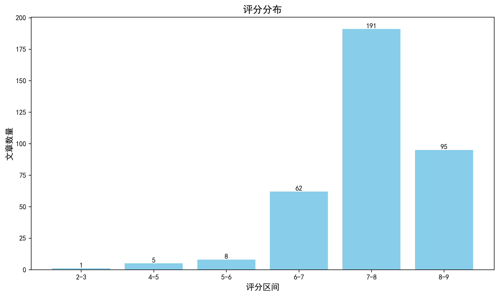

神经科学快讯·第021期 颠覆“神经元中心论”：星形胶质细胞编码焦虑与脑清除路径重写 (2026-08-02)
📊 本周概览
- 头条推荐: 0 篇
- 深度解读: 191 篇
- 简要提及: 140 篇
- 跨界启发: 0 篇
- 已过滤: 321 篇
🌏 环球视野

🌍 国家/地区分布 TOP 10
| 排名 | 国家 | 文章数量 |
|---|---|---|
| 1 | United States | 675 |
| 2 | China | 323 |
| 3 | United Kingdom | 166 |
| 4 | Germany | 120 |
| 5 | Canada | 71 |
| 6 | Switzerland | 68 |
| 7 | France | 51 |
| 8 | Japan | 42 |
| 9 | Australia | 40 |
| 10 | Korea | 37 |
总计: 1593 篇文章
🏢 研究机构 TOP 10
| 排名 | 机构 | 文章数量 |
|---|---|---|
| 1 | Chinese Academy of Sciences | 44 |
| 2 | Stanford University | 33 |
| 3 | University of Oxford | 28 |
| 4 | University of Pennsylvania | 27 |
| 5 | Fudan University | 27 |
| 6 | University of Cambridge | 24 |
| 7 | Tsinghua University | 22 |
| 8 | Howard Hughes Medical Institute | 21 |
| 9 | Peking University | 21 |
| 10 | University College London | 20 |
📊 评分分布
| 评分区间 | 文章数量 |
|---|---|
| 2-3 | 1 |
| 4-5 | 5 |
| 5-6 | 8 |
| 6-7 | 62 |
| 7-8 | 191 |
| 8-9 | 95 |
总计: 362 篇评分文章
📈 各领域文章分布
| 领域 | 深度解读 | 简要提及 | 总计 |
|---|---|---|---|
| 未知领域 | 0 | 94 | 94 |
| 系统与环路神经科学 | 43 | 9 | 52 |
| 认知神经科学 | 29 | 14 | 43 |
| 分子与细胞神经科学 | 30 | 6 | 36 |
| 临床与转化神经科学 | 25 | 7 | 32 |
| 感觉与运动神经科学 | 19 | 5 | 24 |
| 计算与理论神经科学 | 15 | 3 | 18 |
| 方法学 | 16 | 1 | 17 |
| 发育神经科学 | 13 | 0 | 13 |
| 社会与情感神经科学 | 1 | 1 | 2 |
合计: 深度解读 191 篇，简要提及 140 篇，共 331 篇
📚 精选文献（按领域分类）
临床与转化神经科学
中文标题: 重新审视多灶性运动神经病：机制、诊断与未来方向
作者: Dubuisson NJ, Rajabally YA, Philips C et al.
关键词: 多灶性运动神经病, 免疫机制, 神经电生理, 神经超声, 人类, 治疗策略
亮点: 多灶性运动神经病机制与诊疗的系统性更新，为未来研究方向提供整合框架
核心优势: 全面覆盖疾病机制、诊断标准和治疗进展，整合最新研究并提出未来方向，尤其聚焦于病理生理机制与临床管理的衔接
研究局限: 作为综述，缺乏原创实验数据；批判性整合和范式创新可能不够突出
目标读者: 神经病学临床医生、神经免疫学研究者、电生理诊断领域专家
推荐理由: 该综述全面更新了多灶性运动神经病（MMN）的免疫病理学模型，强调抗GM1抗体、节点病变与神经传导阻滞的关联，并讨论高分辨率超声和磁共振成像在早期诊断中的价值。对于临床与转化神经科学读者，这是一份将复杂免疫机制与诊断工具整合的权威参考，有助于设计针对性的机制研究和治疗策略。
中文标题: 性别特异性APOE4依赖性先天免疫调控脑膜淋巴、脑脂质、神经炎症和认知
作者: Nickoleta Delivanoglou, Kennedi T. Todd, Francisco Almeida et al.
单位: Department Of Neuroscience, Mayo Clinic, Jacksonville, Fl 32224, Usa; Life And Health Sciences Research Institute (Icvs), School Of Medicine, University Of Minho, Campus Gualtar, 4710-057 Braga, Portugal; Icvs/3B'S-Pt Government Associate Laboratory, Braga/Guimarães, Portugal 等
研究地区: United States, France
关键词: APOE4, 性别差异, 脑膜淋巴, 神经炎症, 脂质组学, 小鼠
亮点: 揭示APOE4性别二态性通过先天免疫-脑膜淋巴-脑脂质轴调节认知的新机制
核心优势: 综合人源化小鼠模型、CSF1R抑制干预和人类脑组织验证，从多层面建立性别特异性免疫-淋巴-脂质-认知因果链条，为AD个体化治疗提供关键靶点。
研究局限: 机制深度仍有限，未完全阐明APOE4性别差异的上游驱动因子，且临床样本验证较初步，因果关系在人类中尚需直接证据。
目标读者: 神经退行性疾病研究者、神经免疫学、脂质代谢与神经炎症领域科学家、转化医学研究人员
推荐理由: 该研究揭示了APOE4在雌雄小鼠中差异性地调节脑膜淋巴功能、脑脂质组成和神经炎症，并通过CSF1R抑制部分逆转相关表型，为理解APOE4性别依赖性AD风险提供了关键机制证据。研究整合免疫、脂质代谢与认知行为，对阿尔茨海默病的性别特异治疗策略具有直接转化意义。
中文标题: 从权衡到转化：神经技术的跨学科路线图
作者: Ruben Ruiz-Mateos Serrano, Joe G. Troughton, Nima Mirkhani et al.
关键词: 神经技术, 脑机接口, 神经调控, 转化研究, 跨学科, 临床
亮点: 整合神经科学、工程与伦理，绘制神经技术从基础权衡到临床转化的跨学科路线图。
核心优势: 系统梳理神经技术的关键权衡，提出可操作的转化框架，并融合多学科视角。
研究局限: 缺乏具体实验数据，部分建议可能需要更充分的实证支持；未来技术的快速演进可能使部分路线图假设过时。
目标读者: 神经科学家、神经工程学、临床神经病学、脑机接口和神经伦理研究者
推荐理由: 这篇论文系统梳理了神经技术从基础研究到临床转化的关键权衡与突破路径，涵盖脑机接口、神经调控等前沿方向。它不仅为转化应用提供了多学科整合的路线图，也为神经科学家理解实验室成果向临床落地的瓶颈和机遇提供了清晰的框架，是连接基础研究与医学实践的重要参考。
cGAS-mediated type I IFN signaling contributes to disease progression in drug-refractory epilepsy
深度解读 8.3/10中文标题: cGAS介导的I型干扰素信号促进药物难治性癫痫的疾病进展
作者: Yige Huang, Li Fan, Li Gan
关键词: 小胶质细胞, cGAS通路, I型干扰素, 难治性癫痫, 小鼠模型, 人类样本
亮点: 揭示cGAS介导的神经免疫信号是难治性癫痫进展的关键驱动因素，并提出新治疗靶点
核心优势: 人类组织与小鼠Dravet模型相结合，多维度验证了cGAS-STING通路在疾病中的作用，并通过遗传和药理学干预证实其治疗潜力。
研究局限: 主要基于Dravet综合征这一特定遗传性癫痫模型，对其他药物难治性癫痫的普适性及长期干预安全性仍需进一步研究。
目标读者: 癫痫研究者、神经免疫学专家、神经药理学和转化医学学者
推荐理由: 该研究将固有免疫感知与癫痫耐药机制连接，发现cGAS-STING通路在难治性癫痫患者脑组织小胶质细胞中异常激活，并通过Dravet综合征小鼠模型验证其在疾病进展中的驱动作用。研究不仅揭示了I型干扰素信号作为潜在治疗靶点，也为耐药性癫痫的免疫病理机制提供了直接证据，对临床转化具有重要价值。
中文标题: 小鼠和人类免疫细胞间B细胞CD19的转移
作者: Jasmin Ochs, Pia Schweineberg, Martin S. Weber
单位: Fraunhofer Institute For Translational Medicine And Pharmacology, Göttingen, Germany; Department Of Neurology, University Medical Center, Göttingen, Germany
研究地区: Germany
关键词: CD19, B-T细胞互作, EAE模型, 膜转移, 小鼠, 人类
亮点: 揭示CD19通过trogocytosis跨细胞转移，重新定义免疫谱系标志物的特异性，对靶向治疗提出警示。
核心优势: 利用小鼠、人类样本及功能实验多层面证据，首次证明CD19（含功能IgM）可被T细胞和髓系细胞获得并赋予B细胞功能，挑战CD19作为B细胞特异性标志物的传统观念。
研究局限: 对CD19转移的分子机制和体内生理意义研究尚浅；对inebilizumab治疗后CD19+ T细胞变化的临床关联性仍需更多转化验证。
目标读者: 免疫学家、神经免疫学研究者、抗体药物开发者及细胞间通讯领域学者
推荐理由: 本研究揭示CD19分子可在B-T细胞相互作用中通过trogocytosis转移至T细胞，打破其作为B细胞专属标志的传统认知。在实验性自身免疫性脑脊髓炎模型中，CD19+ T细胞扩增且具有更强的致脑炎潜能，表明该转移过程可能参与自身免疫性神经炎症的调控。这一发现不仅深化了对免疫细胞间通讯的理解，也为靶向CD19的癌症免疫疗法和神经炎症干预提供了潜在风险与机遇。对神经科学读者而言，该工作提示免疫突触的分子交换可能成为治疗炎性脱髓鞘疾病的新靶点。
中文标题: 脑脊液生物标志物揭示主要精神疾病跨诊断的突触功能障碍
作者: Andreas Göteson, Johanna Nilsson, Mikael Landén
单位: Goteson@Gu; Department Of Psychiatry And Neurochemistry, Institute Of Neuroscience And Physiology, Sahlgrenska Academy, University Of Gothenburg, Gothenburg, Sweden; Andreas
研究地区: Sweden
关键词: 质谱, 脑脊液, 突触蛋白, 跨诊断, 精神分裂症, 生物标志物
亮点: 脑脊液突触蛋白标志物跨精神疾病揭示共享突触功能障碍，并与遗传评分结合提升诊断效能。
核心优势: 跨诊断发现共享的突触生物标志物（LAMP1/NPTX2）并在独立首发精神病队列中验证，结合多基因评分提升分类精度。
研究局限: 横断面设计无法评估因果或纵向变化，样本组间规模可能不均，标志物特异性及其与神经影像等模态的关联尚需进一步验证。
目标读者: 精神病学临床研究者、精神疾病生物标志物与蛋白质组学专家、突触生物学研究者、计算精神病学及精准医学从业者。
推荐理由: 这项研究通过靶向质谱在脑脊液中定量检测低丰度突触蛋白，首次在多种精神疾病中揭示了跨诊断的突触功能障碍，显示精神分裂症谱系障碍突触蛋白显著降低，双相情感障碍和ADHD呈中间水平。该发现不仅为精神疾病的病理机制提供了分子层面的证据，也推动了突触功能的无创液体活检发展，具有重要的临床转化价值。
中文标题: TPPP/p25淀粉样播种活性作为多系统萎缩的特异性生物标志物
作者: Shuyi Zeng, Shenqing Zhang, Shengnan Zhang et al.
单位: Zhangjiang Institute For Advanced Study, Shanghai Jiao Tong University, Shanghai 200240, China; Interdisciplinary Research Center On Biology And Chemistry, State Key Laboratory Of Chemical Biology, Shanghai Institute Of Organic Chemistry, Chinese Academy Of Sciences, Shanghai 201203, China; Bio-X Institutes, Key Laboratory For The Genetics Of Developmental And Neuropsychiatric Disorders (Ministry Of Education), Shanghai Jiao Tong University, Shanghai 200030, China 等
资深研究者: Jian Wang (h指数=46); Dan Li (h指数=104)
研究地区: China
关键词: CSF生物标志物, 多系统萎缩, α-突触核蛋白, 淀粉样聚集, 冷冻电镜, TPPP/p25
亮点: 发现TPPP/p25淀粉样种子作为MSA特异性生物标志物，突破α-syn缺乏特异性的瓶颈
核心优势: 结合结构生物学与临床样本验证，开发出可区分MSA与PD等疾病的CSF种子扩增检测法。
研究局限: 摘要未提供详细的队列统计和诊断敏感性/特异性数据，临床转化验证程度仍待评估。
目标读者: 神经退行性疾病研究者、生物标志物开发专家、临床神经科医生及结构生物学家。
推荐理由: 该研究揭示TPPP/p25在脑脊液中作为多系统萎缩（MSA）特异性诊断标志物的潜力，突破α-突触核蛋白（α-syn）在突触核蛋白病鉴别诊断中的局限。结合冷冻电镜解析疾病相关突变触发TPPP/p25聚集的结构机制，为MSA的分子病理学提供新见解，并推动了基于淀粉样播种活性的精准诊断策略。
中文标题: 用于治疗亨廷顿舞蹈症的体内CRISPR碱基编辑
作者: Shraddha Shirguppe, Michael Gapinske, Pablo Perez-Pinera
关键词: CRISPR碱基编辑, 亨廷顿病, 基因治疗, HTT蛋白, 剪接调控, 纹状体
亮点: 通过碱基编辑调控剪接位点产生抗蛋白水解HTT异构体，在HD动物模型中改善病理和行为表型。
核心优势: 创新的治疗策略，通过破坏剪接受体实现抗蛋白水解，并在体内多维度验证疗效。
研究局限: 仅在一个啮齿动物模型验证，长期安全性和有效性仍需更多研究；可能无法完全抑制突变蛋白其他毒性机制。
目标读者: 神经病学、基因治疗、CRISPR碱基编辑、亨廷顿病研究者
推荐理由: 这项工作利用CRISPR碱基编辑技术，在体内破坏亨廷顿病（HD）相关基因HTT的外显子13剪接受体，产生抗蛋白水解的HTT异构体，从而阻断毒性N端片段的生成。研究为HD提供了新的治疗思路，将基因编辑策略从简单地敲除或修复扩展到精确调控剪接，具有显著的临床转化潜力。对于关注基因治疗、蛋白毒性以及神经退行性疾病的读者，这一工作展示了体内碱基编辑的实际应用价值。
Alzheimer disease in the computational era: from a deterministic disease to a multifaceted disorder.
深度解读 8.2/10中文标题: 计算时代的阿尔茨海默病：从确定性病变到多面性紊乱
作者: Benbaji M, Raveh B, Bassal L et al.
关键词: 阿尔茨海默病, 计算建模, 多模态数据, 机器学习, 生物标志物, 临床转化
亮点: 从确定性范式转向多维度计算视角，重新定义阿尔茨海默病的复杂性
核心优势: 提出将计算模型与多维度临床数据整合的全新框架，激励跨学科融合。
研究局限: 缺乏具体方法学细节，部分断言缺乏实证支撑，观点导向性强。
目标读者: 神经科学家、计算生物学家、临床研究者
推荐理由: 本文从计算科学视角重新审视阿尔茨海默病，挑战传统的单病因决定论，强调其多因素、异质性的本质。系统整合多组学、影像与临床数据，借助计算建模和机器学习，为疾病的精准分型与个体化治疗提供了全新框架。对神经退行性疾病研究者及计算神经科学家均具有重要参考价值。
中文标题: 人工智能在脑深部电刺激治疗运动障碍中的应用：系统综述与技术就绪度评估
作者: Zohra Souei, Muhammad Mushhood Ur Rehman, Harith Akram et al.
关键词: 人工智能, 脑深部刺激, 运动障碍, 系统评价, 帕金森病, 丘脑底核
亮点: 通过系统综述和技术准备度评估，揭示AI在脑深部刺激临床转化中的主要瓶颈在于验证不足而非算法缺陷。
核心优势: 基于239项研究的技术准备度评估，明确指出外部验证和前瞻性研究缺乏是限制AI在DBS应用的关键因素。
研究局限: 综述依赖现有文献，而文献本身多为回顾性、单中心和小样本，可能影响结论普适性；且摘要未披露检索细节。
目标读者: 神经调控、AI医疗、转化医学研究人员及临床神经科医生
推荐理由: 该研究系统梳理了2000-2025年间239项关于AI在脑深部刺激（DBS）中应用的研究，聚焦运动障碍领域，尤其以帕金森病和丘脑底核为主。它不仅全景式呈现了AI在靶点定位、参数优化、预测评估等环节的进展，还从验证充分性和技术就绪度角度剖析了临床转化瓶颈。对于从事DBS临床研究或神经调控技术开发的读者，这是一份兼具广度和深度的参考，有助于理解AI在精准神经外科中的现实边界与未来方向。
中文标题: 大规模CSF和血浆蛋白质组学揭示神经退行性疾病中免疫、突触和细胞外基质破坏
作者: Muhammad Ali, Jigyasha Timsina, Ying Xu et al.
单位: Department Of Psychiatry, Washington University, St; Department Of Neurology, Washington University, St; Louis, Mo 63110, Usa 等
资深研究者: Jigyasha Timsina (h指数=20); Menghan Liu (h指数=13)
研究地区: United States, Spain
关键词: 蛋白质组学, 人类, 脑脊液, 血浆, 神经退行, 质谱
亮点: 大规模跨疾病CSF/血浆蛋白质组揭示神经退行性疾病的共享与特异分子机制
核心优势: 多疾病、双组织蛋白质组学整合，识别高准确度生物标志物
研究局限: 缺乏独立验证队列和功能实验验证；蛋白组学技术可能受限于检测深度
目标读者: 神经退行性疾病研究者、蛋白质组学、生物标志物发现、计算生物学
推荐理由: 本研究通过对阿尔茨海默病、帕金森病、路易体痴呆和额颞叶痴呆的大规模脑脊液与血浆蛋白质组学分析，系统揭示了免疫、突触和细胞外基质通路的共享失调及疾病特异性分子特征。该工作为理解神经退行性疾病的共同机制、鉴别诊断和跨疾病生物标志物开发提供了重要资源，也为临床蛋白质组学在神经科学中的应用树立了新范式。
Rewiring the paralyzed body's false alarm.
深度解读 8.0/10中文标题: 重新连接瘫痪身体的虚假警报
作者: Soriano JE
关键词: 硬膜外电刺激, 自主神经反射异常, 脊髓损伤, 神经调控, 人类, 血压调控
亮点: 评论硬膜外电刺激逆转自主神经反射异常的转化前景，突出神经调控在脊髓损伤中的新应用。
核心优势: 聚焦于自主神经功能障碍这一常被忽视但临床重要的领域，及时介绍硬膜外电刺激的潜在机制和临床意义。
研究局限: 作为观点类文章，缺乏原始实验数据，深入机制讨论可能受限于篇幅。
目标读者: 神经调控、脊髓损伤康复、自主神经生理学及临床神经病学研究者
推荐理由: 该研究针对脊髓损伤后危及生命的自主神经反射异常，采用硬膜外电刺激实现功能逆转，为受损神经环路的功能重塑提供了直接的临床证据。研究不仅展示了神经调控在恢复自主神经稳态中的潜力，也为理解脊髓损伤后回路可塑性及血压调控机制提供了重要线索，是临床转化与环路机制结合的高价值工作。
中文标题: 基于真实世界问卷回答行为的跨国家认知障碍早期识别的低负担AI方法
作者: Hongxin Gao, Stefan Schneider, Haomiao Jin
关键词: 机器学习, 数字表型, 认知障碍, 早期筛查, 行为分析, 跨文化
亮点: 利用真实世界问卷应答行为作为数字生物标志物，实现低成本、跨文化的认知障碍早期筛查
核心优势: 将日常问卷行为与AI结合，在真实世界跨国家数据中验证，降低了认知筛查门槛，具有转化潜力。
研究局限: 仅凭问卷行为数据可能忽略认知障碍的复杂神经病理基础，且跨文化差异与自我报告偏差可能影响模型泛化。
目标读者: 认知神经科学、老年医学、AI医学与公共卫生研究者
推荐理由: 该研究针对传统认知筛查依赖专业人员和高成本的问题，提出基于真实世界问卷响应行为的低负担AI筛查方法。通过分析答题模式等行为指标，结合跨国家数据验证其早期识别认知障碍的效能，为社区和基层医疗提供可扩展的高通量筛查工具。其核心价值在于利用数字表型将临床评估从实验室扩展到真实环境，可能显著提高认知障碍的早期检出率，并为阿尔茨海默病等疾病的早期干预和临床试验富集提供新思路。
中文标题: 包涵体肌炎中线粒体呼吸的多水平损伤
作者: Shammas I, Iaali H, Watzlawik JO et al.
关键词: 肌肉活检, 线粒体呼吸, 包涵体肌炎, 组织化学, 生化分析
亮点: 从分子、细胞到组织水平系统揭示包涵体肌炎线粒体呼吸链的多层损伤模式
核心优势: 多维度（基因、蛋白、功能）整合分析线粒体呼吸障碍，提供了疾病机制的全面图景
研究局限: 未提供详细摘要，评估基于标题和期刊声誉，具体样本量和功能验证细节未知
目标读者: 神经肌肉疾病研究者、线粒体生物学和肌病病理学专家
推荐理由: 这项研究系统揭示了包涵体肌炎患者肌肉中线粒体呼吸链的多水平损伤，从复合体活性到组织学表现均呈现显著异常。通过整合呼吸测定与组织化学方法，研究不仅细化了线粒体功能障碍在疾病病理中的核心角色，还为针对线粒体代谢的干预策略提供了重要依据。对神经肌肉疾病及线粒体医学研究者具有重要参考价值。
中文标题: 围手术期髓系细胞重塑塑造CAR-T细胞在胶质母细胞瘤中的疗效
作者: Martin Pedard, Luis Castillo Cantero, Denis Migliorini
关键词: 胶质母细胞瘤, 髓系细胞, CAR-T, 免疫治疗, 肿瘤微环境, 围手术期
亮点: 揭示围手术期髓系细胞动态重塑对CAR-T疗法疗效的决定性影响，为优化胶质母细胞瘤免疫治疗提供新策略。
核心优势: 聚焦临床上尚未被充分重视的围手术期免疫微环境变化，连接手术应激与CAR-T疗效，具有转化意义。
研究局限: 缺少具体数据和实验细节，无法评估证据强度；可能样本量有限或机制深度不足。
目标读者: 肿瘤免疫学、神经肿瘤学、CAR-T细胞治疗和髓系细胞生物学研究者
推荐理由: 本研究聚焦围手术期髓系细胞重塑对CAR-T细胞治疗胶质母细胞瘤疗效的关键影响，揭示了肿瘤免疫微环境的动态变化如何调控CAR-T细胞的浸润与杀伤功能。这一发现为优化CAR-T治疗的时机与联合策略提供了重要理论依据，对推进难治性神经肿瘤的免疫治疗具有直接的临床转化意义。
Movement dependent neural substates within levodopa-induced dyskinesia in Parkinson's disease.
深度解读 7.6/10中文标题: 帕金森病左旋多巴诱导异动症中运动依赖的神经亚状态
作者: Habets JGV, Merk T, Mathiopoulou V et al.
关键词: 神经解码, 运动信号, 基底节, 多巴胺, 异动症, 帕金森病
亮点: 揭示帕金森病左旋多巴诱导异动症中运动依赖的神经亚状态动态特征
核心优势: 利用DBS感知技术捕捉运动依赖的神经亚状态，为理解异动症的神经回路机制提供直接的临床神经生理证据。
研究局限: 基于特定DBS患者队列的记录，样本量和电极位置可能限制结论的普适性，且缺乏更细粒度的行为与神经信号耦合分析。
目标读者: 运动障碍领域神经科医生、DBS研究者、计算神经科学家以及研究基底节环路功能的学者
推荐理由: 该研究聚焦左旋多巴诱导异动症中的运动依赖性神经亚状态，通过解析与运动参数相关的神经动态变化，揭示了异动症发生过程中基底节环路异常活动的时空特征。这一发现不仅深化了对帕金森病运动并发症机制的理解，也为开发针对特定神经亚状态的闭环干预策略提供了关键靶点，具有重要的临床转化价值。
中文标题: 低强度脉冲超声介导的β受体阻滞剂与aPD-L1经鼻-脑共递送增强胶质母细胞瘤免疫治疗
作者: Lei Dong, Zhengcheng Yun, Jinbing Xie
关键词: 超声递送, 鼻脑通路, 胶质母细胞瘤, 免疫治疗, 小鼠模型, β受体阻滞剂
亮点: 鼻脑共递送策略与超声辅助结合，为胶质母细胞瘤免疫治疗提供新途径
核心优势: 创新性地利用低强度脉冲超声介导鼻脑通路，同时递送β受体阻滞剂和aPD-L1，有望增强免疫治疗效果
研究局限: 缺乏具体实验证据支持，且该策略的临床转化可行性仍需验证
目标读者: 神经肿瘤学、免疫治疗、药物递送及超声医学研究者
推荐理由: 该研究提出低强度脉冲超声介导的鼻到脑药物递送策略，将β受体阻滞剂与aPD-L1协同递送至胶质母细胞瘤微环境，显著增强免疫治疗效果。该策略巧妙利用超声开放血脑屏障并激活肿瘤免疫应答，为脑肿瘤联合免疫治疗提供了新范式。不仅展示了物理手段与免疫疗法结合的可能性，也为临床转化提供了扎实的临床前证据。
中文标题: 纤维肌痛的遗传学及其与精神与医学特征的关系
作者: Uri Bright, Sarah Beck, Joel Gelernter
单位: Department Of Psychiatry, Yale School Of Medicine, New Haven, Ct, Usa; Gelernter@Yale
研究地区: United States
关键词: GWAS, 人类, 多祖先群体, 纤维肌痛, 疼痛遗传, 多性状分析
亮点: 大规模多祖先GWAS揭示纤维肌痛的遗传基础及其与精神疾病的共享遗传机制
核心优势: 结合多个祖先队列和多种遗传分析方法，全面揭示了纤维肌痛的遗传位点及其与慢性疼痛、PTSD和抑郁症的强烈遗传相关性。
研究局限: 缺乏功能验证，难以从遗传关联直接推断因果机制；不同祖先样本量不均等可能影响发现。
目标读者: 复杂疾病遗传学、疼痛研究、精神遗传学和计算生物学研究者
推荐理由: 这项研究通过对大规模多祖先人群的GWAS和MTAG分析，鉴定了10个与纤维肌痛相关的基因组位点，并揭示了其与疼痛、精神及多种医学性状的共享遗传结构。研究不仅增进了对纤维肌痛这种慢性疼痛综合征遗传机制的理解，也为神经科学中疼痛与精神共病的生物学基础提供了重要线索，对慢性疼痛的精准分型和治疗靶点发现具有转化价值。
中文标题: 可穿戴贴片用于连续监测汗液中的左旋多巴：迈向无劳累、无电源的帕金森病药效动力学评估
作者: Saha T, Khan MI, Longardner K et al.
关键词: 可穿戴设备, 汗液监测, 左旋多巴, 帕金森病, 生物传感, 药物监测
亮点: 无创汗液连续监测左旋多巴，有望实现帕金森病用药的实时药效评估。
核心优势: 开发了可穿戴汗液传感器，实现无创、连续、无电源依赖的左旋多巴监测，为个性化药物管理提供了新思路。
研究局限: 目前缺乏大规模临床验证，汗液与血浆药物浓度的定量关系、传感器长期稳定性及个体差异仍需深入研究。
目标读者: 帕金森病临床医生、可穿戴传感器研究者、药物代谢动力学与精准医学领域科学家
推荐理由: 本研究报道了一种新型可穿戴贴片，能够通过汗液实时监测帕金森病患者体内的左旋多巴浓度，无需运动和额外供能。该技术为药物动力学评估提供了无创连续的解决方案，有望推动个体化治疗和临床试验设计。对于关注疾病监测和转化应用的神经科学研究者，这一成果具有重要的临床价值和实践意义。
中文标题: 小清蛋白中间神经元激活挽救双基因失神癫痫小鼠的癫痫发作和社交新颖性损伤
作者: Qing-Long Miao, James Okoh, Ahmet S. Asan et al.
关键词: 光遗传学, 小鼠, 小清蛋白中间神经元, 癫痫, 社交新奇, 行为学
亮点: 激活PV中间神经元同时缓解失神癫痫发作与社交新奇缺陷，揭示两者共享的神经回路机制
核心优势: 首次在双基因失神癫痫模型中证明PV中间神经元激活同时挽救癫痫发作和社交新奇缺陷，提示共同病理机制。
研究局限: 基于特定双基因小鼠模型，且缺乏全文信息，难以评估实验细节和人类转化潜力。
目标读者: 癫痫与社交行为相关的神经科学家、中间神经元功能研究者、计算生物学家
推荐理由: 该研究在双基因缺失型失神癫痫小鼠模型中，通过光遗传学激活小清蛋白（PV）中间神经元，不仅显著抑制了癫痫发作，还修复了受损的社交新奇偏好。这一发现揭示了PV中间神经元在癫痫共病社交障碍中的关键桥梁作用，为临床转化提供了新的干预靶点，同时也为理解神经环路兴奋/抑制失衡如何导致跨域行为缺陷提供了重要证据。
中文标题: 非侵入性脑机接口的整体视角
作者: Yidan Ding, Joshua Kosnoff, Bin He
关键词: 非侵入式, 脑机接口, 信号处理, 脑电, 康复应用, 多模态
亮点: 从神经调控、深度学习和机器人整合三大前沿方向对非侵入式BCI进行整体性回顾，提出模块化框架。
核心优势: 整合了信号获取、处理与输出的模块化视角，并系统梳理了近年来在神经调控增强、深度神经网络分析和机器人应用方面的进展，作者为领域内权威。
研究局限: 基于摘要，对各方向的批判性评述有限，且未深入讨论技术挑战和伦理问题，指导性建议较为泛化。
目标读者: 脑机接口、神经工程、计算神经科学及神经康复领域的研究者和临床转化人员。
推荐理由: 本文从整体视角系统梳理了非侵入式脑-机接口的信号获取、解码与反馈模块，重点阐述了近年来在空间分辨率和信号质量方面的突破。对于神经科学家而言，它不仅提供了BCI技术迭代的最新图景，还揭示了如何通过计算方法和传感器进步将基础神经编码知识转化为临床可用的交互系统，是连接神经科学与应用技术的重要参考。
中文标题: 帕金森病精神症状的丘脑底核空间-频谱-连接性特征
作者: Wang L, Zhao Y, Huang P et al.
关键词: 人类, 帕金森病, 丘脑底核, 精神症状, 频谱分析, 功能连接
亮点: 融合空间图谱、频谱特征与脑网络连接分析，揭示帕金森病丘脑底核精神症状的神经生理基础
核心优势: 首次将STN的空间、频谱与连接信息整合分析，为DBS神经调控精神症状提供了多模态证据
研究局限: 样本量可能有限且源自手术期记录，跨场景泛化性及因果解释仍需进一步验证
目标读者: 功能性神经外科、运动障碍与精神神经科学、脑信号分析及计算神经科学研究者
推荐理由: 该研究聚焦帕金森病中常被忽视的精神症状，通过丘脑底核的时空频谱与连接性分析，揭示了与精神症状相关的神经振荡模式。工作为深部脑刺激靶向调控精神症状提供了潜在生物标志物，也推动了运动障碍疾病的精准神经精神学理解。推荐给临床神经科学和系统环路研究者。
中文标题: 重症肌无力患者中I型干扰素自身抗体与低氧性COVID-19肺炎的高风险
作者: Gervais A, Marchal A, Maillard A et al.
关键词: 人类, 重症肌无力, I型干扰素抗体, COVID-19, 低氧性肺炎, 临床队列
亮点: 揭示重症肌无力患者携带I型干扰素自身抗体与COVID-19肺炎低氧风险增高的临床关联
核心优势: 聚焦罕见人群（重症肌无力伴抗I型IFN自身抗体），为感染风险分层提供了潜在生物标志物。
研究局限: 基于摘要信息有限，机制解析不明确，且缺乏外部验证队列或功能实验支持。
目标读者: 神经免疫学、感染免疫学、临床神经科及重症医学研究者
推荐理由: 这项临床研究揭示了重症肌无力患者中I型干扰素自身抗体与COVID-19肺炎低氧血症高风险之间的显著关联。重症肌无力作为经典的神经肌肉接头疾病，其免疫病理机制与全身免疫功能障碍密切相关。该发现不仅为神经免疫疾病患者的感染风险管理提供了新的生物标志物，也为理解自身抗体如何调节抗病毒固有免疫反应提供重要线索，对神经免疫交叉领域的转化研究具有指导意义。
中文标题: 难治性抑郁症的神经外科手术：评估与决策
作者: Suveges SB, Gilbertson T, Steele JD
关键词: 神经外科, 难治性抑郁, 深部脑刺激, 临床决策, 患者偏好, 治疗评估
亮点: 从决策与价值评估角度系统审视神经外科治疗难治性抑郁症的综合框架
核心优势: 将临床决策与价值评估结合，为TRD神经外科治疗提供整合性视域
研究局限: 缺乏具体临床数据支持，作为综述其推断依赖既有文献质量
目标读者: 精神外科、神经调控、医学伦理及抑郁障碍临床研究者
推荐理由: 该研究聚焦难治性抑郁症神经外科治疗中的价值评估与决策机制，系统梳理了疗效、风险与患者偏好的复杂权衡，为个体化手术适应症筛选和共享决策实践提供了直接参考。其对情感障碍神经调控治疗的决策科学视角，也为临床与转化神经科学提供了重要补充。
Intracranial EEG synchrony tracks antiseizure medication load in drug-resistant epilepsy.
简要提及 6.9/10中文标题: 颅内脑电图同步性追踪耐药性癫痫中的抗癫痫药物负荷
作者: Ma D, Ghosn NJ, Aguila CA et al.
摘要: 首次揭示颅内脑电同步性与抗癫痫药物负荷的直接关联，为药物耐药性癫痫的治疗提供可动态追踪的神经生理学标志物。
优势: 将临床用药强度与神经同步性动态联系起来，提供了客观、可量化的脑网络状态指标。 局限: 作为临床观察性研究，可能存在混杂因素（药物类型、基线癫痫活动等），且iEEG样本代表性有限。 受众: 癫痫临床医生、神经电生理学家、计算神经科学和神经药理学研究人员
Longitudinal analysis reveals myeloid cell contributions to murine neuroPASC pathogenesis
简要提及 6.8/10中文标题: 纵向分析揭示髓系细胞对小鼠神经PASC发病机制的贡献
作者: Lu Tan, Abhishek K. Verma, Stanley Perlman
摘要: 纵向追踪揭示髓系细胞在神经PASC中的动态致病作用
优势: 利用纵向分析模型，清晰展示了髓系细胞随时间变化对神经病理的贡献，为神经PASC机制提供了关键动态证据。 局限: 基于小鼠模型，且摘要中未提供具体机制细节，向人类转化及临床相关性有待进一步验证。 受众: 神经免疫学、病毒学、小胶质细胞生物学及神经病理学研究者
中文标题: 路易体痴呆中淀粉样蛋白相关的脑低灌注和多巴胺丢失轨迹
作者: Park CW, Choi Y, Lee HS et al.
摘要: 纵向多模态影像揭示路易体痴呆中淀粉样蛋白相关的血流与多巴胺丢失轨迹
优势: 将淀粉样病理、脑灌注和多巴胺能变性在纵向轨迹上整合，可能为DLB进展分型提供影像学标志物 局限: 缺乏可获取的方法学细节和结果，无法评估样本代表性、混杂控制及统计效力 受众: 神经退行性疾病研究者、神经影像与核医学专家、生物标志物开发人员
中文标题: 基于脑电图的Dravet综合征分类的深度学习架构：预训练与非预训练混合CNN-LSTM模型的比较研究
作者: Hussain S, Jawed S, Mir A et al.
摘要: 利用预训练混合CNN-LSTM架构提升基因突变相关癫痫的EEG分类能力
优势: 针对罕见的Dravet综合征，系统比较预训练与未预训练深度学习模型在EEG分类中的表现，为临床辅助诊断提供计算工具。 局限: 仅凭标题无法评估实验细节；罕见病样本量可能较小；模型泛化性和可解释性有待验证。 受众: 计算神经科学、医学信号处理、癫痫临床研究者
中文标题: 整合网络药理学、转录组学和分子对接鉴定积雪草在神经退行性疾病中的候选成分和靶点
作者: Xie Y, Lim CT, Lam XJ et al.
摘要: 整合网络药理学、转录组学和分子对接，系统揭示积雪草多靶点治疗神经退行性疾病的潜在候选成分
优势: 通过多组学计算策略整合预测积雪草活性成分与神经退行性疾病靶点，提供了后续实验验证的候选清单 局限: 缺乏湿实验验证，预测结果可靠性有限；计算发现的假阳性风险较高 受众: 天然产物药物研发、网络药理学和神经退行性疾病机理研究者
分子与细胞神经科学
中文标题: 少突胶质细胞编码的乳酸脱氢酶A通过蛋白质乳酰化将糖酵解与髓鞘再生耦联
作者: Ming-Yue Bao, Xiu-Qing Li, Qing-Qing Sun et al.
单位: Department Of Medical Experimental Center, Shenzhen Nanshan People'S Hospital, Shenzhen, Guangdong 518052, China; Key Laboratory Of Medicinal Resources And Natural Pharmaceutical Chemistry (Shaanxi Normal University), The Ministry Of Education, College Of Life Sciences, Shaanxi Normal University, Xi'An, Shaanxi 710119, China; Department Of Neurology, Fourth Military Medical University, Xijing Hospital, Xi'An, Shaanxi 710119, China 等
研究地区: China
关键词: 少突胶质细胞, 乳酸化修饰, 糖酵解, 髓鞘再生, LDHA, 小鼠
亮点: 首次揭示少突胶质细胞LDHA通过蛋白乳酸化将糖酵解与髓鞘再生耦联，为脱髓鞘疾病提供酶治疗新靶点
核心优势: 发现LDHA和CAII的乳酸化修饰在髓鞘修复中的关键作用，连接代谢与表观遗传，并通过遗传学功能实验提供多模态验证
研究局限: 机制细节尚不完整，乳酸化位点调控网络未完全阐明；治疗潜力仅在动物模型验证，缺乏人类样本和临床转化证据
目标读者: 少突胶质细胞生物学、髓鞘再生、神经代谢、表观遗传学及脱髓鞘疾病研究者
推荐理由: 该研究揭示少突胶质细胞在脱髓鞘病变中糖酵解效率降低，并首次将蛋白乳酸化修饰与髓鞘再生直接联系起来。通过遗传学手段证实LDHA在少突胶质细胞谱系中的关键作用，为多发性硬化等脱髓鞘疾病的代谢靶向治疗提供了全新视角。方法上结合代谢组学与条件性基因敲除，为胶质细胞代谢研究树立了范式。
A massively parallel CRISPR-based screening platform for modifiers of neuronal depolarization
深度解读 8.3/10中文标题: 一种基于大规模并行CRISPR筛选平台用于神经元去极化修饰因子
作者: Steven C. Boggess, Vaidehi Gandhi, Martin Kampmann
关键词: CRISPR筛选, 神经元去极化, 高通量, 离子通道, 分子机制, 遗传扰动
亮点: 大规模并行CRISPR筛选平台直接针对神经元去极化调控因子，填补该领域高通量功能基因组学空白。
核心优势: 技术原创性高，将CRISPR筛选与神经元去极化表型结合，实现单基因水平的功能解析，方法论严谨且可推广。
研究局限: 基于细胞系或体外神经元模型，体内生理相关性和因果验证仍需进一步研究。
目标读者: 神经遗传学、功能基因组学、离子通道与神经元兴奋性研究者
推荐理由: 该研究构建了大规模并行CRISPR筛选平台，系统鉴定神经元去极化的功能调节因子。通过精准的遗传扰动和高通量表型读出，揭示了调控神经元兴奋性的关键分子通路，为理解神经系统功能及疾病机制提供了新靶点。方法学创新性强，可推广至其他电生理表型的高通量筛选，具有广泛的转化潜力。
中文标题: 脱辅基、激动剂和拮抗剂结合的异源红藻氨酸受体的冷冻电镜结构
作者: Changping Zhou, Guadalupe Segura-Covarrubias, Ashlee M’Kay Hoffman et al.
关键词: 冷冻电镜, 红藻氨酸受体, GluK2/GluK5, 配体结合域, 构象变化
亮点: 异聚体海人藻酸受体的冷冻电镜结构揭示亚基特异性配体门控与脱敏的分子基础
核心优势: 首次系统性解析GluK2/GluK5异聚体在不同配体状态下的高分辨结构，并阐明亚基特异性拮抗机制，为靶向KAR亚型药物设计提供新框架。
研究局限: 功能性验证相对有限，未结合电生理或动力学证据，对突变体构象变化的生理意义阐释不够深入。
目标读者: 结构生物学家、神经药理学研究者、离子通道和受体信号转导领域的科学家
推荐理由: 本研究利用冷冻电镜技术解析了GluK2/GluK5异源四聚体红藻氨酸受体在apo、激动剂和拮抗剂结合状态下的高分辨率结构，首次揭示了该受体亚型的构象转换机制。这些结构不仅解释了亚基间配体结合域的协同互作，还为设计选择性KAR调节剂提供了精确模板，对理解兴奋性突触传递和调控具有重要价值，是离子型谷氨酸受体结构生物学的一项关键进展。
中文标题: 少突胶质细胞中一种活动调节的跨髓鞘运输路线（TRAM）用于驱动细胞器转移
作者: Katie J. Chapple, Tabitha R. F. Green, Julia M. Edgar
关键词: 活体成像, 小鼠, 髓鞘, 少突胶质细胞, 细胞器运输, 电活动调控
亮点: 揭示髓鞘内存在一条受神经活动调控的连续运输通道，重新定义少突胶质细胞与轴突间的物质交换机制
核心优势: 首次提出并验证TRAM概念，结合活体成像、电活动调控和遗传学手段，将髓鞘细胞生物学与神经功能直接关联
研究局限: 摘要中未提供定量数据及分子机制细节，且KIF21B/CNP敲除导致的轴突病理是否直接源于运输障碍仍需进一步因果证明
目标读者: 胶质细胞生物学、髓鞘功能、神经代谢和轴突-胶质相互作用领域的研究者
推荐理由: 本研究通过活体成像揭示了少突胶质细胞髓鞘内存在微管依赖的细胞器运输途径（TRAM），并发现该运输受神经元电活动调节。这一发现改变了我们对髓鞘仅作为被动绝缘结构的传统认知，提示髓鞘细胞质空间作为活性运输通道，在轴突代谢支持中发挥动态作用。对于理解髓鞘-轴突互作及其在神经系统疾病中的意义具有重要价值。
中文标题: 线粒体积累和溶酶体功能障碍导致阿尔茨海默病中的线粒体斑块
作者: Xiuli Dan, Deborah L. Croteau, Vilhelm A. Bohr
关键词: 阿尔茨海默, 线粒体自噬, 溶酶体, 小鼠模型, 荧光成像, 神经元突起
亮点: 揭示阿尔茨海默病中一种新的病理结构——线粒体斑块，为理解线粒体功能障碍与神经退行病变提供新视角
核心优势: 首次在AD模型小鼠和人类脑中定义线粒体斑块，结合多种模型验证其存在，并揭示其与溶酶体功能障碍及线粒体堆积的关联。
研究局限: 目前对MPs的形成机制和功能障碍大多基于关联性观察，尚缺乏直接因果干预和功能影响评估，其临床相关性亦需进一步探索。
目标读者: 阿尔茨海默病研究者、线粒体生物学专家、神经病理学家和细胞生物学学者
推荐理由: 该研究利用mt-Keima报告基因在AD小鼠模型中首次直接展示线粒体自噬功能障碍，并定义了新病理结构——线粒体斑块（MPs）。发现线粒体异常积累先于溶酶体招募，揭示了延迟性清除机制在AD神经退行中的关键作用，为早期诊断和干预提供了新靶点与方法。
中文标题: 脂质组学分析揭示血浆膜脂质的年龄依赖性变化影响神经干细胞老化
作者: Xiaoai Zhao, Ryan M. Feitzinger, Jeeyoon Na et al.
单位: Department Of Comparative Medicine, Yale University, New Haven, Ct, Usa; Department Of Chemistry, Stanford University, Stanford, Ca, Usa; Department Of Genetics, Stanford University, Stanford, Ca, Usa 等
资深研究者: Anne Brunet (h指数=89)
研究地区: United States
关键词: 脂质组学, 质谱, 神经干细胞, 衰老, 质膜脂质, 多不饱和脂肪酸
亮点: 揭示质膜脂质重塑通过MBOAT2调控神经干细胞衰老，并提示脂质补充可作为抗脑衰老新策略
核心优势: 综合多尺度脂质组学与遗传学、功能恢复实验，建立脂质-膜物理性质-干细胞激活的因果链条，具有转化潜力。
研究局限: 研究主要基于小鼠模型，且未深入解析具体脂质分子如何调控下游信号通路，临床应用距离尚远。
目标读者: 衰老生物学、神经干细胞微环境、脂质组学及再生医学研究者
推荐理由: 该研究通过高通量脂质组学系统刻画了静息态神经干细胞衰老过程中复杂脂质的动态变化，揭示多不饱和脂肪酸在多种脂类中的普遍上调，为理解神经干细胞衰老的脂质代谢机制提供了全新视角。结合空间脂质组学发现特定脂质在脑组织中的异质性分布，提示脂质微环境可能调控神经干细胞的再生潜能，为衰老相关认知衰退和神经修复策略开发提供了潜在靶点。
Glial heterogeneity shapes region-specific angiogenesis and neurovascular integrity in the CNS
深度解读 8.2/10中文标题: 胶质细胞异质性塑造中枢神经系统区域特异性血管生成和神经血管完整性
作者: Minghe Shen, Zhidan Li, Guojiao Huang et al.
单位: Department Of Biotherapy, State Key Laboratory Of Biotherapy And Cancer Center, West China Hospital, Sichuan University, Chengdu, China; Center For Translational Medicine, Key Laboratory Of Birth Defects And Related Disease Of Women And Children Of Moe, State Key Laboratory Of Biotherapy, West China Second University Hospital, Sichuan University, Chengdu, Sichuan, P
资深研究者: Yue Zhang (h指数=73)
研究地区: China
关键词: 星形胶质细胞, 少突胶质细胞, 血管生成, 遗传消融, 单细胞测序, 神经血管单元
亮点: 胶质细胞谱系特异的促血管生成程序揭示灰白质血管发育差异的新机制
核心优势: 首次证明星形胶质细胞和少突胶质细胞分别驱动灰质和白质的血管生成，并识别出HIF1α-VEGF和CHD8-Tgfa/Sema5a通路
研究局限: 主要基于小鼠模型，人类中的保守性尚未验证；且未详细探讨胶质细胞异质性的动态变化
目标读者: 神经科学、血管生物学、胶质细胞生物学和神经发育疾病研究者
推荐理由: 本研究通过结合胶质细胞谱系分析和遗传消融技术，揭示了星形胶质细胞与少突胶质细胞谱系在调控中枢神经系统灰质与白质血管生成中的差异化功能。这一发现为理解区域特异的神经血管耦联提供了全新的细胞机制框架，并有望为神经血管完整性受损相关疾病（如缺血、脱髓鞘）的靶向干预提供思路。
中文标题: NMDA受体生理与功能多样性的原子层面解析
作者: Ke Xu, Siming Wu, Shujia Zhu
单位: Institute Of Neuroscience, Cas Center For Excellence In Brain Science And Intelligence Technology, Chinese Academy Of Sciences, Shanghai 200031, China; Department Of Neuroscience, School Of Life Sciences, Southern University Of Science And Technology, Shenzhen 518055, China; University Of Chinese Academy Of Sciences, Beijing, China 等
研究地区: China
关键词: 冷冻电镜, NMDA受体, 离子通道, 突触可塑性, 谷氨酸, 亚基组成
亮点: 系统整合NMDA受体原子结构、生理功能与药理学多样性的前沿进展，提出亚型选择性变构调控的转化方向
核心优势: 以原子分辨率视角将NMDAR的结构、组装、生理和药理特征有机结合，突出冷冻电镜和天然受体提取技术带来的新见解，并对未来治疗设计给出清晰指引
研究局限: 作为综述未提供原始实验数据，部分结论依赖现有结构模型，对体内复杂异质性的机制讨论尚需更多验证
目标读者: 神经药理学、结构生物学、突触生理学与计算神经科学研究人员
推荐理由: 本篇综述利用冷冻电镜等技术从原子尺度揭示了NMDA受体在亚基组成、药理和生物物理维度上的功能多样性。作者阐明了这些受体作为突触整合器的分子机制，以及其允许钙离子进入突触后神经元以触发可塑性信号的方式。这一视角将受体结构多样性与脑发育、学习和记忆的生理功能联系起来，为理解谷氨酸能突触传递以及相关神经精神疾病的病理机制提供了重要框架。
Live-imaging of endogenous neurofascins reveals glial adhesion shapes developing nodes of Ranvier
深度解读 8.1/10中文标题: 内源性神经束蛋白活体成像揭示胶质细胞粘附塑造发育中的郎飞结
作者: Lyster-Binns, P., Marshall-Phelps, K., Siems, S. et al.
关键词: 斑马鱼, 活体成像, 基因敲入, Ranvier节点, 胶质细胞, 髓鞘形成
亮点: 内源性神经fascin活体成像揭示胶质细胞黏附驱动Ranvier节点发育塑形
核心优势: 构建内源性神经fascin荧光标记的斑马鱼模型，无过表达伪影，首次实现节点形成过程活体动态观察
研究局限: 限于斑马鱼外周神经系统，哺乳动物中的保守性有待验证；未深入机制解析
目标读者: 神经胶质细胞生物学、髓鞘形成、发育神经科学、活体成像研究者
推荐理由: 这项研究通过对斑马鱼内源性neurofascin蛋白进行荧光敲入，首次实现了对Ranvier节点组装过程的体内实时成像。作者揭示了胶质细胞粘附在节点形成中的动态作用，为理解髓鞘轴突特化域的建立提供了新的分子与细胞机制。方法上的创新使其成为神经发育与胶质生物学交叉领域的重要进展。
中文标题: 可扩展的tau蛋白病人类神经元模型产生内源性种子能力的4R tau
作者: Eliona Tsefou, Sumi Bez, Timothy J. Y. Birkle et al.
关键词: iPSC, tau蛋白病, 4R tau, 额颞叶痴呆, 神经元模型, 药物筛选
亮点: 一种可扩展的i3N神经元模型，内源性产生种子competent 4R tau，并集成HiBiT标记进行高通量药物筛选。
核心优势: 开发了首个能自发产生种子competent 4R tau的人源i3N模型，结合CRISPR编辑实现内源性tau定量，为4R tauopathy药物发现提供可扩展平台。
研究局限: 模型仅覆盖28天培养，未提供长期稳定性和体内验证；病理表型主要基于细胞自噬和蛋白清除通路，对其他疾病机制的关联性仍需验证。
目标读者: 神经退行性疾病研究者、干细胞模型开发者、药物筛选团队以及tau病理机制研究专家。
推荐理由: 该研究开发了可规模化的人源诱导多能干细胞（iPSC）神经元模型，通过FTD相关的剪接突变使4R tau占比超过75%，并自发产生过度磷酸化、体树突错误定位及内源性种子活性的tau聚集。这一模型填补了现有干细胞模型无法产生种子活性tau的空白，为4R tau蛋白病的机制研究和药物高通量筛选提供了关键工具，具有重要的转化意义。
中文标题: 髓系细胞进入中枢神经系统的门控
作者: Lukas Amann, Marco Prinz
单位: Amann@Uniklinik-Freiburg; Electronic Address: Lukas; Institute Of Neuropathology, Medical Faculty, University Of Freiburg, Freiburg, Germany 等
研究地区: Germany, United Kingdom
关键词: 髓系细胞, 神经免疫, 免疫门控, 脉络丛, 神经炎症, 衰老
亮点: 聚焦髓系细胞进入中枢神经系统的解剖与分子'门户'，整合从发育到老年的免疫运输新认知
核心优势: 由领域专家撰写，系统梳理髓系细胞进入CNS的多条途径，并提出'myeloid gateways'概念，兼具机制总结和临床转化指向
研究局限: 作为综述不含原始数据，具体分子机制细节和定量比较可能有限，且部分内容可能基于作者视角造成选择偏差
目标读者: 神经免疫学、神经退行性疾病、细胞治疗和发育神经生物学研究者
推荐理由: 这项研究聚焦于髓系细胞进入中枢神经系统的解剖与分子门控，系统梳理了健康发育、衰老及神经病理条件下免疫细胞穿越CNS边界的关键位点与调节机制。其价值在于将CNS免疫豁免的传统观点更新为动态调控的免疫进入模型，为理解神经炎症起始、神经退行性疾病及自身免疫性脑脊髓炎等提供了统一框架，并为靶向髓系细胞浸润的策略设计提供了重要参考。
中文标题: 确定GABAA受体亚型选择性纳米抗体的分子和生理作用
作者: Jose Enrique Gonzalez-Prada, Sulin Liu, Chuhan Shang et al.
单位: Department Of Neuroscience, Physiology And Pharmacology, University College London, London, Uk; Department Of Pharmacology, University Of Cambridge, Cambridge, Uk; Department Of Physiology, Development And Neuroscience, University Of Cambridge, Cambridge, Uk 等
研究地区: United Kingdom, United States
关键词: GABA_A受体, 纳米抗体, 亚型选择性, 电生理, 行为学, 神经精神疾病
亮点: 亚型选择性纳米抗体突破GABA_A受体药物开发瓶颈
核心优势: 整合结构生物学、电生理与行为学，证明纳米抗体可实现强效且亚型特异的GABA_A受体调控
研究局限: 临床转化尚需人源化及安全性等进一步验证；α2/α3亚型在脑内表达的复杂性可能限制靶向效果
目标读者: 神经药理学家、结构生物学家、精神疾病研究者、药物开发人员
推荐理由: 本研究开发了针对GABA_A受体α2/α3亚型的纳米抗体，突破了传统小分子药物在亚型选择性上效力与特异性的权衡。这些纳米抗体能够在分子、细胞和生理层面精准区分不同亚型的功能，为解析抑制性神经传递在焦虑、疼痛、癫痫及自闭症等病理状态中的作用提供了高效工具，同时为基于抗体的神经精神疾病治疗策略开辟了新方向。
中文标题: 一种促进白天清醒的脂质结合蛋白主要位于体表，并阻断光诱导的脑内脂质过氧化
作者: Cameron R. Love, Isaac Edery
单位: Center For Advanced Biotechnology And Medicine, Rutgers University, 679 Hoes Lane, Piscataway, Nj 08854, Usa; Department Of Molecular Biology And Biochemistry, Rutgers University, 679 Hoes Lane, Piscataway, Nj 08854, Usa; Electronic Address: Iedery@Cabm 等
研究地区: United States
关键词: 果蝇, 光暴露, 脂质过氧化, 睡眠调控, 高脂饮食, 活性氧
亮点: 揭示体表抗氧化蛋白通过保护大脑免受光诱导氧化损伤来调节白天清醒的新机制
核心优势: 发现并揭示一个全新的生理机制——外周体表脂质结合蛋白通过抑制光诱导的脑内脂质过氧化来促进白天清醒，将光暴露、氧化应激、血脑屏障和睡眠调控联系起来。
研究局限: 研究基于果蝇模型，尚需在哺乳动物中验证；且对DYW蛋白在体表神经元如何具体保护BBB的分子机制仍需深入研究。
目标读者: 神经科学、睡眠生物学、氧化应激与代谢研究，以及果蝇遗传学专家
推荐理由: 这项研究在果蝇中发现了一个位于体表的脂质结合蛋白DYW，它通过阻断可见光诱导的脑内脂质过氧化来促进白天清醒。研究揭示高脂饮食会加剧光依赖的活性氧积累和脂质过氧化，并优先增加dyw缺失动物的白天睡眠。该工作首次将光暴露、饮食与脑内氧化损伤联系起来，为理解睡眠调控和光诱导脑损伤提供了新的分子机制，也为相关神经保护策略提供了潜在靶点。
中文标题: Arc通过细胞外囊泡介导tau蛋白的细胞间传播
作者: Mitali Tyagi, Eric de Hoog, Matthew Grega et al.
单位: Department Of Neurobiology, Spencer Fox Eccles School Of Medicine, University Of Utah, Salt Lake City, Usa; Institute For Biophysics, Goethe University Frankfurt, Frankfurt Am Main, Germany; Department Of Theoretical Biophysics, Max Planck Institute Of Biophysics, Frankfurt Am Main, Germany 等
资深研究者: Balázs Fábián (h指数=20); Bradley T. Hyman (h指数=189)
研究地区: United States, Germany, Italy
关键词: 胞外囊泡, tau蛋白, Arc基因, 阿尔茨海默病, 蛋白互作, 转基因小鼠
亮点: 揭示Arc蛋白作为tau在细胞外囊泡中释放和传播的关键调控因子，为阿尔茨海默病干预提供新靶点
核心优势: 通过小鼠模型与人类AD脑样本的多层面验证，首次将Arc与tau的细胞间传播直接联系起来
研究局限: 仅展示了Arc-EV通路在tau传播中的重要性，但未阐明Arc与tau相互作用的分子细节及在非EV途径中的相对贡献
目标读者: 神经退行性疾病研究者、细胞外囊泡生物学家、蛋白质稳态与神经科学学者
推荐理由: 该研究揭示了Arc蛋白通过与tau直接相互作用调控神经元胞外囊泡中tau的包装与释放，进而影响tau病理的细胞间传播。利用rTg4510小鼠与Arc敲除杂交模型及人脑EV样本，证明Arc缺失显著降低EV中tau含量及播种活性。这一发现不仅阐明了tau传播的一个关键分子机制，还为阿尔茨海默病等tau蛋白病的干预提供了新靶点。
中文标题: 细胞内冷冻电子断层扫描揭示I型和II型激酶抑制剂对LRRK2细丝形成和微管关联的差异影响
作者: Basiashvili T, Hutchings J, Chen S et al.
关键词: 冷冻电镜, LRRK2, 激酶抑制剂, 微管, 帕金森病, 细胞结构
亮点: 原位冷冻电镜揭示LRRK2抑制剂对纤维和微管的不同作用
核心优势: 在天然细胞环境中直接比较I型和II型激酶抑制剂对LRRK2组装状态的影响，提供了药物作用机制的新视角。
研究局限: 观察局限于过表达体系或特定细胞类型，缺乏体内病理模型验证，临床相关性需进一步确认。
目标读者: 结构生物学家、帕金森病领域研究者、药物开发人员
推荐理由: 本研究运用原位冷冻电子断层扫描技术，在细胞天然环境下直接观察LRRK2蛋白丝状体的形成及与微管的关联，揭示了I型和II型激酶抑制剂截然不同的作用模式。该工作不仅为LRRK2在帕金森病中的致病机制提供了新的结构见解，也提示针对不同激酶构象的抑制剂可能产生差异化的病理效应，对药物研发和精准治疗策略具有重要指导意义。
中文标题: 脑炎中神经元STAT1作为从抗病毒防御到突触病变的相变开关
作者: Giovanni Di Liberto, Doron Merkler
单位: Department Of Pathology And Immunology, University Of Geneva, 1211 Geneva, Switzerland; Department Of Clinical Neurosciences, Neurology Service, Lausanne University Hospital And University Of Lausanne, Lausanne, Switzerland; Department Of Basic Neuroscience, University Of Geneva, 1205 Geneva, Switzerland 等
研究地区: United States, Switzerland
关键词: 干扰素信号, STAT1, 突触病变, 脑炎, 小鼠模型, 人类神经病理
亮点: 揭示IFN信号从抗病毒保护转向突触病变的分子开关机制
核心优势: 首次提出神经元STAT1作为病毒防御与突触病变之间的动态相变开关，整合表观遗传锁定概念，提供新的理论框架。
研究局限: 基于观点和综述而非原创实验，缺乏直接数据验证，部分机制推断依赖间接证据。
目标读者: 神经免疫学、神经病毒学、突触可塑性及神经退行性疾病研究者
推荐理由: 本文提出神经元STAT1磷酸化在脑炎中扮演环境依赖性开关的新概念：急性干扰素信号介导抗病毒保护，而持续激活则驱动突触和网络损伤。作者整合机制、表观基因组及转化证据，将STAT1从经典免疫因子重新定义为神经可塑性调控节点，为理解病毒性与自身免疫性脑炎的共享病理通路提供了统一框架，并为靶向pSTAT1以保护突触功能的治疗策略开辟新方向。
中文标题: 皮质酮相关的微胶质细胞活性支撑氯胺酮麻醉后的性别二态性神经可塑性
作者: Alessandro Venturino, MohammadAmin Alamalhoda, Thomas Negrello et al.
关键词: 小胶质细胞, 皮质酮, 氯胺酮麻醉, 脊柱可塑性, 性别差异, 电生理
亮点: 首次揭示皮质酮介导的小胶质细胞-神经元相互作用驱动雌性特异性麻醉恢复期神经可塑性
核心优势: 通过活体成像、电生理和内分泌干预（肾上腺切除+皮质酮回补）多维度验证了雌性选择性小胶质细胞-神经元相互作用的因果链条，并定位到FKBP51关键分子。
研究局限: 研究聚焦于氯胺酮麻醉恢复这一特定窗口，且性别二态性的上游触发因素及长期功能后果尚未完全阐明。
目标读者: 神经胶质细胞生物学、麻醉学、神经内分泌学及性别差异研究者
推荐理由: 该研究揭示了氯胺酮麻醉恢复期雌性小鼠特有的皮质酮-小胶质细胞-神经元相互作用，通过上调Fkbp5促进脊柱形成和突触功能增强，而雄性无此现象。这一发现不仅为麻醉后神经功能恢复提供了新的细胞机制，还强调了性别因素在胶质-神经元串扰中的关键作用，对理解神经精神疾病的可塑性机制具有广泛意义。
中文标题: 亨廷顿蛋白是神经肽运输和时钟输出的细胞自主调节因子
作者: Bruno-Vignolo, A., Arnaiz, C., Fernandez-Chiappe, F. et al.
关键词: Huntingtin, 神经肽运输, 昼夜节律, 囊泡运输, 细胞自主机制, 小鼠
亮点: 利用果蝇时钟神经元揭示Huntingtin作为神经肽运输和昼夜节律输出的细胞自主调控因子
核心优势: 多模态验证（行为、囊泡成像、电生理）结合成人特异性敲低，清晰证明Huntingtin在神经元中的细胞自主功能。
研究局限: 主要基于果蝇模型且聚焦于少数时钟神经元，向哺乳动物神经元的普适性仍需进一步验证。
目标读者: 昼夜节律神经科学、亨廷顿病研究、神经肽运输与果蝇遗传学研究者
推荐理由: 本研究揭示野生型Huntingtin在神经肽运输和昼夜节律时钟输出中的细胞自主调控作用，为理解亨廷顿病中正常蛋白功能缺失的贡献提供了新的分子机制。通过聚焦神经肽的亚细胞运输与时钟输出，研究将经典的细胞生物学过程与系统层面的行为节律联系起来，提示HTT功能丧失可能通过干扰神经肽释放而影响神经环路稳态。这一发现不仅拓展了对Huntingtin正常生理功能的认识，也为靶向HTT功能的治疗策略提供了新思路。
中文标题: RhoGAP54D促进果蝇神经干细胞的大小不对称性并抑制肌球蛋白的脉冲式活性
作者: Nicolas Loyer, Guozhen Li, Jens Januschke
关键词: 果蝇, 神经干细胞, 非对称分裂, 肌球蛋白, RhoGAP54D, 细胞极性
亮点: 揭示RhoGAP54D在神经干细胞不对称分裂中同时抑制皮层收缩和局部清除肌球蛋白的双重功能
核心优势: 结合活细胞成像和功能实验，首次揭示RhoGAP54D通过双重机制控制神经干细胞大小不对称分裂。
研究局限: 研究基于果蝇模型，进化保守性尚需验证；此外分子机制细节仍需进一步阐明。
目标读者: 发育神经生物学、细胞分裂、果蝇遗传学和细胞骨架研究者
推荐理由: 该研究通过系统分析果蝇神经干细胞中RhoGAP和RhoGEF的亚细胞定位，揭示了RhoGAP54D在调控细胞大小不对称中的双重功能：一方面抑制周期性皮层收缩，另一方面局部消耗肌球蛋白以促进子细胞大小差异。这一发现为理解干细胞非对称分裂的力学调控机制提供了重要见解，并为研究细胞极性建立与维持的分子基础提供了新视角。
The Synaptic Vesicle Priming Protein Munc13 Mediates Evoked Somatodendritic Dopamine Release.
深度解读 7.8/10中文标题: 突触囊泡启动蛋白Munc13介导诱发的体树突多巴胺释放
作者: Lebowitz JJ, Banerjee A, Handy G et al.
关键词: 多巴胺, Munc13, 体树突释放, 突触囊泡, 分子机制, 小鼠
亮点: 揭示Munc13作为诱发体树突多巴胺释放的核心启动因子，重新定义了多巴胺非突触释放的分子机制
核心优势: 首次将体树突多巴胺释放与经典突触囊泡priming分子Munc13直接关联，提供了体树突释放机制的分子入口
研究局限: 具体实验细节和生理意义未充分展开，且可能局限于特定神经元类型，需更多在体行为学验证
目标读者: 突触传递、多巴胺系统、神经调节和分子神经科学研究者
推荐理由: 这项研究揭示了Munc13蛋白在诱发的体树突多巴胺释放中的关键作用，将经典的突触囊泡启动机制拓展到非突触性神经递质释放领域。通过分子与细胞层面的精细解析，为理解多巴胺系统如何通过体树突释放调节局部神经环路提供了新的分子基础，对成瘾、运动控制等依赖多巴胺功能的研究具有重要参考价值。
中文标题: 神经元Na+, K+-ATP酶异构体及其致病突变体的活性构象
作者: Mads Eskesen Christensen, Michael Habeck, Poul Nissen
关键词: 钠钾ATP酶, 构象变化, 致病突变, 结构生物学, 分子动力学模拟
亮点: 解析神经元钠钾ATP酶亚型与致病突变体的活性构象，揭示离子转运与疾病的结构基础
核心优势: 高分辨率结构解析，首次系统比较不同亚型及疾病突变体的构象差异，为理解Na+,K+-ATPase功能与病理提供直接结构证据。
研究局限: 基于体外重组蛋白的静态结构，缺乏与神经元原生环境及动态功能验证的整合，临床相关性仍需进一步体内研究。
目标读者: 结构生物学、离子转运体、神经遗传疾病与神经药理学研究者
推荐理由: 该研究聚焦神经元钠钾ATP酶亚型的活性构象及其致病突变体，整合结构解析与计算模拟，揭示了亚型特异性的构象动态和突变致病的分子机制。这一工作不仅深化了对离子泵能量转换与转运循环的理解，也为相关神经疾病的靶向干预提供了结构基础，是分子神经科学领域的重要进展。
中文标题: 甲硫氨酸氧化改变人TDP-43 C端结构域相分离中的螺旋组装和无序接触
作者: Ozguney B, Puterbaugh RZ, Viswanathan R et al.
关键词: TDP-43, 相分离, 蛋氨酸氧化, 神经退行性疾病, 结构生物学, 蛋白质聚集
亮点: 揭示甲硫氨酸氧化如何通过重塑TDP-43相分离中的螺旋与无序接触，为ALS/FTD的氧化应激机制提供分子见解。
核心优势: 实验与模拟结合，精确定位氧化修饰对相分离结构的调控，机制阐释深入。
研究局限: 缺乏体内功能验证，且仅聚焦C端域，难以直接推广到完整蛋白和细胞环境。
目标读者: 神经退行性疾病研究者、相分离与蛋白聚集领域科学家
推荐理由: 这项研究聚焦于TDP-43 C端结构域相分离的分子调控机制，揭示了蛋氨酸氧化如何通过改变螺旋组装和无序接触来影响相分离行为。该工作不仅深化了对TDP-43病理聚集过程的理解，也为肌萎缩侧索硬化症和额颞叶痴呆等神经退行性疾病的机制研究和潜在干预策略提供了关键线索。其生物物理与结构分析方法具有示范意义，值得分子神经科学领域读者重点关注。
Dichotomy between extracellular signatures of active dendritic chemical synapses and gap junctions.
深度解读 7.7/10中文标题: 活跃树突化学突触与缝隙连接的细胞外特征之二分法
作者: Sirmaur R, Narayanan R
关键词: 树突, 化学突触, 间隙连接, 电生理, 细胞外记录, 信号编码
亮点: 揭示树突化学突触与缝隙连接在细胞外信号特征上的本质差异，为解析神经活动源头提供新判别依据
核心优势: 同时覆盖化学突触和电突触的细胞外信号，潜在结合计算模型与实验验证，提供新视角
研究局限: 信息有限，无法评估实验证据强度，泛化性和多模态验证有待确证
目标读者: 计算神经科学家、电生理学家及研究树突整合和突触机制的神经科学工作者
推荐理由: 该研究聚焦于树突区化学突触与间隙连接在细胞外信号特征上的本质差异，通过高分辨电生理记录和建模揭示了二者在空间分布与时间动力学上的区分度。这不仅为神经微环路中突触类型的识别提供了新的生理学判据，也为理解混合突触网络的信息整合规则奠定了实验基础。对分子与细胞神经科学及计算建模研究者均有重要参考价值。
Calcium-dependent cytoskeletal collapse and recovery of axons after partial laser ablation
深度解读 7.6/10中文标题: 部分激光消融后轴突的钙依赖性细胞骨架崩溃与恢复
作者: Mishra, A., Joshi, P., Ashraf, M. A. et al.
关键词: 激光消融, 轴突损伤, 细胞骨架, 钙信号, 损伤恢复
亮点: 揭示钙依赖性轴突细胞骨架崩溃与恢复的机械平衡机制
核心优势: 首次在保持轴突膜完整性的条件下实现局灶性细胞骨架损伤，并阐明肌动球蛋白收缩性与微管稳定性之间的机械平衡决定崩溃程度；发现钙螯合可促进功能恢复。
研究局限: 作为预印本未经同行评审，结果基于离体或特定模型，且样本量和统计分析细节有限；缺乏体内验证和长期功能恢复评估。
目标读者: 神经系统损伤与再生研究、细胞骨架动力学和钙信号传导研究者，以及神经创伤转化医学研究者。
推荐理由: 该研究利用部分激光消融技术，在保留质膜完整性的条件下选择性损伤轴突细胞骨架，实时追踪钙瞬变驱动的骨架崩塌与恢复过程。研究揭示了轻度轴突损伤后细胞骨架如何通过钙依赖性机制解聚，并发现存在自发恢复能力，为理解神经损伤修复的细胞基础提供了新模型。对于研究轴突可塑性、神经退行性病变及损伤后再生机制具有重要意义。
中文标题: 兴奋性与抑制性突触的平衡在动态更新中保持稳定
作者: Garbett KA, Allen JP, Lopez JM et al.
关键词: 突触平衡, 动态周转, 活细胞成像, 兴奋性突触, 抑制性突触, 可塑性
亮点: 揭示突触动态周转与兴奋-抑制平衡稳定共存的机制
核心优势: 针对神经环路稳定性的核心问题，强调了突触持续周转但整体平衡保持稳定的重要发现。
研究局限: 摘要信息有限，缺乏具体实验方法和量化证据细节，难以全面评估其严谨性。
目标读者: 神经环路、突触可塑性及计算神经科学研究者
推荐理由: 这项工作聚焦于神经环路中一个核心问题：兴奋性突触与抑制性突触的平衡如何在持续的突触重塑中保持稳定。通过追踪单个突触的动态变化，研究揭示了突触结构层面的活跃更新与功能平衡的独立调控机制，为理解稳态可塑性提供了新的分子与细胞证据。对神经科学领域具有重要意义，也为发育和疾病状态下的失衡研究提供了理论框架。
中文标题: X连锁SYTL4错义变异破坏自闭症中RAB27A依赖性囊泡运输和突触传递
作者: Liao Y, Zhang S, Zhang X et al.
关键词: 囊泡运输, 突触传递, 自闭症, 基因变异, RAB27A, X连锁
亮点: X连锁SYTL4变异通过破坏RAB27A相关囊泡运输和突触传递揭示自闭症新机制
核心优势: 首次将SYTL4与自闭症和突触传递缺陷直接关联，提供从基因到行为的潜在通路。
研究局限: 样本量和功能验证的深度未从摘要中完全体现，可能缺乏患者来源神经元的验证。
目标读者: 神经遗传学、突触生物学、自闭症研究者
推荐理由: 本研究通过鉴定X连锁SYTL4错义突变，揭示其通过破坏RAB27A依赖的囊泡运输和突触传递参与自闭症发病。该发现不仅为自闭症的分子机制提供了新的候选基因和致病通路，还为相关诊断和治疗策略研发提供了潜在靶点，对理解神经发育障碍中的胞内运输异常具有重要参考价值。
中文标题: 间充质干细胞细胞外囊泡递送microRNAs以阻止神经生长因子诱导的感觉神经元敏化
作者: Qiu L, Rois PM, Muslu-Ufuk T et al.
关键词: 间充质干细胞, 细胞外囊泡, miRNA, 感觉神经元, 痛觉敏化, 神经生长因子
亮点: 间充质干细胞细胞外囊泡通过递送miRNA阻断NGF诱导的神经元敏化，为慢性疼痛治疗提供新策略
核心优势: 将间充质干细胞来源的细胞外囊泡与microRNA调控结合，揭示非细胞治疗缓解疼痛敏化的新机制。
研究局限: 缺少摘要细节，无法全面评估实验设计和证据强度；基于标题推断可能仅限于特定神经元类型或模型。
目标读者: 疼痛生物学、干细胞治疗、细胞外囊泡、miRNA研究及神经科学转化研究者
推荐理由: 该研究揭示了间充质干细胞来源的细胞外囊泡通过递送特定miRNA阻断NGF诱导的感觉神经元敏化，为慢性疼痛的细胞治疗提供了新机制。研究将干细胞旁分泌作用与miRNA调控网络结合，在分子层面阐明了囊泡介导的神经免疫调控新通路，对开发非成瘾性镇痛策略具有重要转化意义。
中文标题: 代谢型谷氨酸受体5的激动剂依赖性信号传导是突触上调的关键门控因子
作者: Arefin A, Gonzalez-Hernandez AJ
关键词: mGluR5, 突触缩放, 稳态可塑性, 电生理, 药理学
亮点: 揭示mGluR5在突触稳态上调中的配体依赖性门控机制
核心优势: 提出mGluR5作为突触上调的关键门控，为稳态可塑性提供新的分子靶点。
研究局限: 缺乏具体实验细节，可能仅针对特定突触类型，机制普适性待验证。
目标读者: 突触可塑性、谷氨酸受体信号通路和稳态调控研究者
推荐理由: 突触上缩放是维持神经网络稳定的核心机制，但受体信号如何精确调控这一过程并不清楚。该研究聚焦mGluR5，揭示其激动剂依赖性信号在突触上缩放中的关键门控功能：激动剂存在与否决定了突触缩放的方向与幅度。这一发现不仅为稳态可塑性的分子机制提供了全新框架，也提示mGluR5可能成为调控异常突触可塑性的潜在靶点。对分子神经科学和计算神经科学家而言，这是理解学习与记忆动态平衡的重要参考。
中文标题: 乳酸化驱动少突胶质细胞分化和（再）髓鞘化
作者: Aksheev Bhambri, Lu O. Sun
单位: Department Of Molecular Biology, University Of Texas Southwestern Medical Center, Dallas, Tx 75390, Usa; Electronic Address: Aksheev; Bhambri@Utsouthwestern
研究地区: United States
关键词: 少突胶质细胞, 髓鞘, 乳酸, 乳酰化, 表观遗传, 白质
亮点: 揭示乳酸化修饰作为少突胶质细胞分化和髓鞘修复的关键代谢-表观遗传调控轴
核心优势: 明确指出乳酸通过LDHA等酶类乳酰化驱动少突胶质细胞分化和再髓鞘化，为脱髓鞘疾病提供新治疗靶点
研究局限: 基于他人实验数据的预览性评述，缺乏原始证据，深度和完整性有限
目标读者: 神经科学、胶质细胞生物学、髓鞘疾病和表观遗传学研究者
推荐理由: 该研究发现乳酸不仅作为少突胶质细胞的能量底物，还通过乳酰化修饰关键代谢酶（如LDHA）调控表观遗传状态，驱动少突胶质细胞分化和髓鞘修复。这一代谢-表观遗传轴为髓鞘发育和再生提供了全新机制，并为多发性硬化等脱髓鞘疾病的代谢干预策略奠定基础。
中文标题: 从果蝇到橄榄球：暴力果蝇为慢性创伤性脑病提供新见解
作者: Goldstein LSB
摘要: 以果蝇暴力行为为切入点，为慢性创伤性脑病（CTE）机制研究提供全新视角。
优势: 将遗传学模式生物果蝇的行为表型与人类神经退行性疾病CTE联系起来，提出利用果蝇暴力模型研究重复性头部创伤机制的新思路。 局限: 作为观点/评述文章，缺乏原始实验数据支持，且果蝇模型与人类CTE的转化相关性需进一步验证。 受众: 神经科学家、创伤性脑损伤研究者、果蝇遗传学家和运动医学从业者。
Human-specific sequence features inHTTexon 1 promote toxic misprocessing via splicing factor SRSF7
简要提及 7.0/10中文标题: HTT外显子1中的人类特异性序列特征通过剪接因子SRSF7促进毒性错误加工
作者: Camilla Maffezzini, Raffaele Iennaco, Elena Cattaneo
摘要: 揭示人类特异性剪接调控作为亨廷顿病毒性机制新线索
优势: 首次将人类特异性序列特征与SRSF7依赖的毒性错误加工联系起来，为物种差异致病机制提供新思路 局限: 摘要缺乏体内功能验证和机制细节，证据强度待充实 受众: 亨廷顿病、RNA剪接调控和神经退行性机制研究者
中文标题: 内向整流钾通道与钙通道相互作用促进稳健且生理性的双稳态
作者: Anaëlle W, Guillaume D, Pierre S
摘要: 揭示内向整流钾通道与钙通道协同调控神经元双稳态的生理机制
优势: 聚焦离子通道间功能性互作，将分子机制与细胞水平的双稳态特性直接关联，可能为神经元持续放电和记忆维持提供新解释。 局限: 摘要信息有限，缺乏实验方法和数据细节，难以充分评估证据强度和验证深度。 受众: 离子通道生理学、神经元兴奋性调控、计算神经科学和细胞信号转导研究者
中文标题: 急性阿片类药物反应受Oprm1和Fgf12动态相互作用的调节
作者: Lemen PM, Zuo Y, Hatoum AS et al.
摘要: 揭示μ阿片受体基因Oprm1与Fgf12的动态相互作用在调节急性阿片反应中的关键角色
优势: 首次将Fgf12与Oprm1的相互作用联系到阿片反应调节，为阿片类药物个体差异提供新机制假设。 局限: 缺乏摘要和实验细节，难以判断证据强度和创新深度，可能仅限于特定细胞模型或单一通路。 受众: 神经药理学、阿片信号传导、分子神经科学研究者
中文标题: 肌酸转运体缺陷小鼠模型中阶段和区域依赖的蛋白质组学改变
作者: Ito S, Iwata Y, Uemura T et al.
摘要: 揭示肌酸转运体缺陷中年龄和脑区特异性蛋白质组变化，为疾病异质性提供分子基础
优势: 系统描绘了疾病进展中不同脑区的蛋白组动态，有助于理解区域选择性易损性 局限: 仅基于小鼠模型，缺乏人类样本验证；蛋白质组学数据未与功能或表型直接关联 受众: 神经代谢疾病研究者、蛋白质组学专家、神经发育生物学家
中文标题: 电趋性与机械趋性相互作用的计算洞见
作者: Sáez P, Kulkarni S, Nunes CO et al.
摘要: 计算模型揭示电趋向与机械趋向相互作用的潜在机制
优势: 以计算视角整合两类关键趋向信号，提供可验证的相互作用假说。 局限: 缺乏原始实验数据支撑，模型预测未经湿实验验证。 受众: 细胞迁移、生物物理和神经再生领域研究者
发育神经科学
中文标题: 人脑功能流形维度的发育调节
作者: Busch, E. L., Turk-Browne, N. B.
关键词: fMRI, 人类, 发育期, 流形学习, 内在维度, 自然刺激
亮点: 揭示大脑发育通过选择性压缩而非扩展维度实现功能特化
核心优势: 大规模多数据集证据显示，发育中任务无关区域维度的选择性坍缩是功能特化的核心机制
研究局限: 观察性设计无法证明因果关系；T-PHATE的固有假设和跨数据集方法差异可能影响结果稳健性
目标读者: 发展认知神经科学、神经影像、计算神经科学和机器学习研究者
推荐理由: 该研究使用T-PHATE流形学习方法，在五个自然情境fMRI数据集中（共781人，年龄跨度3个月至53岁）系统刻画了大脑功能表征的内在维度如何随发育变化。研究发现成年人中任务相关脑区表现出更高维度的活动，而这一任务调制效应在儿童期尚未成熟。该工作将非线性降维与发育神经科学相结合，为理解大脑功能复杂性的发育轨迹提供了新分析框架，并有望推广到其他神经影像研究。
中文标题: 体细胞突变揭示人类衰老中小胶质细胞的个体发育
作者: Julia A. Belk, Yaowen Zhang, Siddhartha Jaiswal
关键词: 体细胞突变, 人类, 小胶质细胞, 单细胞测序, 衰老, 细胞谱系追踪
亮点: 利用体细胞突变追踪揭示衰老过程中人类小胶质细胞存在骨髓来源新输入
核心优势: 多模态方法（体细胞突变克隆追踪＋单细胞线粒体谱系）首次在人群水平系统性揭示骨髓细胞浸润大脑并成为小胶质细胞来源，且与阿尔茨海默病呈保护性关联
研究局限: 样本量有限（20例）且为观察性关联，未能直接证明因果机制；小鼠与人类生物学差异可能影响外推
目标读者: 神经免疫学、衰老生物学、单细胞基因组学和神经退行性疾病研究者
推荐理由: 本研究利用体细胞突变作为天然克隆标记，追踪人类小胶质细胞在衰老过程中的起源与动态，提示骨髓来源细胞在特定个体中可贡献于小胶质细胞池。这一发现挑战了传统上小胶质细胞以胚胎起源为主的认知，为理解人类中枢神经系统的免疫修剪、神经退行性疾病中的髓系浸润以及衰老相关的炎症微环境提供了关键谱系证据。其独特的突变追踪方法也为人类组织中细胞动态研究树立了新范式。
中文标题: 形态发生素与邻分泌信号的动态整合以单细胞分辨率决定细胞命运
作者: Alicia Donoghue, Lewis S. Mosby, Inês Lago-Baldaia et al.
单位: Department Of Physics And Astronomy, University College London, Gower Street, London Wc1E 6Bt, Uk; Mathematical And Physical Biology Laboratory, Francis Crick Institute, 1 Midland Road, London Nw1 1At, Uk; Department Of Cell And Developmental Biology, University College London, Gower Street, London Wc1E 6Bt, Uk 等
研究地区: United Kingdom
关键词: 单细胞分辨率, 形态发生素, 旁分泌信号, 果蝇, 视叶, 计算建模
亮点: 揭示形态发生素与近分泌信号在单细胞分辨率的动态整合，重新定义细胞命运指定机制
核心优势: 通过实验与理论结合，首次阐明Hedgehog、Notch与ERK三种信号如何在单细胞水平动态整合以产生精确且稳健的细胞命运图谱
研究局限: 研究限于果蝇视觉系统，其对哺乳动物等复杂系统的普适性和跨物种保守性尚需进一步验证
目标读者: 发育生物学、细胞信号转导、系统生物学和神经科学领域的研究者
推荐理由: 该研究以果蝇视叶为模型，将形态发生素梯度与旁分泌信号整合分析，在单细胞水平解析细胞命运决定机制。通过实验与理论结合，揭示了Hedgehog与ERK/Delt信号协同作用如何精确产生不同神经元类型。这一范式为理解发育中信号整合与模式鲁棒性提供了新视角，对神经系统发育研究具有重要参考价值。
中文标题: 从全能性到早期器官发生的灵长类胚胎发生的连续建模
作者: Wei Zheng, Bing Peng, Zilin Chen et al.
单位: Peking-Tsinghua Center For Life Sciences, Academy For Advanced Interdisciplinary Studies, Peking University, Beijing 100871, China; School Of Life Sciences, Tsinghua University, Beijing 100084, China; Moe Key Laboratory Of Cell Proliferation And Differentiation, School Of Life Sciences, Peking University, Beijing 100871, China 等
资深研究者: Wei Zheng (h指数=141); Jun Wu (h指数=62)
研究地区: China, United States
关键词: 食蟹猴, 类胚体, 全能性, 早期器官发生, 单细胞测序, 发育模型
亮点: 利用灵长类全能性干细胞体外构建连续胚胎模型，揭示从全能性到神经管样结构形成的发育调控网络
核心优势: 首创灵长类连续胚胎发生体外模型，整合干性维持、自发形态发生与单细胞转录组分析，为研究早期神经发育提供了统一框架。
研究局限: 体外胚胎模型与体内真实发育的对应性尚需验证，且神经谱系分化的成熟度和功能完备性可能不够；非神经科学研究背景的读者理解门槛较高。
目标读者: 发育生物学、干细胞生物学、神经发育建模及计算系统生物学家
推荐理由: 该研究利用食蟹猴全能干细胞建立了从全能性到早期器官发生的连续体外发育模型，生成的类胚体能够自发经历原肠胚形成并进入神经管发生阶段。这一体系为研究灵长类早期神经发育提供了可重复、可调控的平台，同时为类器官技术向器官发生阶段延伸奠定了基础，是发育神经科学领域的重要方法学突破。
中文标题: 解码人类脑膜发育的时空动态
作者: Yanxin Li, Zhongqiu Li, Yong She et al.
单位: Beijing Institute For Stem Cell And Regenerative Medicine, Beijing 100101, China; State Key Laboratory Of Organ Regeneration And Reconstruction, Institute Of Zoology, Chinese Academy Of Sciences, Beijing 100101, China; Medical School, University Of Chinese Academy Of Sciences, Beijing 100049, China 等
研究地区: China
关键词: 单细胞测序, 空间转录组, 人类, 脑膜, 成纤维细胞, 发育动态
亮点: 首张人类脑膜发育时空转录图谱，揭示神经-免疫互作调控皮层发育新机制
核心优势: 系统性描绘6-23孕周人类脑膜三层发育的细胞和分子动态，并首次将Trem2+巨噬细胞与Cajal-Retzius细胞发育功能连接。
研究局限: 基于转录组推断功能，缺乏遗传学或功能缺失实验直接验证；样本量及批次效应未充分披露。
目标读者: 发育神经生物学、神经免疫学、单细胞组学和脑膜相关疾病研究者
推荐理由: 本研究首次利用单细胞时空转录组学系统解析人类脑膜发育，揭示了各层的异步成熟及层特异细胞状态，尤其是软膜最早形成和屏障相关基因的时空表达。这一资源为理解CNS发育调控、脑膜屏障功能及相关疾病提供了关键的细胞和分子基础，具有重要的发育神经科学价值。
中文标题: 灵长类小脑发育中转座子驱动的基因调控创新
作者: Tetsuya Yamada, Mari Sepp, Henrik Kaessmann
单位: Yamada@Zmbh; Center For Molecular Biology Of Heidelberg University (Zmbh), Dkfz-Zmbh Alliance, Heidelberg, Germany; Uni-Heidelberg 等
研究地区: Germany
关键词: 转座子, 小脑发育, 单细胞多组学, 跨物种比较, 深度学习, 基因调控
亮点: 跨物种单细胞多组学揭示灵长类小脑发育中转座子的调控创新
核心优势: 整合单细胞多组学与深度学习模型，系统解析转座子在小脑细胞类型特异性调控网络中的共选机制，并跨物种比较。
研究局限: 以预测和关联性为主，缺乏直接的功能实验验证所有候选增强子，且仅关注小脑，普适性待检验。
目标读者: 神经发育学、调控基因组学、进化生物学和计算生物学研究者
推荐理由: 该研究通过人类、猕猴、绒猴和小鼠小脑的单细胞多组学数据，系统解析了转座子在灵长类小脑发育中的调控创新。研究揭示了不同细胞类型中转座子的差异化约束与共选模式，并借助序列深度学习模型预测细胞类型特异的染色质可及性，为理解基因调控元件的进化机制和神经发育的物种特异性提供了全新视角。
中文标题: 追踪斑马鱼中表达Satb2的视网膜神经节细胞揭示发育过程中的功能重组
作者: Ayjan Urazbayeva, Fumi Kubo
单位: Genetics Program, Sokendai (Graduate University For Advanced Studies), Mishima, Shizuoka 411-8540, Japan; National Institute Of Genetics, Multiscale Sensory Structure Lab, 1111 Yata, Mishima, Shizuoka 411-8540, Japan; Riken Center For Brain Science, 2-1 Hirosawa, Wako, Saitama 351-0198, Japan 等
研究地区: Japan
关键词: 斑马鱼, 视网膜神经节细胞, 钙成像, 发育可塑性, 突触重组, 视顶盖
亮点: 单细胞追踪揭示斑马鱼视网膜神经节细胞发育过程中的功能重组与经验依赖的精细化
核心优势: 利用纵向钙成像追踪单个RGC轴突，在单细胞分辨率上揭示了发育过程中功能性聚类从7个到5个的重组以及方向选择性的获得，结合视觉剥夺实验区分了遗传决定与经验依赖的贡献。
研究局限: 研究限于单一类型（Satb2+）RGC和斑马鱼模型，未进行行为学验证，且视觉剥夺的机制探讨较浅。
目标读者: 发育神经生物学、视觉科学、系统神经科学和计算神经科学研究者。
推荐理由: 该研究利用遗传标记的Satb2阳性视网膜神经节细胞，在斑马鱼活体上实现了对单一类型RGC轴突末端的发育追踪，揭示了视觉反应特性从6-7天到10-11天的功能性重组。这项工作将细胞类型特异性的发育轨迹与神经环路功能成熟联系起来，为理解视觉系统早期可塑性提供了新视角，也为未来研究RGC亚型在不同发育阶段的计算功能提供了方法学基础。
Cohesin and NuRD antagonistically drive alternative neuronal fates via PLZF transcription factors
深度解读 7.8/10中文标题: 黏连蛋白和NuRD通过PLZF转录因子拮抗驱动替代性神经元命运
作者: Dongyeop Lee, Takashi Hirose, H. Robert Horvitz
关键词: 线虫, 染色质重塑, 转录调控, GABA能神经元, 细胞命运, 表观遗传
亮点: 线虫中揭示cohesin与NuRD通过PLZF转录因子拮抗决定GABA/酪胺能命运
核心优势: 首次揭示cohesin和NuRD复合物通过PLZF转录因子在神经元命运决定中的拮抗机制，连接基因组结构与表观遗传调控。
研究局限: 基于线虫模型，且摘要中缺乏哺乳动物验证和详细机制，可能局限于特定细胞亚型。
目标读者: 发育神经科学家、表观遗传学家、基因组结构研究者、分子生物学家
推荐理由: 这项研究在秀丽隐杆线虫中揭示了cohesin与NuRD染色质重塑复合物通过转录因子PLZF调控GABA能神经元命运决定的机制。cohesin和NuRD的拮抗作用可精确调节靶基因表达，为理解基因组三维结构如何与表观遗传因子协同决定神经细胞命运提供了新范式。该工作不仅深化了我们对神经元亚型特化的认识，也为神经发育疾病的分子机制研究提供了重要线索。
中文标题: 叶酸预防神经管缺陷需要由ALDH1L1产生的维甲酸
作者: Edri T, Abbou-Levy T, Cohen D et al.
关键词: 神经管缺陷, 叶酸, 维甲酸, ALDH1L1, 小鼠, 分子机制
亮点: 揭示叶酸预防神经管缺陷依赖于ALDH1L1生成的维甲酸信号
核心优势: 首次建立叶酸代谢与维甲酸信号在神经管闭合中的直接联系
研究局限: 尚未展示人类数据，且机制细节可能不完整
目标读者: 发育神经生物学、神经管缺陷预防、叶酸代谢和视黄酸信号研究人员
推荐理由: 该研究揭示了叶酸预防神经管缺陷的新机制：ALDH1L1产生的维甲酸是关键介导因子。这一发现将叶酸代谢与维甲酸信号通路直接联系起来，为神经管闭合的分子调控提供了新视角，也可能对优化孕期叶酸补充策略具有指导意义。
中文标题: 基于横断面新生儿数据的纵向受试者配对揭示结构和功能脑成熟的异步性
作者: Namiranian, R., Sadeghi, M., Abrishami Moghaddam, H.
关键词: 新生儿, 神经影像, 结构功能耦合, 脑成熟, 横断面数据, 人类
亮点: 从横断面数据重建纵向发育轨迹，揭示新生儿脑结构与功能成熟的不同步性
核心优势: 首次通过横断面数据配对方法，量化了新生儿脑功能成熟滞后于结构成熟约5天的现象
研究局限: 仅基于特定脑区（perisylvian）和单一大规模数据集，缺乏外部验证和纵向金标准对比
目标读者: 神经影像学、发育神经科学、计算神经科学和脑连接组学研究者
推荐理由: 本文通过将横断面新生儿数据进行纵向配对，巧妙构建了短期发育轨迹，揭示了脑结构与功能成熟的时间差。研究发现结构网络成熟早于功能网络，且两者耦合强度随年龄动态变化。该方法绕过了纵向数据收集的瓶颈，为理解早期脑发育的时间架构提供了新视角，也为现有横断面数据库的深度挖掘提供了可借鉴的分析框架。
中文标题: m⁶A阅读器YTHDF2调控发育神经元中mRNA运输与轴突生长
作者: Bonsang Koo, Ajeet Kumar, Ki-Jun Yoon
关键词: m6A修饰, YTHDF2, mRNA运输, 轴突生长, 发育神经元, RNA结合蛋白
亮点: 揭示m6A阅读蛋白YTHDF2调控神经元mRNA运输和轴突生长的全新机制
核心优势: 首次阐明YTHDF2在神经元中除mRNA稳定性外的额外功能，将表观转录组调控与轴突发育直接联系，具有新颖性。
研究局限: 研究可能主要基于体外培养系统或特定神经元类型，体内生理情景和下游分子机制细节有待进一步阐明。
目标读者: 神经发育生物学、表观转录组学、RNA结合蛋白和轴突再生研究者
推荐理由: 该研究揭示了m6A阅读器YTHDF2在发育神经元中调控mRNA运输和轴突生长的关键机制，将表观转录组调控与神经发育过程直接联系起来。通过明确YTHDF2在亚细胞定位和轴突生长中的功能，为理解RNA修饰在神经发育中的时空动态调控提供了新视角，也为相关神经发育疾病机制研究提供了潜在靶点。
中文标题: 婴儿皮层对语音的追踪显示生命第一年出现空间释放掩蔽效应
作者: Ahmed F, Zheng Q, Mcllwain J et al.
关键词: 人类婴儿, 听觉皮层, 脑电图, 言语追踪, 空间释放, 发育
亮点: 婴儿语音皮层追踪显示第一年出现空间释放掩蔽效应，为听觉发展提供新视角
核心优势: 首次探究婴儿期空间释放掩蔽的皮层追踪变化，填补发展听觉神经科学空白
研究局限: 摘要信息有限，具体实验设计和验证细节未知，可能缺乏多模态验证
目标读者: 发展神经科学、听觉神经科学、语言发展和认知神经科学研究者
推荐理由: 这项研究利用皮层追踪指标，记录了婴儿在自然噪声场景中对言语的神经反应，发现一岁内即出现空间释放掩蔽效应，表明听觉场景分析能力早在婴儿期已开始成熟。该工作将成人听觉神经科学中成熟的频谱-时间追踪方法引入发展研究，为理解早期言语感知的神经发展提供了关键证据，也为后续研究婴儿在真实声学环境中的语言习得奠定了基础。
中文标题: CellCover定义捕获新皮层神经干细胞身份发育进程的标志基因面板
作者: Ji L, Wang A, Sonthalia S et al.
关键词: 单细胞测序, 神经干细胞, 新皮层, 发育轨迹, 标志基因, 计算建模
亮点: 利用计算方法系统性定义神经干细胞身份转变的标志基因组合，为追踪皮层发育提供新工具。
核心优势: 提出了一种新的计算框架CellCover，能够从单细胞数据中提取反映发育进程的标记基因panel，具有明确的工具价值。
研究局限: 摘要信息有限，未能展示充分的体内验证或多物种泛化证据，实际生物学意义需进一步确认。
目标读者: 发育神经生物学、神经干细胞生物学、计算生物学与单细胞组学研究者
推荐理由: 该研究提出CellCover框架，通过整合单细胞转录组数据系统定义标志基因panel，用于追踪新皮层神经干细胞在发育进程中的身份转变。相比传统单一标记物，CellCover提供的多基因组合能更精准地刻画发育状态，为神经发育研究以及脑类器官等模型的质量评估提供了有力工具，具有较强的方法学价值。
感觉与运动神经科学
中文标题: 视紫红质错义变异运输的综合图谱及其对药理学矫正的响应
作者: Kannan V. Manian, Connor H. Ludwig, Yan Zhao et al.
单位: Octant, Inc; Ocular Genomics Institute, Berman-Gund Laboratory For The Study Of Retinal Degenerations, Mass Eye And Ear, Harvard Medical School, Boston, Ma, Usa; , Emeryville, Ca, Usa 等
资深研究者: Yan Zhao (h指数=98); Matthew L. Albert (h指数=83)
研究地区: United States
关键词: 深度突变扫描, 视网膜, 视紫红质, 蛋白运输, 视网膜色素变性, 药理矫正
亮点: 覆盖全部6612个错义变体的视紫红质运输功能图谱，为视网膜色素变性治疗提供药物反应数据。
核心优势: 首次以单氨基酸分辨率系统绘制全部RHO错义变体的运输表型，并验证伴侣分子YC-001可挽救多数变体的表面运输。
研究局限: 主要依赖体外细胞模型，体内病理相关性及长期治疗效果尚需验证；且未深入揭示部分变体对光传导功能的影响。
目标读者: 视网膜遗传病研究者、基因治疗药物开发人员、计算生物学家和临床遗传学实验室。
推荐理由: 该研究通过深度突变扫描技术，对全部6612个视紫红质错义突变进行了系统和可复现的功能评估，构建了高分辨率的蛋白运输缺陷图谱。不仅为视网膜色素变性（adRP）的致病性解读提供了宝贵资源，还揭示了超700个可被药理矫正的突变靶点，为靶向蛋白运输修复的个体化治疗策略奠定基础。对于研究感觉受体功能、蛋白折叠质量控制及相关神经退行性疾病的读者具有重要方法论和机制参考价值。
Structural conservation and ion selectivity adaptation of the mechanically activated PIEZO channel
深度解读 8.2/10中文标题: 机械激活的PIEZO通道的结构保守性和离子选择性适应
作者: Jingyi Yuan, Li Wang, Sijia Liu et al.
单位: School Of Pharmaceutical Sciences, Tsinghua Medicine, Tsinghua University, Beijing 100084, China; State Key Laboratory Of Membrane Biology, Tsinghua University, Beijing 100084, China; New Cornerstone Science Laboratory, Tsinghua University, Beijing 100084, China 等
资深研究者: Li Wang (h指数=101)
研究地区: China
关键词: 果蝇, 冷冻电镜, PIEZO, 机械转导, 离子通道, 结构比较
亮点: 揭示果蝇PIEZO通道独特的阴阳离子双重选择性及其结构进化密码
核心优势: 首次揭示果蝇PIEZO通道对Cl-和Ca2+的双重通透性，并鉴定关键结构域和氨基酸残基，将进化分析与结构生物学结合。
研究局限: 研究主要基于异源表达和体外电生理，缺乏体内生理功能验证，且对Cl-通透的生理意义未深入探讨。
目标读者: 离子通道生物学、结构生物学、进化神经科学和机械传导研究者
推荐理由: 该研究通过冷冻电镜解析果蝇PIEZO通道的三维结构，发现其离子选择性与小鼠同源物不同，同时通透Cl⁻和Ca²⁺。结构比较揭示侧向插头等关键残基的物种差异，解释了离子选择性的适应性变化。这项工作不仅深化了对机械激活通道结构保守性与功能多样性的理解，也为机械感觉的进化机制提供了重要线索。
中文标题: 运动神经元放电驱动的接口实现假肢在最终用户中的同时比例控制
作者: Chen Chen, Ruye Guo, Dongxuan Li et al.
关键词: 运动神经元, 假肢控制, 神经接口, 电生理, 人类, 实时控制
亮点: 利用运动神经元放电驱动实现假肢同时比例控制的新接口
核心优势: 在真实用户中实现运动神经元放电驱动的假肢同时比例控制
研究局限: 摘要未提供详细实验设计和用户数据，信息不完整
目标读者: 神经工程、脑机接口、康复工程研究人员
推荐理由: 该研究开发了一种基于运动神经元放电的直接神经接口，实现了对假肢的同时且比例控制，显著提升了控制的直观性与灵活性。对于感觉与运动神经科学领域，它提供了一种将运动神经元活动解码为多自由度指令的新范式，有望推动下一代神经假肢的发展，并为运动控制系统的基础研究提供临床验证平台。
中文标题: 捕食生态学预测蜘蛛模块化视觉系统中的眼睛排列
作者: Atal Pande, Lucille Rose, Sam J. England et al.
单位: Leibniz Institute For Biodiversity And Evolution, Museum Für Naturkunde, Invalidenstrasse 43, 10115 Berlin, Germany; Electronic Address: Atal; Institut Für Biologie, Humboldt-Universität Zu Berlin, Invalidenstrasse 42, 10115 Berlin, Germany 等
研究地区: Germany, United Kingdom
关键词: 蜘蛛, 视觉系统, 眼排列, 几何形态测量, 进化建模, 捕食生态
亮点: 大规模系统发育比较揭示蜘蛛眼睛排列的模块化进化与狩猎生态的紧密关联
核心优势: 首次综合3D几何形态测量和进化模型，证明了蜘蛛视觉系统的模块性允许眼睛对独立进化，并与狩猎策略多样化相关联。
研究局限: 样本量（52种）有限，且主要基于头胸部形态，可能未涵盖生态和行为变异的所有维度；功能验证和因果关系推断有限。
目标读者: 进化生物学家、视觉生态学家、蛛形纲学者以及研究模块化视觉系统的神经科学家
推荐理由: 本研究通过三维几何形态测量与进化模型，系统揭示了蜘蛛模块化视觉系统中眼排列与捕食生态的关联，填补了多眼视觉系统生态适应研究的空白。其将形态变异与行为生态深度耦合的分析框架，为理解视觉系统结构-功能关系提供了跨物种比较的新思路，对神经科学中多通道信息整合与生态适应性设计具有重要参考价值。
中文标题: 视觉不确定性和任务需求塑造小鼠的主动感知策略
作者: Célia Benquet, Thomas Sainsbury, Léo Bruneau et al.
单位: Department Of Neuroscience, Center For Neuroscience And Artificial Intelligence, Baylor College Of Medicine, Houston, Tx 77030, Usa; Department Of Ophthalmology, Byers Eye Institute, Stanford University School Of Medicine, Stanford University, Palo Alto, Ca 94303, Usa; Epfl Neuro, School Of Life Sciences, Epfl, 1202 Genève, Switzerland 等
资深研究者: Katrin Franke (h指数=26); Xaq Pitkow (h指数=25)
研究地区: Switzerland, United States, Germany
关键词: 小鼠, 视觉, 主动感知, 行为学, 计算建模, 不确定性
亮点: 首次通过虚拟现实任务证明小鼠会主动寻找信息性视角来降低视觉不确定性，揭示哺乳动物低视力下的主动感知策略。
核心优势: 创新性地将虚拟现实物体辨别任务与信息寻找行为分析相结合，直接证明小鼠以原则性的主动采样策略解决视觉不确定性。
研究局限: 实验在虚拟现实环境中进行，与自然环境的复杂度存在差异，且尚未明确所使用策略的神经机制。
目标读者: 系统神经科学、比较认知、计算神经科学和感知觉研究者
推荐理由: 本研究通过系统操纵视觉不确定性和任务需求，结合高分辨率行为追踪，揭示了小鼠在自由探索中如何动态调整视觉采样策略。作者将主动感知放在信息搜索的框架下，发现小鼠会根据不确定性水平灵活改变头部与身体运动，以实现高效的信息获取。这一工作不仅为低视觉度动物的感知策略提供了新的行为学证据，也为理解主动感知的计算原理提供了重要实验基础，对感觉运动整合与计算神经科学均具有显著价值。
中文标题: 大脑前庭诱发电位依赖于身体方向
作者: Kobliska P, Seropian L, Becker Y et al.
关键词: 前庭系统, 体方向, EEG, 耳石信号, 诱发电位, 人类
亮点: 首次揭示耳石器前庭诱发皮层电位对身体方向的敏感性，确立中潜伏期成分作为耳石器处理的特异性神经标记
核心优势: 利用新颖掩蔽刺激和听觉对照、cVEMP验证，严格分离前庭与听觉贡献，发现体位调制仅存在于耳石器激活声音中，提供了早期重力参考框架整合的证据
研究局限: 刺激强度高（105 dB）可能仍有残余听觉影响，EEG空间分辨率有限，样本量和重复测量细节未在摘要中说明
目标读者: 前庭神经科学、听觉神经科学、系统神经科学和空间认知研究者
推荐理由: 这项研究利用声诱发前庭刺激结合高时间分辨率脑电图，系统刻画了耳石诱发电位在不同身体方向下的动态变化，揭示了身体相对于重力的定向如何调节皮层前庭处理。研究不仅为前庭感觉编码提供了新的生理学标记，也为理解姿势与感知交互的神经机制提供了实验基础，对运动控制及空间认知研究具有重要参考价值。
Three Failures of Pain Location: Why the Diagnostic Utility of Symptom Localization Is Not One Thing
深度解读 7.9/10中文标题: 疼痛定位的三种失败：为什么症状定位的诊断效用不是一回事
作者: Adam Y Shavit
关键词: 疼痛定位, 诊断效用, 中枢敏化, 伤害可塑性, 临床推理, 理论分析
亮点: 将疼痛定位的三类失败统一为单个贝叶斯推理问题在不同节点的失效，并引入“疼痛报告位置”的空间贝叶斯模型。
核心优势: 提出一个跨学科整合框架，清晰区分解剖多路复用、去局部化放大和牵涉/非典型偏移三种失败，并赋予数学结构，超越简单分类学的见解。
研究局限: 作为理论/观点文章，缺乏实证验证；预印本未经同行评审，部分论断（如对已发表准确率的再分析）可能需要进一步检验。
目标读者: 疼痛研究者、计算神经科学家、临床医生以及关注贝叶斯推理在神经科学中应用的学者
推荐理由: 这篇文章重新定义了'疼痛定位'的诊断价值，指出其效用差异并非单一梯度，而是由三种不同认识论失败模式构成：解剖多路复用、去局部放大和缺失框架。每种模式都有各自的数学结构、最佳工具和公共卫生后果。对于从事疼痛机制和临床转化的研究者，该文提供了一个精确的概念框架，有助于避免将不同病理过程混为一谈。
中文标题: 多巴胺促进果蝇幼虫底物挖掘运动程序
作者: MacLeod J, Xu Ying B, Zwart MF et al.
关键词: 多巴胺, 钙成像, 果蝇幼虫, 运动程序, 神经调节
亮点: 揭示多巴胺对运动程序的情境依赖性调节，将神经调质与隧道掘进行为联系起来
核心优势: 多模态实验设计（双色钙成像、药理干预、光遗传学）系统验证了多巴胺在离体和完整动物中的作用，并首次揭示隧道掘进特异的运动程序
研究局限: 未明确多巴胺作用的神经环路机制，对行为量化主要关注波浪频率和持续时间，缺乏更细致的运动学分析
目标读者: 神经调质与运动控制研究者，果蝇遗传学与行为学研究者，计算神经科学中CPG建模者
推荐理由: 这项研究利用双色钙成像同时记录多巴胺能神经元和运动神经元的活动，揭示了多巴胺在果蝇幼虫基质隧道运动中的调节作用。研究发现特定TH神经元与头部扫描、前进和后退运动相对应的动态活动，且外源多巴胺能改变运动程序。该工作为理解神经调节如何塑造运动行为提供了新视角，并为运动控制的神经环路研究提供了可操作的模型系统。
中文标题: 光视网膜成像揭示G蛋白活化与失活在R9AP-缓动症患者人类视锥细胞伸长反应中的关键作用
作者: Weiss C, Liu T, Pandiyan VP et al.
关键词: 光学成像, 人类, 视网膜, 视锥细胞, G蛋白信号, Bradyopsia
亮点: 利用光相干断层扫描视网膜成像技术，在人类先天性静止性夜盲症模型中揭示G蛋白激活与失活对视锥细胞延伸反应的关键作用
核心优势: 首次在人类患者中结合optoretinography与罕见遗传病模型，直接验证G蛋白信号动力学对光感受器功能形态变化的核心作用，具有转化价值。
研究局限: 样本量有限且仅针对特定突变，机制推断部分依赖已有动物模型，尚需更大规模及功能学验证。
目标读者: 视觉科学、视网膜神经生物学、光遗传学与临床眼科研究者
推荐理由: 该研究利用新型光视网膜图技术，在R9AP基因突变导致的Bradyopsia患者中揭示了G蛋白激活和失活对人类视锥细胞光诱发的伸长反应具有关键调控作用。这一发现不仅深化了我们对视锥细胞光转导机制的理解，也为非侵入性评估视网膜功能及早期诊断相关疾病提供了新工具。对于从事视觉科学、光信号转导和临床视网膜研究的读者具有重要参考价值。
中文标题: 哪些语音对比恢复了听觉神经障碍中聚合语音评分丢失的信息：一个计算框架
作者: Campi, M., Partouche, E., Gerenton, G. et al.
关键词: 计算建模, 听觉神经障碍, 语音识别, 临床听力学, 病理机制
亮点: 利用计算模型揭示聚合言语评分丢失的机制信息，并精确识别可恢复区分不同听神经病变机制的特定音素对比。
核心优势: 创新性地利用模拟环境（机制已知）直接量化信息损失，从完整的混淆矩阵中提取目标音素对比，为设计机制特异性的临床听力测试提供了原理性路径。
研究局限: 完全依赖计算模拟和模型假设，缺乏来自真实患者的数据验证，其临床适用性和泛化能力尚不明确。
目标读者: 听觉神经科学、计算建模、听力诊断与康复、言语感知研究及临床听力学研究者。
推荐理由: 本论文针对听觉神经障碍患者语音识别受损但机制各异这一临床难题，提出一种计算框架来系统评估不同语音对比对信息恢复的贡献。传统语音评分方法将表现跨音素类别平均化，掩盖了各病理机制特有的混淆模式。该框架通过模拟和优化语音对比选择，有望设计出能区分不同潜在外周病变的临床测试，提升诊断分辨率。这项研究将计算模型与临床听力学紧密结合，为听觉神经科学与转化医学提供了新策略。
中文标题: 手臂循环运动调节肱二头肌的皮质脊髓传递：前运动神经元网络的潜在参与
作者: Hanafusa K, Nakajima T, Suzuki S et al.
关键词: 运动控制, 皮质脊髓通路, 前运动神经元, 臂运动, 电生理, 健康被试
亮点: 揭示手臂循环运动以任务和相位依赖方式选择性调节皮质脊髓前运动神经元网络的传递
核心优势: 结合TMS与条件刺激，在人体直接提供证据表明前运动神经元网络参与动态运动中的皮质脊髓传递调节
研究局限: 仅通过EMG间接推断，缺乏直接神经元活动记录，且健康受试者结果外推至病理状态需谨慎
目标读者: 运动神经生理学、神经康复、经颅磁刺激研究者和神经系统疾病康复领域专家
推荐理由: 该研究通过健康受试者实验，揭示了臂部节律性运动如何调节肱二头肌的皮质脊髓传递，并提示前运动神经元网络可能参与这一过程。这一发现为理解运动训练促进卒中及脊髓损伤后运动恢复的神经机制提供了新证据，是感觉运动神经科学中运动康复基础研究的重要进展。
中文标题: 空间释放掩蔽的皮层特征：头部阴影和双耳线索的互补作用
作者: Atılgan A, Çiprut A
关键词: 听觉皮层, 双耳线索, 掩蔽释放, 空间听觉, 电生理, 人类
亮点: 揭示头影效应与双耳线索在听觉皮层中互补作用，为空间释放掩蔽提供神经机制解释
核心优势: 首次系统比较头影和双耳线索在皮层水平的贡献，概念清晰且具有理论与应用价值。
研究局限: 摘要未提供实验细节，证据强度受限于未知的样本量、统计方法和跨物种普适性。
目标读者: 听觉神经科学、心理声学、计算神经科学和临床听力研究者
推荐理由: 该研究系统解析了皮层对空间释放掩蔽的神经签名，区分了头影效应与双耳线索在复杂听觉场景中的互补角色，为理解声源分离的皮层编码机制提供了关键证据。其对双耳加工通路的精细刻画，对计算听觉模型及助听器算法研发具有直接的转化价值。
中文标题: 解开轴突：区分膝状神经节与三叉神经节对舌头机械感觉神经支配的贡献
作者: Dutta Banik D, Tang T, Martin LJ et al.
关键词: 神经示踪, 小鼠, 舌, 机械感觉, 膝状神经节, 三叉神经节
亮点: 细致区分鼓室神经节与三叉神经节对舌头机械感觉传入的差异化贡献，为感觉神经支配图谱增添关键细节
核心优势: 运用多解剖示踪和功能评估手段，系统阐明了两个神经节在舌头机械感觉中的不同作用范围，具有较高的精细度和证据充分性。
研究局限: 研究主要基于动物模型，对人类的直接可推广性未知，且未深入分子机制或下游中枢处理。
目标读者: 感觉神经生物学、口腔感觉与疼痛研究、神经解剖学及外周神经环路研究者
推荐理由: 该研究通过精细的神经示踪策略，系统区分了膝状神经节与三叉神经节在舌机械感觉支配中的不同贡献，为理解不同感觉神经节在周围靶组织中的功能特化提供了重要解剖学基础。研究设计严谨，方法学上的区分策略对类似的感觉神经支配研究具有参考价值。
中文标题: 人类颜色辨别阈值的全面表征
作者: Hong F, Bouhassira R, Chow J et al.
关键词: 人类, 颜色视觉, 心理物理学, 视觉感知, 阈值测量
亮点: 系统刻画人类颜色辨别阈值的全貌，为视觉感知提供坚实基础。
核心优势: 全面而系统的颜色辨别阈值表征，具有较严谨的心理物理方法和广泛的数据覆盖。
研究局限: 缺少摘要细节，实际方法与结论需进一步确认；可能受限于样本和刺激范围。
目标读者: 视觉科学、心理物理学、颜色科学与感知研究者
推荐理由: 本研究对人类颜色辨别阈值进行了全面而系统的定量刻画，整合多种刺激参数和测量范式，揭示了颜色空间中的精细辨别边界及其非欧几里得特征。该工作为视觉感知的神经编码模型提供了高精度的行为基准，并为颜色视觉障碍诊断和显示技术优化提供了实用参考。其方法论框架亦适用于其他感觉系统的阈值研究。
中文标题: 虚拟现实中前庭运动耦合与增益与晕动症的关联
作者: Goar MH, Barnett-Cowan M
关键词: 虚拟现实, 前庭系统, 电前庭刺激, 姿势控制, 晕动症, 相干性分析
亮点: 利用电前庭刺激与姿势稳定性耦合作为晕动症易感性的预测指标
核心优势: 发现基线前庭运动反应强度比VR期间的变化更能预测晕动症易感性，为晕动症机制提供了新的生理学视角。
研究局限: 样本量较小且仅使用主观症状量表（FMS）分组，缺少客观生理指标和多模态验证；仅限于站立VR过山车任务，泛化性待验证。
目标读者: 研究VR晕动症、前庭系统功能、运动感知与姿势控制的神经科学家及人因工程研究者
推荐理由: 本研究通过电前庭刺激与姿态稳定性记录的相干性分析，系统考察了前庭-运动耦合增益与虚拟现实晕动症易感性之间的关系。研究发现为理解晕动症的神经生理机制提供了量化指标，并有助于开发基于前庭功能评估的个体化VR适应策略，兼具基础机制与临床应用价值。
中文标题: 前庭功能驱动运动猕猴的注视稳定性
作者: Stanley OR, Wei RH, Thomas S et al.
关键词: 猕猴, 前庭系统, 凝视控制, 眼动追踪, 电生理, 感觉运动整合
亮点: 在自然运动条件下揭示前庭信号对凝视稳定性的因果驱动作用
核心优势: 行为学与电生理结合，在主动运动动物模型中直接验证前庭功能的必要性。
研究局限: 研究范围聚焦于前庭系统，对跨系统整合机制及人类适用性的探讨有限。
目标读者: 前庭系统研究者、系统神经科学家、运动控制与眼动研究者
推荐理由: 本研究利用清醒猕猴在运动过程中的行为学与电生理记录，系统揭示了前庭信号如何驱动凝视稳定性，为理解感觉运动整合提供了关键证据。通过结合眼动追踪与神经记录，研究阐明了前庭系统在动态环境中的功能作用，对运动控制、空间定向以及前庭障碍的临床干预都具有重要意义。该研究不仅深化了我们对主动运动时感觉反馈机制的理解，还为脑机接口和康复策略提供了新的思路。
中文标题: AAV介导的Prdm12在支配膝关节的传入神经中的过表达减轻雌性小鼠的炎症性关节疼痛和神经元过度兴奋
作者: Dannawi M, Pattison LA, Cloake A et al.
关键词: AAV, 炎症性疼痛, 背根神经节, 基因过表达, 雌性小鼠, 神经兴奋性
亮点: 在膝关节传入神经中靶向过表达Prdm12，同时缓解炎性关节痛及神经元高兴奋性，为疼痛基因治疗提供了新靶点。
核心优势: 将转录因子Prdm12与关节痛调控联系起来，AAV介导的靶向干预兼具行为学与电生理验证。
研究局限: 仅使用雌性小鼠，缺少男性数据；且未提供长期安全性及非靶区表达等关键信息。
目标读者: 疼痛研究、基因治疗、感觉神经生物学及神经药理学研究者。
推荐理由: 这项研究通过AAV载体在膝关节传入神经中过表达转录因子Prdm12，显著缓解了雌性小鼠的炎症性关节疼痛并抑制神经元过度兴奋。研究揭示了Prdm12在痛觉调控中的新作用，为慢性疼痛，特别是关节炎疼痛的基因治疗提供了潜在的分子靶点。对于理解外周伤害性感受器的可塑性及疼痛的性别差异具有重要意义。
中文标题: 在高频电刺激同时施加冷刺激不会减轻人类继发性针刺痛觉过敏的发展
作者: van den Broeke EN, Ercken E, Maes L et al.
关键词: 人类, 疼痛调节, 条件性疼痛调节, 高频电刺激, 继发性痛觉过敏, 冷刺激
亮点: 预注册交叉设计检验冷刺激诱发的条件性疼痛调节能否抑制高频电刺激所致的继发性痛觉增敏，得到明确的阴性结果。
核心优势: 通过严格的预注册、组内对照和生理学确认（PPT升高）证实了CPM效应，同时清晰排除了该CPM对HFS诱导的中枢敏化形态学指标的调节。
研究局限: 仅采用单一类型的CPM（冷水浸泡）和固定参数HFS，且未直接测量下行抑制通路活性，阴性结果可能受统计功效和实验条件限制。
目标读者: 疼痛机制研究者、人类实验性疼痛模型用户、系统神经科学与脊髓伤害性处理领域的科学家。
推荐理由: 该研究针对条件性疼痛调节（CPM）对高频电刺激（HFS）诱导的中枢敏化及继发性针刺痛觉过敏的影响进行了严谨的对照实验，发现冷刺激并未减轻HFS诱发的继发性痛觉过敏，与既往部分研究结果相反。这一发现挑战了CPM作为弥漫性伤害性抑制控制（DNIC）人类类比物的功能定位，提示内源性下行抑制与外周/脊髓敏化之间的相互作用可能具有通路和刺激模式特异性。对疼痛机制研究者而言，该研究为重新审视CPM的临床意义和实验范式提供了关键证据。
中文标题: 捕获驱动机械性异常性疼痛的三叉神经节神经元
作者: Dong Dong, Longzhen Cheng
单位: Shenzhen Key Laboratory Of Gene Regulation And Systems Biology, School Of Life Sciences, Southern University Of Science And Technology, Shenzhen 518055, China; Department Of Neuroscience, School Of Life Sciences, Southern University Of Science And Technology, Shenzhen 518055, China; Electronic Address: Chenglz@Sustech
资深研究者: Dong Dong (h指数=73)
研究地区: China
关键词: 三叉神经节, Piezo2, 机械痛觉, 神经损伤, TRAP技术, 小鼠
亮点: 针对三叉神经节特定伤害性传入的Piezo2驱动机械性异常疼痛的研究评论
核心优势: 及时评述了遗传靶向技术揭示Piezo2在触觉转化为痛觉中的关键角色，对理解神经病理性疼痛具有启发意义。
研究局限: 作为短评，全面性和深度有限，缺乏系统性综述和独立数据。
目标读者: 疼痛神经科学、感觉生物学和神经环路研究者
推荐理由: 该研究通过TRAP技术精准捕获三叉神经节中响应神经损伤的特定传入神经元亚群，结合遗传操作揭示Piezo2在机械性异常性疼痛中的关键作用。研究不仅区分了驱动触觉痛觉与自发性活动的异质性神经元群体，也为慢性疼痛治疗提供了新的分子靶点，是感觉神经科学与分子机制研究的精彩结合。
中文标题: 感觉运动皮层中不同神经模式传递关于尝试抓取时机和力量的信息
作者: Blumenthal GH, Dekleva BM, Gontier C et al.
摘要: 揭示感觉运动皮层中抓握时间与力的分离编码模式
优势: 通过神经解码分析区分了抓握时间与力的独立神经模式 局限: 缺少摘要信息，无法评估实验细节和证据强度 受众: 系统神经科学、运动控制、脑机接口研究者
中文标题: 氧化钌涂层微电极阵列用于大鼠躯体感觉皮层慢性刺激的稳定性
作者: Smith TJ, Srinivasan H, Vargas SL et al.
摘要: 长期刺激下RuO涂层电极的稳定性评估，为神经假体提供可靠的材料方案。
优势: 系统评估了RuO涂层微电极阵列在慢性刺激下的稳定性，包含电化学与组织学证据。 局限: 仅在大鼠感觉皮层验证，长期效果及人体应用仍需进一步研究；未与其他材料直接对比。 受众: 神经工程、神经假体、材料科学和电生理研究者
中文标题: 评估沉浸式VR中模拟假体视觉的闭环EEG反馈：一项假对照可行性研究
作者: Ruyi Cao, Lily M. Turkstra, Adyah Rastogi et al.
摘要: 首个将沉浸式VR与闭环EEG反馈相结合用于模拟视觉假肢训练的可行性研究，以严格的sham对照揭示神经反馈的局限性。
优势: 采用随机sham对照设计，整合干电极EEG与头戴式显示器，系统评估了基于β/(α+θ)的神经反馈在模拟假肢视觉训练中的可行性。 局限: 样本量较小、单次训练会话、事后反馈设计且EEG指标未能可靠调节，导致结论的普适性受限。 受众: 视觉假肢研究、脑机接口、神经反馈训练以及VR康复领域的研究者。
中文标题: 快速序列触碰使小鼠主动触觉中的胡须相位分析复杂化
作者: Xu Y
摘要: 基于大规模公开数据，系统揭示快速触摸序列中计数窗口对whisking相位分析的影响，并提出改进归因的实用建议。
优势: 利用高质量公开数据集进行大规模重分析，严谨量化了触摸间隔和计数窗口对spike计数的影响，为触觉编码研究提供了重要的方法学警示。 局限: 仅依赖单一数据集（Hires et al.）和单一皮层区域（L4），缺乏跨区域或跨任务验证，且相位信息的预测增益较小（调整后0.8个百分点），实际意义有限。 受众: 使用whisking动物模型研究触觉编码的系统神经科学家、计算神经科学家，以及涉及快速感觉刺激或神经假体刺激的研究人员。
中文标题: 一项评估任务特异性步态训练方案改善社区老年人平衡恢复的可行性和初步疗效的试点试验
作者: Lee Y, Alexander NB, Franck CT et al.
摘要: 初步随机对照试验，探索任务特异性步伐训练对社区老年人平衡恢复的可行性与初步效果。
优势: 针对社区老年人，采用随机对照设计评估任务特异性步态训练，为后续大规模干预研究奠定基础。 局限: 小样本初步试验，统计功效有限，缺乏长期随访和神经机制探讨。 受众: 老年医学、康复医学、运动医学和神经康复研究者
方法学
中文标题: 光激活破伤风神经毒素用于条件性蛋白水解和体内诱导性突触抑制
作者: Heegwang Roh, Dongwook Kim, Alice Y. Ting
资深研究者: Alice Y. Ting (h指数=72)
关键词: 光遗传, 蛋白工程, 突触传递, VAMP2, 体内, 蓝光
亮点: 光控破伤风毒素实现可逆、时空精准的体内突触抑制与蛋白水解
核心优势: 通过定向进化将LOV域整合至毒素异构位点，实现暗态零活性与蓝光激活的高动态范围，并证明在多种脑区和外周组织中的广泛适用性。
研究局限: 光照激活需10-20分钟且可逆恢复需24小时，可能限制快速时间尺度的神经调控应用。
目标读者: 神经科学、化学生物学、合成生物学以及蛋白工程领域的研究者
推荐理由: 本工作通过将光敏LOV域插入破伤风神经毒素的变构位点，并利用定向进化优化动态范围，开发出光激活的破伤风毒素（LATeNT）。该工具在暗处无活性，经蓝光照射10-20分钟即可强力抑制突触传递，实现了对神经环路活动的时空精确操控。相比传统毒素或化学遗传学方法，LATeNT提供了更可逆、更模块化的突触抑制策略，有望成为解析神经环路功能与行为关系的利器。
中文标题: 精神疾病中MRI形态学表型的跨站点可重复性
作者: Trang Cao, James C. Pang, Alex Fornito
资深研究者: James C. Pang (h指数=12); Alex Fornito (h指数=79)
关键词: MRI, 可重复性, 精神疾病, 灰质体积, 皮层厚度, 多中心研究
亮点: 大规模跨站点分析揭示精神疾病MRI形态学表型缺乏可重复性，挑战现有研究范式
核心优势: 基于59个站点、2400余例患者的大规模数据，系统性量化了精神疾病灰质形态学发现的跨站点一致性，并提供了样本量建议
研究局限: 仅涉及灰质体积和皮层厚度，未包含其他模态（如弥散、功能连接）；跨站点一致性低也可能受图像采集协议差异影响，尽管已尝试控制
目标读者: 神经影像学、精神疾病研究者、计算神经科学家、临床神经科学家
推荐理由: 该研究系统评估了59个研究站点、五种精神疾病中MRI形态测量差异图的一致性，揭示了当前研究范式下形态学表型难以跨站点重复的严峻现实。其核心价值在于将可重复性检验作为硬性标准引入结构性神经影像分析，为未来多中心研究和元分析提供了方法学警示与改进方向，对精神疾病的影像学标志物开发具有深远意义。
中文标题: 用于脑内基因表达定量成像的PET报告配体
作者: Sophie Stotz, Gina Dunkel, Andreas Maurer
关键词: PET成像, 基因表达, HaloTag, 脑, 氟-18, 分子探针
亮点: 脑渗透性PET报告配体实现活体脑内基因表达的定量成像与基因递送监测
核心优势: 基于HaloTag开发了首个脑渗透且稳定的氟-18标记小分子PET报告配体，兼具高特异性、快速清除与多模态验证，为脑内基因表达成像提供了模块化平台。
研究局限: 目前仅在啮齿类动物中验证，向人类转化需评估免疫原性、长期安全性及临床可扩展性；HaloTag为外源蛋白，可能引发免疫反应。
目标读者: 分子影像、基因治疗、神经科学和神经病学转化研究者
推荐理由: 该研究开发了一种氟-18标记的HaloTag小分子配体，实现了脑内基因表达的无创、定量PET成像。相比依赖内源受体的传统报告系统，该策略利用完全外源的蛋白标签，具备高脑渗透性和共价保留特性，为神经系统疾病模型构建和基因治疗监测提供了通用、稳定的成像平台。对神经科学和转化医学研究者具有重要方法学价值。
中文标题: 利用电阻抗断层成像（fnEIT）对脑和神经中的快速神经回路活动进行成像：综述与神经生理学应用
作者: Holder DS, Mason K, Aristovich K
关键词: 电阻抗断层成像, 快速神经活动, 神经成像, 毫秒级时间尺度, 脑与神经, 综述
亮点: 综述了电阻抗断层成像在毫秒级神经活动成像中的最新进展与前景，为神经工程提供了全新的工具视角。
核心优势: 系统覆盖fnEIT从原理、实现到应用的全链条，并展望无创人脑成像愿景。
研究局限: 作为综述缺少原创实验证据，且现有技术仍需侵入性电极阵列和信号平均，距离实时无创成像尚有距离。
目标读者: 神经工程、神经影像、电生理和神经技术领域的研究者。
推荐理由: 该综述系统梳理了电阻抗断层成像（EIT）在成像快速神经电路活动方面的技术进展与应用前景。EIT以毫秒级时间分辨率捕获脑和神经中的电活动变化，填补了现有神经影像技术在速度与空间覆盖上的空白，为系统神经科学研究提供了新的中尺度观测工具。对于关注神经动力学与电路机制的读者，本文是理解该新兴技术潜力与局限的重要参考。
IoT-enabled wireless neural implant for chronic, programmable neuropharmacology and optogenetics
深度解读 8.2/10中文标题: 物联网使能的可编程慢性神经药理学与光遗传学无线神经植入物
作者: Eun Young Jeong, Jong Woo Park, Sungwoo Cho et al.
单位: School Of Electrical Engineering, Korea Advanced Institute Of Science And Technology (Kaist), Daejeon 34141, Republic Of Korea; Department Of Physics, Korea Advanced Institute Of Science And Technology (Kaist), Daejeon 34141, Republic Of Korea; Department Of Medical Sciences, Yonsei University College Of Medicine, Seoul 03722, Republic Of Korea 等
关键词: 无线植入, 光遗传, 神经药理学, 药物递送, IoT, 自由活动
亮点: 一个可再填充、无线可编程的神经植入物，兼顾药物递送和光遗传学，支持远程无人实验。
核心优势: 将可再填充无回流药物模块与精密电化学泵和光遗传探针集成在一起，为慢性多模态神经调控提供新平台。
研究局限: 验证主要在啮齿动物中，长期体内稳定性和临床转化潜力仍需进一步研究。
目标读者: 系统神经科学、神经工程、生物医学工程、光遗传学和药物递送技术领域的研究者
推荐理由: 本研究提出的RAPIDO系统，将物联网概念引入神经植入设备，实现了对神经药理和光遗传操作的远程、可编程控制。其可填充、可替换且防回流的储液设计，以及无需实验人员在场的自动化流程，显著降低了慢性神经活性记录中的实验者干扰，为长期行为与神经环路研究提供了更可靠的工具。该技术有望成为连接分子信号、神经群体与行为的新桥梁。
中文标题: 动态提取与追踪细胞发射瞬变以解析低显著性荧光事件
作者: Niu, W., Chen, Y., Li, X. et al.
关键词: 荧光成像, 目标跟踪, 机器学习, 图像分析, 细胞活动
亮点: 结合自适应背景抑制与多目标追踪，在多样成像模式中解析低显著性单胺释放事件
核心优势: 跨模态全面验证并显著提升低显著性荧光事件的检测与追踪精度，揭示神经调质信号的组织规律
研究局限: 预印本尚未经同行评审；与现有先进方法在多个指标上的系统比较细节有待进一步披露
目标读者: 计算神经科学家、光学成像专家及使用荧光传感器研究神经调质释放的研究者
推荐理由: DETECT方法针对荧光成像中低显著性事件难以分辨的瓶颈，将自适应背景抑制、概率分类与多目标跟踪整合为统一流程，在合成数据集中显著提升检测与分割精度，并降低计算需求。对神经科学中钙成像、递质释放等低信噪比动态观测，提供了一套可保留事件身份的稳健分析工具，具有广泛应用前景。
中文标题: 一个不显著的显著富集：空间零模型、共表达与EEGα功率遗传学的成像转录组学
作者: Schenetti, J.
关键词: 成像转录组学, 空间自相关, 共表达分析, EEG alpha, 基因表达, 统计方法
亮点: 揭示成像转录组学中空间自相关校正的不足，提出基因集空模型作为必要补充，防止虚假富集结论。
核心优势: 通过多空模型和阳性对照的严谨设计，证明仅空间自相关校正会产生误导，为富集分析提供了更严格的检验标准。
研究局限: 该研究基于特定EEG表型和脑图谱，结论的泛化性需进一步验证；作为预印本未经同行评审。
目标读者: 神经影像遗传学、成像转录组学、计算神经科学家和方法学研究者。
推荐理由: 本研究对成像转录组学中广泛使用的空间自相关置换检验提出严格审视，指出传统零模型可能产生假阳性富集结果。作者以EEG alpha功率遗传学为例，系统比较不同空间零模型对共表达推断的影响，为领域提供了更稳健的分析框架。对任何依赖基因表达与神经影像关联的研究者而言，这是一篇必读的方法学警示录。
中文标题: Ribo-ITP使得从有限输入样本中识别转译子成为可能
作者: Vighnesh Ghatpande, Uma Paul, Can Cenik
关键词: 翻译组学, 微量样本, 核糖体谱分析, 海马, 单胚胎, Ribo-ITP
亮点: 突破低输入样本瓶颈，使非经典翻译事件在难获取组织中的检测成为可能
核心优势: 首创从微量生物样本中鉴定translon的技术，并通过多种实验验证其生物学功能
研究局限: 概念验证主要在体外/细胞系中进行，体内复杂环境中的稳定性待验证；功能研究深度有限
目标读者: 神经科学、分子生物学、基因组学/蛋白质组学及计算生物学研究者
推荐理由: 这项技术突破解决了传统核糖体谱和蛋白质组学方法对高输入样本的依赖，实现了显微切割海马组织和单个植入前胚胎的翻译区鉴定。对于神经科学研究，它开辟了从稀缺样本（如特定脑区、早期发育阶段）中解析功能性微肽和调控元件的可能，有望推动区域特异性和发育阶段的翻译调控研究。方法本身具有高度的可迁移性和普适性，是神经表观转录组学领域的重要工具。
中文标题: EMG-BIDS：用于肌电图的脑成像数据结构标准扩展
作者: Shirazi, S. Y., McCloy, D., Oostenveld, R. et al.
关键词: 数据标准, 肌电图, BIDS, 运动系统, 临床评估, 数据共享
亮点: 首个为肌电数据定制的BIDS扩展，推动EMG数据共享走向FAIR化。
核心优势: 提出了电极定位的层级坐标系统，并成为BIDS官方标准，且已有MNE-BIDS等工具支持。
研究局限: 作为预印本，证据展示有限，且对不熟悉BIDS的用户存在一定学习曲线。
目标读者: 神经肌肉生理学、脑机接口、神经信息学及数据标准化研究者
推荐理由: EMG-BIDS在神经生理学领域补齐了数据标准化的关键缺口。通过为肌电图数据提供统一的组织格式，该扩展解决了表面/肌肉内电极、高密度阵列以及异构电极放置等实际问题，显著提升了数据可复用性和大规模聚合能力。对于临床神经生理、康复工程和神经肌肉接口研究，这是一项推动领域走向开放科学的基础性基础设施工作。
中文标题: SynAPSeg：一个用于基于深度学习的突触检测与量化的新数据集和图像分析框架
作者: Schamber P, Darbhamulla S, Boyer M et al.
关键词: 深度学习, 突触检测, 图像分析, 数据集, 显微成像, 自动化定量
亮点: 首个专门针对突触检测的深度学习数据集与标准化图像分析框架，填补该细分领域公共基准空白
核心优势: 提供了全新标注的突触数据集及配套深度学习分析流水线，具备直接可落地的量化工具价值。
研究局限: 作为资源型论文，算法创新与神经科学机制探索深度有限，验证范围可能局限于特定成像类型或物种。
目标读者: 计算神经科学家、神经影像分析专家、突触生物学研究者及从事超微结构分析的深度学习开发者
推荐理由: 该研究构建了首个用于突触检测与量化的深度学习专用数据集SynAPSeg，并提供了完整的图像分析框架。通过标准化标注与模型训练，该方法有望大幅提升突触鉴定的效率与一致性，突破传统人工分析的通量与主观性瓶颈，为超微结构水平的突触可塑性研究提供可靠、可复现的工具支持，是连接计算科学与神经结构分析的重要桥梁。
中文标题: 用于低温与头皮上脑磁图(MEG)基本信号分量提取的噪声优化
作者: McPherson, A., Sanchirico, S., Xu, A. et al.
关键词: 脑磁图, OPM-MEG, 信号处理, 噪声优化, 源定位
亮点: 通过Fosters逆矩阵改进SSS，在MEG/OPM-MEG中实现更鲁棒的去噪与源重建。
核心优势: 结合传感器噪声信息的新型矩阵求逆方案，显著提高传感器噪声和伪影存在下的源定位稳定性，并通过仿真、phantom和真实双系统OPM-MEG记录进行多层级验证。
研究局限: 预印本未经同行评审；方法专业性强，可能仅适用于特定MEG传感器配置；与现有主流预处理方法的系统性对比有待更全面展示。
目标读者: MEG/OPM-MEG数据分析、信号处理、脑影像方法学和认知神经科学研究者
推荐理由: 该研究针对传统MEG与新型OPM-MEG的数据预处理瓶颈，提出在提取基本信号分量时进行噪声优化的新策略。通过更精确地剥离环境磁噪声与生物噪声，有望提升高阶空间分量的信噪比，从而改善源定位精度。对于依赖MEG进行认知神经科学研究的团队，这一方法学进展具有直接的应用价值，也为优化其他生物磁传感信号处理提供了可借鉴的思路。
Detection and Removal of Hyper-synchronous Artifacts in Massively Parallel Spike Recordings.
深度解读 7.5/10中文标题: 大规模并行尖峰记录中超同步伪迹的检测与去除
作者: Oberste-Frielinghaus J, Morales-Gregorio A, Essink S et al.
关键词: 电生理记录, 伪影去除, 信号处理, 大规模记录, 神经技术
亮点: 为大规模并行锋电位记录中的超同步伪影提供自动检测与去除方案，提升神经信号质量。
核心优势: 提出一个针对高密度记录中常见伪影的完整处理流程，且可能具备跨平台适用性。
研究局限: 具体性能指标和适用边界未在摘要中给出，可能对特定伪影形态敏感。
目标读者: 使用大规模并行记录技术的系统神经科学家、计算神经科学家和神经技术工程师
推荐理由: 本研究针对大规模并行尖峰记录中由电刺激或设备噪声引发的超同步伪影，提出系统化的检测与去除策略。该方法通过识别同步发生的异常事件并分离其波形特征，显著提高尖峰检测和分类的准确性，为高通量电生理数据的可靠解析提供了关键工具支撑，是神经技术领域值得关注的方法学进展。
中文标题: AI分割需考虑脑尺寸以在发育期MRI队列中保持性能
作者: Dorfschmidt, L., Mak, M. H. C., Adler, S. et al.
关键词: 深度学习, MRI, 图像分割, 发育, 人类, 全脑
亮点: 简单高效的预处理流程显著提升SynthSeg在发育期脑MRI上的分割鲁棒性
核心优势: 利用超过2.6万例大样本跨发育期队列，系统揭示深度学习分割工具在婴儿和儿童影像中的系统性失效，并提出可复现的rescaling与cropping策略，证据充分、实用性强。
研究局限: 评估局限于SynthSeg单一工具，且效果高度依赖成人大脑模板的先验对齐，对严重畸变或不典型发育队列的泛化能力仍需验证。
目标读者: 发育神经影像、计算神经解剖学、机器学习医学影像和婴幼儿脑定量分析研究者
推荐理由: 该研究系统评估了深度学习分割工具SynthSeg在发育期MRI队列中的表现，发现仅依赖对比度鲁棒性不足以应对早期大脑快速变化的尺寸和形态，提出在模型训练或应用中需显式考虑脑尺寸因素。研究基于26k例婴幼儿至成人扫描数据，为发育神经影像分析提供了重要方法和参考，也警示现有AI分割工具在跨发育阶段应用时的潜在偏差。这对于使用公开工具进行发育研究的实验室具有直接参考价值。
中文标题: 解离神经元网络中非平稳自发活动的动态采样
作者: Kazushi Takehana, Dai Akita, Hirokazu Takahashi
关键词: 微电极阵列, 神经元培养, 自适应采样, 非平稳活动, 统计建模, 长时程记录
亮点: 将贝叶斯自适应采样引入高密度MEA记录，实现动态电极再分配以跟踪非平稳神经活动。
核心优势: 提出基于Thompson采样的折扣Poisson-Gamma模型，在固定通道预算下高效追踪电极活性变化，离线回放显示优于静态选择并接近oracle性能。
研究局限: 主要基于离体培养网络的离线回放和单次在线验证，缺少与最新自适应方法的多场景系统比较，样本规模有限。
目标读者: 计算神经科学、神经工程、高密度电生理记录方法学研究者
推荐理由: 这项研究针对高密度微电极阵列（HD-MEA）长期记录中的通道资源限制，提出了一种基于折扣Poisson-Gamma模型与Thompson采样的自适应电极选择方法。该方法在固定通道预算下动态重新分配电极，以追踪非平稳的自发神经元活动，并通过离线重放9个34小时记录验证了其有效性。这一策略为长期培养网络的活动监测提供了高效的采样框架，对研究网络可塑性、活动演变以及神经工程应用具有重要方法学价值。
中文标题: CogEEGAgent：迈向基于落地执行与选择感知验证的自主认知EEG分析
作者: Dengzhe Hou, Lingyu Jiang, Fangzhou Lin et al.
关键词: EEG, 人类, 认知分析, AI智能体, 自动化验证, 计算建模
亮点: 自主认知EEG分析代理，通过分离语义与科学权威实现可审计的自动化
核心优势: 提出分离语义与科学权威的架构及选择感知验证机制，多项基准测试证明其可靠性和安全性
研究局限: 当前仅基于MNE-Python和特定认知EEG任务，实际临床或复杂场景泛化性未充分验证
目标读者: 计算神经科学、EEG分析、脑机接口和AI for Science领域研究者
推荐理由: 该研究提出CogEEGAgent，一个面向认知EEG分析的自动化智能体，基于MNE-Python构建，能够将自然语言问题转化为分析流程，并通过grounded execution和selection-aware verification确保分析的可信度和可重复性。对神经科学研究者而言，这一工具不仅降低了EEG分析的专业门槛，还展示了大语言模型在复杂神经科学数据分析中的实际应用潜力，为计算神经科学和认知研究提供了高效、透明的新范式。
中文标题: 优化网络级TMS-fMRI：对TMS兼容的Sushi MR设置进行基准测试
作者: Xiong, Y., Burke, M., Melo, L. et al.
关键词: TMS-fMRI, 人类, 全脑网络, 信号质量, 功能连接
亮点: 首个系统评估柔性体阵列组合用于TMS-fMRI的benchmark研究，为网络级全脑读出提供实用硬件方案。
核心优势: 通过两个柔性18通道体阵列组合实现了与64通道参考相当的静息态网络恢复，并验证了MEcomb优化策略的增益。
研究局限: 主动TMS-fMRI测试仅1人，样本量小；预印本未经同行评审，且硬件方案的可扩展性/普适性需进一步验证。
目标读者: TMS-fMRI方法学研究者、神经影像工程师、认知神经科学家
推荐理由: 该研究系统验证了新型Sushi MR接收装置在同步TMS-fMRI中的可行性与信号质量，为在全脑尺度上可靠映射经颅磁刺激的网络效应提供了关键技术基础。通过静息态与任务态的多实验验证，它解决了TMS线圈放置与BOLD灵敏度之间的核心矛盾，对认知神经环路研究与临床神经调控均具有高实用价值。
中文标题: ZUNA1.1：一种更灵活的EEG基础模型，用于去噪和超分辨率
作者: Christopher Warner, Jonas Mago, JR Huml et al.
摘要: 一个灵活可扩展的EEG基础模型，支持任意通道和时段的信号重建，为脑电信号预处理提供统一方案。
优势: 支持任意时间间隔和任意通道位置的重建，显著提升灵活性和通用性，超越传统插值方法。 局限: 缺乏充分的多任务/多数据集验证，且模型规模和推理开销可能限制实际应用；相比ZUNA1的性能提升仍需更严谨的统计分析。 受众: 计算神经科学家、EEG信号处理研究者、脑机接口开发人员。
社会与情感神经科学
Canonical decision computations underlie behavioral and neural signatures of cooperation in primates
深度解读 8.4/10中文标题: 灵长类合作行为与神经特征背后的典范决策计算
作者: Weikang Shi, Olivia C. Meisner, Monika P. Jadi et al.
单位: Department Of Neuroscience, Yale University School Of Medicine, New Haven, Ct 06510, Usa; Department Of Psychology, Yale University, New Haven, Ct 06510, Usa; Wu Tsai Institute, Yale University, New Haven, Ct 06510, Usa 等
研究地区: United States
关键词: 合作决策, 漂移扩散模型, 社会注视, 单细胞电生理, dmPFC, 狨猴
亮点: 社会注视驱动的证据积累过程在灵长类背内侧前额叶的直接神经相关
核心优势: 将规范的计算模型（漂移扩散模型）与社会行为、单神经元活动及群体神经动力学相结合，建立从主动感知到决策变量的多水平因果机制。
研究局限: 自由移动双猴场景下神经记录的细胞类型与投射选择性尚不明确，且样本量较小；因果操纵验证不够充分。
目标读者: 系统神经科学、社会认知、计算神经科学和灵长类行为学研究者
推荐理由: 这项研究将经典决策计算的漂移扩散模型拓展至社会合作情境，揭示了背内侧前额叶皮层（dmPFC）如何通过整合伙伴的社会注视线索实现社会证据积累，从而指导自由移动狨猴对的有效合作。单神经元记录进一步提供了直接的神经相关物，神经元对注视信息的累积速率与行为选择紧密关联。该工作不仅为社会决策的神经机制提供了严谨的计算框架，也展示了将计算神经科学与自然行为范式结合的创新路径。
中文标题: 通过社会棱镜模型揭示社交焦虑中的二分先验偏差
作者: Wang Y, Ju Q, Jia R et al.
摘要: 通过社会棱镜模型揭示社交焦虑中二分先验偏差的新认知机制
优势: 新颖的社会棱镜模型可能提供一个整合框架，将认知先验与社交焦虑行为联系起来。 局限: 仅从标题无法评估研究方法和证据强度，需进一步阅读全文以验证其严谨性。 受众: 认知神经科学、计算精神病学和社会焦虑研究领域的研究者
系统与环路神经科学
中文标题: 神经元蛋白示踪揭示生理性脑清除结构
作者: Yuichi Chayama, Nalini R. Rao, Daniela Perla et al.
单位: Biomedical Sciences Graduate Program, University Of California, San Francisco, San Francisco, Ca, Usa; Gladstone Institute Of Neurological Disease, San Francisco, Ca, Usa; Neuroscience Graduate Program, University Of California, San Francisco, San Francisco, Ca, Usa 等
资深研究者: Ali Ertürk (h指数=36)
研究地区: United States, Germany, United Kingdom
关键词: 遗传示踪, 蛋白清除, 脑脊液, 脑膜淋巴, 小鼠, 生物正交标记
亮点: 首次通过非侵入性遗传示踪揭示生理性脑蛋白清除的'最近出口'原则和免疫微环境，颠覆传统示踪剂方法
核心优势: 开发非侵入性内源性神经元蛋白追踪系统，多模态验证揭示传统注射法遗漏的真实清除路径，并鉴定免疫采样机制
研究局限: 结论主要基于小鼠模型，人体验证尚缺；疾病与清除障碍的因果关系证据仍需深化
目标读者: 神经科学、神经免疫学、脑类淋巴系统、神经退行性疾病及系统生物学研究者
推荐理由: 这项研究开发了一种非侵入性遗传系统，可特异性追踪神经元源性蛋白在大脑中的清除路径。与传统示踪剂注射相比，该方法更接近内源性蛋白的生理流动，揭示了硬膜、鼻腔和颅骨等边界组织的不同清除动力学，修正了此前对脑内废物引流途径的认识。研究为理解脑内蛋白稳态、神经退行性疾病中的废物堆积机制以及类淋巴系统功能提供了创新性技术框架，适合关注脑清除机制和疾病相关蛋白代谢的神经科学读者。
中文标题: 小鼠视觉系统中变化检测背后的尖峰活动图谱
作者: Corbett Bennett, Samuel D. Gale, Greggory Heller et al.
单位: Allen Institute/Neural Dynamics, Seattle, Wa 98109, Usa; Department Of Brain And Cognitive Sciences, Picower Institute For Learning And Memory, Massachusetts Institute Of Technology, Cambridge, Ma 02139, Usa; Allen Institute/Brain Health, Seattle, Wa 98109, Usa 等
资深研究者: Anton Arkhipov (h指数=38)
研究地区: United States
关键词: Neuropixels, 小鼠, 视觉系统, 跨脑区, 群体编码, 行为任务
亮点: 大规模跨脑区单单位记录揭示视觉变化检测的层次化神经机制与行为策略
核心优势: 构建了包含75,000余个神经元、跨越皮层-丘脑-中脑的动态活动图谱，结合种群解码与光遗传学鉴定出关键时间窗，为理解感觉-运动计算的层级组织提供了前所未有的数据基础。
研究局限: 作为资源性研究，其对机制性结论（如适应性而非图像比较策略）的验证主要依赖于特定任务范式，跨行为场景和亚皮层环路层面的因果推理仍需进一步拓展。
目标读者: 系统神经科学、计算神经科学、视觉感知与运动整合领域的研究者，以及关注大规模神经数据集分析的学者
推荐理由: 该研究利用Neuropixels高密度记录，系统绘制了小鼠视觉系统在图像变化检测任务中的跨脑区、跨层次、跨细胞类型的尖峰活动图谱。超过75,000个高质量神经元的覆盖范围前所未有，为理解视觉感知与运动决策的神经环路协调机制提供了关键数据资源，也为大规模电生理数据的标准化采集与分析树立了新范式。
The neural basis of laughter
深度解读 8.7/10中文标题: 笑声的神经基础
作者: Fausto Caruana, Sophie K. Scott
单位: Institute Of Neuroscience, National Research Council Of Italy (Cnr), Parma, Italy; Electronic Address: Fausto; Caruana@In
研究地区: Italy
关键词: 颅内记录, 电刺激, 扣带回, 运动岛盖, 双系统框架, 社会信号
亮点: 提出笑声神经机制的双系统框架，整合最新侵入性研究，为情感与言语神经科学提供新视角。
核心优势: 提出一个兼具演化与临床视角的双系统模型，将自发与随意笑声分别映射到皮层-皮层下通路，具有理论整合力。
研究局限: 作为综述，主要依赖现有侵入性研究，对非侵入性证据和争议的批判性分析可能不够深入。
目标读者: 神经科学家、认知科学家、临床神经病学家、情感与言语研究者。
推荐理由: 笑声是最普遍而难以捉摸的社会信号，也是多种神经疾病的重要体征。这篇综述基于近年直接电刺激与颅内记录证据，提出将自发性笑声与言语性笑声分离的双系统框架：古老扣带回-颞叶网络作为不自主发笑的闸门，外侧运动岛盖系统则参与协同与调控。文章为理解笑声在神经系统疾病中的诊断价值提供了整合性环路模型，也为探究社会交流的进化神经基础铺设了概念框架。
中文标题: 基底外侧杏仁核星形胶质细胞编码焦虑状态
作者: Ossama Ghenissa, Mathias Guayasamin, Kathleen Ngo et al.
单位: Chu Sainte-Justine Azrieli Research Center, Montréal, Qc, Canada; Département De Neurosciences, Université De Montréal, Montréal, Qc, Canada; Centre De Recherche Du Centre Hospitalier De L'Université De Montréal (Crchum), Montréal, Qc, Canada 等
研究地区: Canada
关键词: 基底外侧杏仁核, 星形胶质细胞, 钙成像, 焦虑, 神经环路
亮点: 星形胶质细胞而非神经元编码焦虑状态，揭示BLA中细胞类型特异的焦虑表征
核心优势: 首次证明BLA星形胶质细胞提供稳定可扩展的焦虑状态表征，并确定α1肾上腺素受体介导的去甲肾上腺素信号为关键机制。
研究局限: 摘要未提供实验细节，如钙记录的具体行为任务、细胞操控的时程等，可能限制读者全面评估。
目标读者: 系统神经科学、神经胶质生物学、焦虑障碍机制研究者
推荐理由: 这项研究通过同时记录基底外侧杏仁核星形胶质细胞与主神经元的活动，揭示了一个颠覆性发现：焦虑状态并非由神经元群体编码，而是由星形胶质细胞选择性表征。这一结果挑战了传统上将杏仁核功能归因于神经元的框架，提示胶质细胞在情感状态编码中扮演核心角色，为理解焦虑障碍的细胞机制提供了全新视角，也为胶质细胞参与高级脑功能提供了直接证据。
中文标题: 小鼠中央杏仁核细胞表征的改变介导应激诱导的镇痛
作者: Lin-Han Wang, Yi-Fei Han, Wan-Qiu Zhou et al.
单位: State Key Laboratory Of Brain Cognition And Brain-Inspired Intelligence Technology, Shanghai 200031, China; University Of Chinese Academy Of Sciences, Beijing 100049, China; Institute Of Neuroscience, Cas Center For Excellence In Brain Science & Intelligence Technology, Chinese Academy Of Sciences, Shanghai 200031, China 等
研究地区: China
关键词: 中央杏仁核, SST神经元, 疼痛表征, 应激镇痛, 神经调控, 小鼠
亮点: 揭示中央杏仁核中SST与CRH神经元状态依赖性相互作用介导应激镇痛的新回路机制
核心优势: 结合细胞类型特异性操控与多模态验证，清晰定义CeA^Sst与CeA^Crh的功能连接，并揭示DRN-5HT2A通路在SIA中的关键作用
研究局限: 仅基于小鼠模型，未探讨慢性疼痛或长期应激条件下的可塑性；人体泛化性有待验证
目标读者: 疼痛神经科学、应激生物学、杏仁核与中缝核回路研究领域的学者
推荐理由: 本研究利用细胞类型特异性的操控与成像，发现中央杏仁核中SST阳性神经元特异性编码疼痛，而急性应激可选择性抑制这种编码，且不影响一般显著性响应。这一机制解释了应激镇痛的重要神经基础，为疼痛与情绪交互的环路研究提供了新靶点。对从事环路与疼痛研究的读者具有重要参考价值。
Sub-second fluctuations between top-down and bottom-up modes distinguish diverse human brain states
深度解读 8.4/10中文标题: 自上而下与自下而上模式间的亚秒级波动区分不同人类大脑状态
作者: Youngjai Park, Younghwa Cha, Hyoungkyu Kim et al.
单位: Research Institute Of Slowave Inc; Center For Neuroscience Imaging Research, Institute For Basic Science, Suwon 16419, Republic Of Korea; Sungkyunkwan University, Suwon 16419, Republic Of Korea 等
资深研究者: Ting Xu (h指数=56)
研究地区: United States
关键词: EEG, 相对相位分析, 全脑动态, 人类, 意识状态, 神经动力学
亮点: 利用新型相位分析技术揭示人脑约200ms尺度的自上而下/自下而上信息流交替模式，并确立其为脑功能与意识状态的组织原则
核心优势: 提出RPA方法实现毫秒级全脑动态追踪，通过EEG-fMRI同步记录和连接组耦合振荡器模型多维度验证，首次揭示亚秒级双向信息流交替及其在清醒、麻醉和ADHD中的差异性表现。
研究局限: 未提供具体样本量及效应量统计细节，且EEG相位分析对体积传导和参考电极选取较为敏感，可能引入方向性解释的偏差。
目标读者: 系统神经科学、计算神经科学、神经影像学、意识研究及精神病学研究者
推荐理由: 本研究提出相对相位分析（RPA）方法，利用EEG以毫秒精度捕捉全脑相位关系，揭示了自上而下与自下而上模式在亚秒尺度上的动态切换，能够区分多种人类脑状态。该方法弥补了fMRI时间分辨率的不足，为在全脑尺度上研究意识、认知和神经精神疾病的快速动态提供了新工具。
中文标题: 经验重组猕猴内容特异性记忆痕迹
作者: Saman Abbaspoor, Ayman Aljishi, Kari L. Hoffman
关键词: 猕猴, 海马, 神经集群, 记忆痕迹, 睡眠重激活, 表征漂移
亮点: 揭示猕猴海马记忆痕迹随年龄的重组与稳定化，提出‘meta-assemblies’作为记忆整合的新机制
核心优势: 利用自由活动猕猴的多区域电生理记录与睡眠重激活分析，首次揭示记忆年龄依赖性神经集合动力学，并发现persistent task-to-sleep coupling（metassemblies）
研究局限: 研究样本量较小，且因果干预不足；‘metassemblies’的神经机制与普适性尚需更多任务和物种验证
目标读者: 系统神经科学、记忆研究、灵长类认知、计算神经科学及睡眠记忆巩固研究者
推荐理由: 这项研究利用猕猴海马区域的神经集群记录，系统比较了不同年龄记忆痕迹的神经表征稳定性。发现旧记忆对应的细胞组装表现出更少的漂移、更强的网络连通性和更明显的睡眠重激活，揭示了经验如何在巩固既有记忆的同时促进新记忆形成。该工作为系统记忆巩固理论提供了直接的神经证据，也为研究记忆痕迹的长期动态提供了新的分析框架。
中文标题: 提升小脑θ振荡增强非侵入性诱导的运动可塑性
作者: Danny Adrian Spampinato, Valentina Pezzopane, Alex Martino Cinnera et al.
关键词: 小脑, θ振荡, 经颅电刺激, 运动可塑性, 神经调控, 人类
亮点: 通过提升小脑theta振荡，非侵入性增强运动皮层可塑性，为神经调控提供新靶点
核心优势: 将小脑theta振荡与运动可塑性直接因果关联，且采用非侵入性方法，具有转化潜力
研究局限: 具体神经机制和长期效应尚未完全阐明，样本量及个体差异可能影响结论稳健性
目标读者: 神经调控、运动神经科学、非侵入性脑刺激及康复医学研究者
推荐理由: 该研究通过非侵入性刺激增强小脑θ振荡，证明了小脑节律活动在运动皮层可塑性调控中的关键作用。这一发现不仅深化了我们对小脑-皮层环路参与运动学习机制的理解，而且为利用小脑节律靶向干预改善运动功能恢复提供了新的神经调控策略，具有重要的临床转化前景。
中文标题: 同一神经元基因表达、形态和活动的多模态成像
作者: Yuchen Zhao, Ziqi Shi, Xinglan Liu et al.
单位: Electronic Address: Sxu@Ion; Institute Of Neuroscience, State Key Laboratory Of Brain Cognition And Brain-Inspired Intelligence Technology, Center For Excellence In Brain Science And Intelligence Technology, Chinese Academy Of Sciences, Shanghai 200031, China; University Of Chinese Academy Of Sciences, Beijing 100049, China 等
资深研究者: Wei Deng (h指数=78); Kai Wang (h指数=171)
研究地区: China
关键词: 钙成像, 形态重建, 原位转录组, 全脑成像, 视觉皮层, 小鼠
亮点: 同一神经元在体活动、全脑投射和基因表达的三模态整合，揭示功能预测特征
核心优势: 开发出三模态单神经元表征平台，并证明形态与转录组特征互补预测神经元功能
研究局限: 样本量仅141个神经元且限于小鼠视觉皮层特定类型，技术复杂性可能限制可扩展性，跨脑区普适性未知
目标读者: 系统神经科学、神经技术、单细胞组学、计算神经科学研究者
推荐理由: 本研究开发了三模态整合平台，在同一神经元上同时获取在体钙成像活动、全脑形态重建以及厚脑片原位转录组数据，并在小鼠初级视觉皮层实现对141个投射神经元的联合解析。该平台打破了传统方法中活动、结构与基因表达难以兼顾的技术瓶颈，为揭示神经元功能异质性与投射模式的对应关系提供了全新工具，对系统与环路神经科学研究具有重要方法学价值。
The basolateral amygdala decodes visceral pain and itch via distinct circuits and molecules
深度解读 8.2/10中文标题: 基底外侧杏仁核通过不同的神经环路和分子解码内脏疼痛和瘙痒
作者: Qiuying Zhao, Yong-Chang Li, Guang-Yin Xu
关键词: 基底外侧杏仁核, 内脏疼痛, 瘙痒, 神经环路, 分子机制, 光遗传学
亮点: 揭示基底外侧杏仁核区分内脏疼痛与瘙痒的独立神经环路和分子机制
核心优势: 通过多模态实验策略，明确了BLA在编码内脏痛和痒中的功能分离，提供了环路和分子层面的具体靶点
研究局限: 样本量和行为学范式有限，跨物种验证不足，且分子机制多为相关性证据
目标读者: 疼痛与瘙痒研究、杏仁核环路、内脏感觉神经科学及药物靶点开发研究者
推荐理由: 该研究深入解析基底外侧杏仁核（BLA）如何通过不同的神经环路和分子机制区分内脏疼痛与瘙痒。研究不仅揭示了感觉信息在情感脑区的编码逻辑，还为慢性疼痛和瘙痒的精准干预提供了新靶点。结合光遗传学与环路示踪，作者明确了BLA内两类神经元群分别参与疼痛和瘙痒处理，具有重要的系统神经科学意义。
中文标题: 深度表型分析与全脑活动及可塑性映射识别中缝背核-基底外侧杏仁核回路作为适应性应激反应的中介者
作者: Mitra, S., Stark, T., Baranski, M. et al.
关键词: 机器学习, 行为表型, 应激, 中缝背核, 基底外侧杏仁核, 神经可塑性
亮点: 全脑活动与可塑性图谱结合深度行为表型，揭示慢性应激下个体差异的神经回路机制
核心优势: 多模态整合（MEMRI、cFOS、行为组学、化学遗传学）系统刻画了适应性与非适应性应激反应的功能网络差异，并因果验证DR-BLA回路的关键作用。
研究局限: 作为预印本未经同行评审，且急性化学遗传学操纵可能无法完全模拟慢性应激下的复杂可塑性变化，跨状态普适性需进一步验证。
目标读者: 应激神经生物学、神经回路与成像、计算神经科学及精神疾病基础研究者
推荐理由: 本研究通过机器学习驱动的深度行为表型分析与全脑活动及可塑性图谱，精准识别出背侧中缝核-基底外侧杏仁核环路在适应性应激反应中的关键中介作用。研究不仅揭示了主动应对与僵化表型背后的系统级神经配置差异，也为跨尺度解析个体应激脆弱性与韧性提供了范式性的方法学框架。
中文标题: 纹状体尾部间接通路神经元调节感觉驱动行为的抑制控制
作者: Sarah M. Ferrigno, Evan Iliakis, Nathan Zhang et al.
关键词: 纹状体尾部, 间接通路, 抑制控制, Go/NoGo任务, 小鼠, 电生理
亮点: 揭示尾侧纹状体间接通路在感觉驱动抑制控制中的因果作用，并连接神经发育障碍模型
核心优势: 结合细胞类型特异性记录、操控及疾病模型，直接证明纹状体尾部间接通路对非目标刺激的抑制功能，并揭示Neurexin1α缺失导致该通路缺陷
研究局限: 仅测试听觉模态，未探究其他感觉或更复杂的行为范式；间接通路沉默的具体下游机制未深入解析；Neurexin1α缺陷对通路的特异性影响仍需进一步确证
目标读者: 基底节回路、系统神经科学、神经精神疾病模型与转化医学研究者
推荐理由: 该研究在听觉Go/NoGo任务中系统记录了纹状体尾部两类主要投射神经元的活动，发现非目标刺激优先激活间接通路神经元，并进一步通过光遗传学操控证实了这些神经元对抑制性控制的必要性与充分性。这项工作将基底节感觉-运动转化与行为抑制的环路机制紧密衔接，为理解冲动控制障碍的病理基础提供了新的细胞类型特异性靶点，也拓展了经典直接/间接通路模型在感觉驱动决策中的功能图景。
中文标题: Tau种子通过个体特异性连接诱导跨脑区神经原纤维缠结形成
作者: Audrey J. Weber, Bernard Ng, Kelsey M. Greathouse et al.
单位: Rush Alzheimer'S Disease Center, Rush University Medical Center, Chicago, Il 60612, Usa; Electronic Address: Gaiteri@Gmail; Department Of Psychiatry, Suny Upstate Medical University, Syracuse, Ny 13210, Usa
研究地区: United States
关键词: tau蛋白, 神经纤维缠结, 突触体, 孟德尔随机化, 人类, 脑连接组
亮点: 人脑tau种子经个体特异性连接驱动跨脑区神经原纤维缠结传播的多模态证据
核心优势: 首次整合供体脑组织tau种子生物活性、遗传因果推断与个体化功能连接，在人脑中揭示tau传播的个体差异机制
研究局限: 依赖观察性人体样本，因果推断基于孟德尔随机化但无法完全排除测量维度差异；样本量有限且未检验淀粉样蛋白等共存病理的贡献
目标读者: 阿尔茨海默病研究者、神经病理学家、计算神经科学和影像遗传学研究者
推荐理由: 本研究利用128例人脑突触体样本，结合孟德尔随机化框架，揭示了tau种子生物活性与局部神经纤维缠结形成及认知损害之间的关联，并进一步表明tau病理的跨脑区传播受个体特异性连接模式调控。这一发现为理解阿尔茨海默病中tau病理的空间扩散机制提供了关键证据，也为基于连接组和种子活性预测病理进展提供了新思路。
中文标题: 本体感觉皮层神经元实现最优状态估计
作者: Mélanie Palacio-Manzano, Irina Scheer, Mario Prsa
单位: Prsa@Unifr; Electronic Address: Mario; Department Of Neuroscience And Movement Science, University Of Fribourg, 1700 Fribourg, Switzerland
研究地区: Switzerland
关键词: 本体感觉, 体感皮层, 运动控制, 微消融, 行为学, 最优状态估计
亮点: 特定皮层本体感觉神经元消融揭示状态估计失败，为最优控制理论提供神经基础
核心优势: 通过精准微消融结合计算建模，首次将S1 L2/3本体感觉神经元与最优状态估计机制因果性地联系起来，并解释了运动变异的矛盾性
研究局限: 仅针对S1特定层和任务类型，广泛损伤对照可能掩盖其他贡献；计算模型假设的验证依赖于间接推断
目标读者: 系统神经科学、运动控制、计算神经科学、脑机接口研究者
推荐理由: 本研究通过精准微消融小鼠初级体感皮层L2/3的本体感觉神经元，揭示了这些神经元在目标导向伸臂中的独特贡献。尽管整体运动学保持稳定，但运动变异性的空间分布与几何结构发生重构，提示皮层本体感觉表征参与状态估计的优化。该工作将计算神经科学中的最优状态估计框架与因果干预实验巧妙结合，为理解感觉运动环路的功能分工提供了新视角，也为皮层局部神经元的计算作用提供了因果证据。
Artificial light pollution disrupts sleep and neuronal genomic stability in wild reef fish
深度解读 8.1/10中文标题: 人工光污染破坏野生珊瑚鱼的睡眠和神经元基因组稳定性
作者: Shachaf Ben-Ezra, Roy Harpaz, Gali Krayden et al.
单位: Steinitz Marine Biology Laboratory, The Interuniversity Institute For Marine Sciences Of Eilat, Eilat 8810302, Israel; The Gonda Multidisciplinary Brain Research Center, Bar Ilan University, Max And Anna Webb Street, Ramat-Gan 5290002, Israel; The Faculty Of Life Sciences, Bar Ilan University, Max And Anna Webb Street, Ramat-Gan 5290002, Israel 等
资深研究者: Florian Engert (h指数=53)
研究地区: Israel, United States
关键词: 光污染, 睡眠, 行为学, 基因组稳定性, 珊瑚鱼, 神经元
亮点: 首次在野生珊瑚礁鱼中直接关联光污染、睡眠中断与神经元DNA损伤
核心优势: 整合野外与实验室研究，从行为到分子层面揭示人工光照的神经毒性效应
研究局限: 主要基于单一物种，且睡眠中断与DNA损伤仅为相关性，缺乏因果机制验证
目标读者: 行为神经科学、生态毒理学、睡眠生物学和海洋保护研究者
推荐理由: 这项研究首次在野生珊瑚鱼中揭示人造光污染如何扰乱睡眠结构并诱发神经元基因组不稳定，将环境生态风险与神经元稳态机制联系起来。通过结合野外行为追踪与实验室控制实验，为理解光污染对海洋生物神经系统的深层影响提供了新颖视角，也为睡眠功能与DNA损伤修复的关系提供了跨物种证据。
Distinct roles of the human cuneiform and pedunculopontine nuclei in gait and freezing of gait.
深度解读 8.0/10中文标题: 人类楔形核和脚桥核在步态和冻结步态中的不同作用
作者: Yeche M, Collomb-Clerc A, Lehongre K et al.
关键词: 人类, 脑干, 楔形核, 脚桥核, 步态控制, 冻结步态
亮点: 在人体中首次阐明楔形核与脚桥核在步态及冻结步态中的差异化功能
核心优势: 利用高分辨率人类神经影像或电生理技术，将两个脑干核团的功能角色分离开来
研究局限: 人体研究的固有局限如空间分辨率和样本量可能限制了因果推断的强度
目标读者: 运动控制与步态障碍研究者、脑干神经影像学家、神经退行性疾病临床专家
推荐理由: 这项研究系统解析了人类楔形核与脚桥核在步态调控及冻结步态中的差异化功能角色，为理解脑干环路对运动启动与抑制的精细调节提供了关键证据。其对疾病状态下步态障碍的机制剖析，不仅深化了系统与环路层面的理论认识，也为帕金森病等神经退行性疾病的步态康复与神经调控靶点选择带来潜在的转化价值。
The Simons Collaboration on Ecological Neuroscience: Studying how the brain interacts with the world
深度解读 7.9/10中文标题: 生态神经科学西蒙斯协作项目：研究大脑如何与世界互动
作者: Dora E. Angelaki, Aaron Batista, Tesca Fitzgerald et al.
单位: Center For Neural Basis Of Cognition, Pittsburgh, Pa, Usa; Department Of Computer Science, Yale University, New Haven, Ct, Usa; Department Of Bioengineering, University Of Pittsburgh, Pittsburgh, Pa, Usa 等
资深研究者: Mackenzie Weygandt Mathis (h指数=23); Cynthia F. Moss (h指数=49)
研究地区: United States, United Kingdom, Switzerland, Israel
关键词: 生态神经科学, 可供性, 自然行为, 感知-行动, 跨物种, 协作网络
亮点: 以生态视角整合感知、认知和行动，为神经科学未来十年提供合作研究蓝图
核心优势: 汇聚多物种、多层次方法，提出具有明确路线图的生态神经科学整合框架
研究局限: 属于展望性观点，缺乏具体实验数据支持，其可行性有待后续实证检验
目标读者: 系统神经科学、认知科学、比较生物学和计算神经科学研究者
推荐理由: 该研究以生态视角重新审视大脑功能，强调在自然行为环境中研究感知、认知与行动。SCENE协作网络提出的研究框架，有望推动神经科学从受控实验室任务向真实世界可泛化原理的转变。对关注系统环路、跨物种比较和行为神经科学的读者，这一愿景提供了新思路。
中文标题: 肠道神经免疫相互作用在健康与疾病中的作用
作者: Yifan Qu, Yuxuan Zhang, Shiming Zhou et al.
单位: Institute For Immunology, Tsinghua University, Beijing 100084, China; Sxmu-Tsinghua Collaborative Innovation Center For Frontier Medicine, Shanxi Medical University, Taiyuan 030001, China; School Of Basic Medical Sciences, Tsinghua University, Beijing 100084, China 等
资深研究者: Tao Yang (h指数=59)
研究地区: China
关键词: 肠神经系统, 神经免疫, 小鼠, 人类, 肠道炎症, 双向通讯
亮点: 一篇系统阐述肠道神经-免疫双向通讯机制及其在多种肠道疾病中作用的综述，整合了最新研究进展与未来方向。
核心优势: 全面覆盖肠神经免疫相互作用的解剖基础、分子机制及疾病关联，强调双向调控并引入新兴人类证据，具有较强时效性。
研究局限: 主要基于小鼠模型，人类验证有限；作为综述，对具体机制和批判性讨论的深度可能受限于篇幅。
目标读者: 神经免疫学、肠道微生态、黏膜免疫及胃肠病学研究者
推荐理由: 该综述聚焦肠神经系统与免疫细胞在肠道中的双向互动，系统梳理了神经环路如何调控固有与适应性免疫应答，以及免疫细胞如何反向影响神经元存活与功能。基于小鼠遗传学与新兴人源证据，文章整合了不同肠道区室的关键分子通路，并联系Hirschsprung病、肠易激综合征等疾病，为理解外周神经-免疫互作提供了整合框架，对神经免疫研究和转化应用具有重要参考价值。
中文标题: 前部和后部后压部皮层在空间编码中采用不同的自我中心-异我中心转换策略
作者: Yang Y, Zhang X, Yuan X et al.
关键词: 后压皮层, 空间编码, 自我中心/异我中心转换, 电生理, 前后亚区
亮点: 揭示前后压后皮层在空间编码中采用截然不同的自我中心-异我中心转换策略
核心优势: 首次系统区分压后皮层前后亚区在空间转换中的功能异质性，为理解空间编码的神经机制提供新视角。
研究局限: 摘要未提供实验范式细节和因果验证，跨脑区及跨物种的普适性尚待进一步研究。
目标读者: 系统神经科学、空间认知、计算神经科学研究者
推荐理由: 该研究系统比较了后压皮层前部与后部在空间信息编码中的角色，发现两者采用不同的策略完成自我中心与异我中心参考系之间的转换。前部可能更多参与动态更新，后部则偏向稳定地志编码。这种亚区层面的功能分化不仅深化了我们对空间导航神经基础的理解，也为解析内嗅-海马-皮层网络中的参考系转换机制提供了新证据。对从事空间认知和环路研究的读者具有重要参考价值。
中文标题: 小脑浦肯野神经元复杂峰电位同步对亚秒级时长计时的表征
作者: Goldstein SA, Brown ST, Raman IM
关键词: 电生理记录, 小鼠, 小脑, 浦肯野细胞, 复杂峰电位, 时间编码
亮点: 揭示小脑浦肯野细胞复杂峰电位同步性编码亚秒级时间间隔的新机制
核心优势: 首次将复杂峰电位同步与亚秒级时间表征联系起来，为小脑计时功能提供了新视角
研究局限: 缺乏行为学因果验证，且样本量和实验条件可能有限，需更多证据支持普适性
目标读者: 小脑神经科学、时间感知、电生理和计算神经科学研究人员
推荐理由: 该研究通过记录小脑浦肯野细胞的复杂峰电位，揭示了亚秒级时间间隔如何通过神经元同步活动进行表征。这一发现不仅为小脑在时间加工中的角色提供了直接证据，还提示复杂峰同步可能作为一种通用的时间编码机制。对于理解运动协调、感知时间以及相关疾病具有重要意义。
中文标题: 海马尖波涟漪周围的皮层GABA能动态
作者: Rezaei, E., Tohidi, S., Nazari, M. et al.
关键词: 小鼠, 皮层, 海马, 尖波涟漪, GABA成像, 宽场成像
亮点: 首张皮层尺度GABA动态图谱揭示SWR抑制性波动的脑状态依赖性时空组织
核心优势: 结合GABA荧光成像、电生理和睡眠分期，系统描绘了SWR期间17个皮层区域的GABA信号变化及传播方向，提示脑状态对记忆巩固中抑制性控制的重构作用。
研究局限: 预印本未经同行评审，且缺乏对GABA动态的因果操纵；iGABASnFR2的时间分辨率可能限制对快速瞬态信号的解析。
目标读者: 记忆巩固、睡眠调控、皮层抑制性环路和光学成像领域的研究者
推荐理由: 这项研究利用新型基因编码GABA荧光探针iGABASnFR2结合宽场介观成像，首次在小鼠自然睡眠与觉醒状态下同时记录皮层17个区域的细胞外GABA动态和背侧CA1的尖波涟漪。通过涟漪触发分析与奇异值分解，作者揭示了一个皮层广泛分布的GABA响应模式，为理解尖波涟漪如何协调海马-皮层交互以支持记忆巩固提供了直接的抑制性神经化学证据。该工作不仅拓展了神经递质成像在系统神经科学中的应用边界，也为后续研究睡眠依赖的可塑性提供了新的技术路径。
中文标题: 多巴胺传递的不同形式控制运动和学习
作者: McGregor, M., Yee, A., Ekici, S. et al.
关键词: 多巴胺, 纹状体, 运动控制, 学习记忆, 光遗传学, 神经调节
亮点: 揭示多巴胺通过空间分离的两种传输模式并行调控运动和学习，提出'释放几何决定行为'的新原则
核心优势: 在体内直接分离并消除弥漫性多巴胺释放，证明点对点传输足以维持突触和学习的核心功能，概念上突破了对多巴胺单一扩散传递的传统认知
研究局限: 预印本未经同行评审，且对不同释放模式在多种行为范式下的普适性及长期影响缺乏完全闭环验证
目标读者: 多巴胺神经生物学、运动控制、学习记忆及计算神经科学研究者
推荐理由: 本研究揭示多巴胺在纹状体释放存在两种空间和功能上不同的模式，分别独立控制运动和学习，打破了以往认为单一多巴胺信号同时介导两种行为的传统观点。通过精准操控释放模式，作者证明容积传递与突触释放的分离为行为去耦合提供了机制基础，对理解基底节环路功能分割和开发针对运动或认知缺陷的靶向干预具有重要价值。
中文标题: 神经元RNAi和氧感应回路塑造生殖系对热应激的恢复力
作者: Chee Kiang Ewe, Hanna Achache, Hanna Schön et al.
单位: School Of Neurobiology, Biochemistry And Biophysics, Wise Faculty Of Life Sciences And Sagol School Of Neuroscience, Tel Aviv University; Electronic Address: Ethanewe@Gmail; Chaim Levanon Street 55, Tel Aviv Yafo 6997801, Israel 等
研究地区: Israel, United States
关键词: 线虫, RNAi, 氧感应回路, 神经肽, 生殖系, 热应激
亮点: 神经感知与生殖韧性：跨细胞RNAi和氧感知电路的新连接
核心优势: 揭示神经元小RNA非细胞自主调控生殖热耐受，并关联氧感知神经回路与生殖适应性
研究局限: 机制细节仍待深入，如神经-生殖间信号分子的确切身份
目标读者: 神经科学、发育生物学、生殖生物学、RNA干扰和线虫遗传学研究者
推荐理由: 这项研究揭示了神经元中的小RNA通路如何通过氧感应神经回路和神经肽信号，以非细胞自主方式调控生殖细胞对热应激的耐受性。作者在RNAi突变体中发现了神经回路与生殖系维持之间的拮抗作用，为神经系统与生殖系统之间的远程通讯提供了全新机制。该工作不仅扩展了我们对小RNA在生理应激下跨组织调控功能的认识，也为理解环境胁迫对繁殖的影响提供了神经层面的解释。
中文标题: 从果蝇的遗忘信息中创造真实与虚假记忆
作者: Wenbin Yang, Benedetta Zattera, Johannes Felsenberg
关键词: 果蝇, 蘑菇体, 记忆恢复, 虚假记忆, 沉默记忆痕迹, 神经环路
亮点: 揭示遗忘记忆以沉默痕迹保留并可通过提醒线索重建的新机制
核心优势: 将真实记忆恢复与错误记忆形成统一在可重建过程中，并鉴定出调控二者的多巴胺通路
研究局限: 主要基于果蝇模型和行为学操作，缺乏直接的神经活动记录证据
目标读者: 记忆神经科学、果蝇遗传学、行为神经科学研究者
推荐理由: 该研究在果蝇中揭示了遗忘记忆并非永久消失，而是以行为中性的静默记忆痕迹保留在蘑菇体输出神经元中，提醒线索可恢复其功能并重建原始记忆痕迹。这一发现不仅澄清了真实记忆恢复与虚假记忆形成的神经机制边界，也为记忆动态可塑性提供了新的环路模型，对理解记忆巩固和干扰具有重要价值。
中文标题: 蓝斑释放去甲肾上腺素和谷氨酸在多个时间尺度上对立控制呼吸脑干
作者: Varga AG, Reid BT, Maletz SN et al.
关键词: 蓝斑核, 脑干呼吸中枢, 去甲肾上腺素, 谷氨酸, 多时间尺度, 神经调控
亮点: 揭示蓝斑核经去甲肾上腺素和谷氨酸双重调控呼吸脑干的多时间尺度机制
核心优势: 发现蓝斑核释放的两种递质在多个时间尺度上对呼吸脑干施加相反控制，为呼吸稳态与应激响应提供了新机制
研究局限: 摘要信息有限，缺乏对实验方法和证据强度的具体描述，难以全面评估其验证广度
目标读者: 呼吸神经生物学、自主神经调控、神经递质与环路研究学者
推荐理由: 该研究揭示了蓝斑核通过同时释放去甲肾上腺素和谷氨酸对呼吸脑干施加相反的时间尺度调控，为呼吸节律生成和状态依赖调节提供了新的环路机制。研究将神经调质与快速突触传递整合于同一环路框架，对理解中枢自主控制的多尺度整合具有重要价值。
中文标题: GIRK通道调节视交叉上核Prokineticin 2神经元的兴奋性昼夜节律并调节行为昼夜节律
作者: Jung J, Maejima T, Yamasaki M et al.
关键词: GIRK通道, 视交叉上核, 昼夜节律, 电生理, 行为学, 小鼠
亮点: 揭示GIRK通道在SCN特定神经元中调控昼夜节律兴奋性的新机制，连接离子通道与生物钟行为输出。
核心优势: 首次将GIRK通道与PK2神经元兴奋性昼夜节律及行为昼夜节律直接关联，提供细胞-行为整合证据。
研究局限: 摘要信息有限，缺乏对分子机制和神经网络层面的深入验证，可能仅在特定细胞类型中发挥部分作用。
目标读者: 昼夜节律生物学、离子通道、神经环路和行为学研究者
推荐理由: 本研究揭示了GIRK通道在视交叉上核（SCN）的Prokineticin 2神经元中调控神经元兴奋性的昼夜节律，并影响行为昼夜节律。通过电生理记录、分子操控和行为学分析，作者证明GIRK通道是生物钟输出环路中的关键分子，不仅深化了对昼夜节律神经编码机制的理解，还为昼夜节律紊乱相关疾病的潜在干预靶点提供了新思路。
中文标题: 星形胶质细胞氧化还原失衡导致癫痫中前边缘皮层神经元低活动性和适应不良的情感行为
作者: Travis E. Faust, Atsushi Saito, Shoichi Ishikawa et al.
单位: Department Of Neuroscience, Johns Hopkins University School Of Medicine, Baltimore, Md 21205, Usa; Department Of Physiology, Pharmacology, And Therapeutics, Johns Hopkins University School Of Medicine, Baltimore, Md 21205, Usa; Department Of Psychiatry, Johns Hopkins University School Of Medicine, Baltimore, Md 21205, Usa 等
资深研究者: Dwight E. Bergles (h指数=75)
研究地区: United States
关键词: 星形胶质细胞, 氧化还原, 前边缘皮层, 癫痫, 情感行为, 小鼠
亮点: 揭示癫痫中情感障碍与癫痫发作由不同细胞类型驱动，并靶向星形胶质细胞氧化还原失衡实现治疗分离
核心优势: 利用遗传模型在细胞类型水平上分离癫痫发作与情感障碍的病理机制，并通过NRF2通路靶向星形胶质细胞功能实现行为挽救，具有清晰的因果逻辑和转化潜力。
研究局限: 研究基于单基因癫痫模型，结论向常见癫痫及更广泛神经精神疾病的推广性有限，且星形胶质细胞调控神经元活性的具体分子机制尚需更深入解析。
目标读者: 癫痫研究、神经胶质细胞生物学、神经精神疾病机制及转化医学研究者
推荐理由: 这项研究通过单基因癫痫模型揭示了星形胶质细胞氧化还原失衡如何导致前边缘皮层神经元低活动性，并驱动适应性不良的情感行为，而非癫痫发作本身。研究区分了发作与精神症状的细胞和回路机制，为癫痫共病情感障碍提供了独立于癫痫发作的治疗靶点。对系统与分子神经科学的交叉领域具有重要启示。
Pitch selectivity in ferret auditory cortex
深度解读 7.6/10中文标题: 雪貂听觉皮层中的音高选择性
作者: Veronica Mae Tarka, Quentin Gaucher, Kerry Marie May Walker
单位: Electronic Address: Kerry; Sorbonne Université, Cnrs, Inserm, Institut De La Vision, F-75012 Paris, France; Department Of Physiology, Anatomy & Genetics, University Of Oxford, Sherrington Road, Oxford Ox1 3Pt, Uk 等
研究地区: United Kingdom, France
关键词: 电生理, 雪貂, 听觉皮层, 音高编码, 谐波线索, 时间线索
亮点: 揭示非灵长类听觉皮层中谱与时间音高线索的双重神经编码
核心优势: 首次在非灵长类中发现音高选择性神经元，并区分出对谐波结构、时间周期性和跨线索不变调谐的细胞群体
研究局限: 仅为雪貂单物种的细胞外记录，缺乏行为学或因果验证，跨物种普适性及对感知的直接贡献尚需进一步实验
目标读者: 听觉神经科学、感觉编码、计算神经科学及比较生物学研究者
推荐理由: 该研究通过系统操控谐波谱结构与时间规则性两种音高线索，在雪貂听觉皮层进行大规模电生理记录，揭示了不同神经元子集对两种线索的差异编码。工作突破了传统频率调谐的分析框架，为理解音高感知的皮层计算提供了直接的细胞级证据，并有助于澄清频谱vs时间音高理论的长期争议。对研究感觉编码和皮层环路机制的读者具有重要参考价值。
中文标题: 前包钦格复合体兴奋性和抑制性传入投射图谱：多模式呼吸控制的基质
作者: Reilly EK, Kadri A, Arthurs JW et al.
关键词: 小鼠, preBötC, 逆行示踪, 兴奋性输入, 抑制性输入, 全脑投射
亮点: 全脑兴奋性和抑制性输入图谱揭示preBötC作为多模态呼吸控制整合中枢的解剖基础
核心优势: 基于双重组酶逆行示踪系统性地构建了preBötC输入的全脑图谱，区分了谷氨酸能和GABA能投射，为理解呼吸功能整合提供了全面的结构框架。
研究局限: 以描述性解剖结果为主，缺乏对特定输入通路功能作用的直接验证，且图谱主要基于小鼠，跨物种保守性待确认。
目标读者: 呼吸神经科学、神经回路追踪和自主神经功能研究者
推荐理由: 本文系统绘制了小鼠全脑向preBötC的兴奋性和抑制性输入图谱，利用双重组酶依赖的逆行示踪技术，揭示了呼吸控制多模态整合的解剖学基础。该投射图谱为理解呼吸节律如何受情绪、行为、稳态需求等多维度调节提供了关键资源，也为神经环路示踪方法在关键脑功能结构中的应用树立了范例。对研究呼吸控制、自主神经系统交互及神经环路图谱的读者具有重要参考价值。
中文标题: 人脑海马体中的正性和负性视网膜拓扑编码
作者: Angeli PA, Steel A, Robertson CE
关键词: fMRI, 人类, 海马, 视网膜拓扑, 视觉编码, 记忆
亮点: 揭示人类海马中视网膜拓扑的正负编码模式，拓展视觉空间表征在记忆系统的组织方式
核心优势: 首次在人类海马中鉴别正负视网膜编码，为海马参与视觉空间处理提供了新证据
研究局限: 基于摘要无法评估具体实验设计和统计严谨性，且样本量与可重复性不明
目标读者: 神经影像学、空间认知与记忆研究者
推荐理由: 该研究在人类海马中发现了正负两种视网膜拓扑编码，表明视觉空间信息以精细的拓扑结构在海马中表征。这一发现将感觉编码与记忆系统联系起来，为理解海马如何利用感觉参考框架构建情景记忆提供了新证据，也为视觉—记忆跨系统交互研究开辟了方向。
中文标题: 跨海马-新皮层回路的生成性回放
作者: Shearer, C. M., McDonald-Hill, R., Guillaumin, M. C. C. et al.
关键词: 海马, 新皮层, 尖波涟漪, 电生理, 钙成像, 生成性回放
亮点: 首次在感觉皮层中发现生成性重放，提示海马提供教学信号重塑皮层表征
核心优势: 结合多通道电生理与钙成像，在行为学任务中揭示感觉皮层也能编码从未直接经历的关系，并受海马活动预测。
研究局限: 预印本未经过同行评审；重放的功能性后果和跨脑区泛化性仍需更多行为学与干预证据。
目标读者: 系统神经科学、学习记忆与皮层可塑性、计算神经科学研究者
推荐理由: 本研究结合多单位电生理与钙成像，在自由运动小鼠的推断任务中揭示了海马-新皮层环路中的生成性回放，远超传统观点所认为的回放仅局限于海马。该发现为理解跨脑区信念更新和记忆推断提供了关键的神经机制证据，对系统神经科学与计算建模均有重要启发。
中文标题: 皮层MT区中多个刺激的空间偏好加权表征
作者: Wiesner S, Ghimire B, Huang X
关键词: MT区, 视觉皮层, 群体编码, 空间偏好, 刺激表征
亮点: 揭示MT区对多个刺激的空间偏好加权编码机制
核心优势: 针对MT区多刺激表征提出偏好加权模型，可能将空间注意力与神经元响应整合
研究局限: 该研究可能主要依赖特定刺激条件或群体记录，单神经元机制及行为相关性验证不足
目标读者: 视觉神经科学、计算神经科学、系统神经科学研究者
推荐理由: 这项研究聚焦于皮层MT区如何以空间偏好加权的形式同时表征多个视觉刺激。通过解析群体神经元对多刺激的加权响应，该工作揭示了感觉皮层在复杂自然场景中保持分布式表征的神经机制，为理解视觉信息整合与竞争提供了关键证据，也为群体编码理论提供了新的实验约束。
Surfacing brain stimulation.
深度解读 7.4/10中文标题: 表面脑刺激技术
作者: Ren J
关键词: 功能环路, 表面脑刺激, 神经调控, fMRI, 人类, 精准定位
亮点: 提出以脑功能回路为指导的表面精准刺激框架，兼具理论整合与转化前瞻
核心优势: 以简洁而凝练的视角将脑网络功能分析与表面刺激技术相衔接，体现了新颖的转化医学思路。
研究局限: 基于现有信息仅能判断为主题观点或简短报道，缺乏具体论证细节和证据支撑，评估依据非常有限。
目标读者: 神经调控、系统神经科学、临床神经病学及神经工程领域研究者
推荐理由: 这项工作提出利用脑功能环路而非单一脑区来指导表面脑刺激的精准定位，将系统水平的连接信息转化为可操作的刺激靶点。它可能显著改善刺激参数选择的个体化程度，对神经调控类研究及其临床转化具有方法学启发，尤其适用于需兼顾功能网络完整性与刺激靶区特异性的场景。
Brain-wide circuitry underlying altered auditory habituation in zebrafish models of autism.
深度解读 7.4/10中文标题: 自闭症斑马鱼模型中听觉习惯化改变的全脑环路机制
作者: Wilde M, Ghanbari A, Mancienne T et al.
关键词: 斑马鱼, 听觉习惯化, 全脑成像, 自闭症模型, 神经环路, 感觉门控
亮点: 全脑范围内揭示自闭症模型听觉习惯化障碍的神经回路基础
核心优势: 结合斑马鱼模型的全脑成像，直接关联行为缺陷与神经环路
研究局限: 未提供具体方法细节，且斑马鱼模型对人类的转化价值有限
目标读者: 神经科学、发育生物学、自闭症研究领域的学者
推荐理由: 这项研究利用斑马鱼自闭症模型结合全脑成像技术，系统解析了听觉习惯化行为异常背后的全脑环路机制。通过识别关键脑区及跨脑区连接模式的改变，揭示了自闭症感觉加工障碍的神经基础。该工作不仅为理解感觉门控的环路机制提供了新的系统级证据，也充分展示了斑马鱼在神经发育与疾病建模中的独特价值，是连接基因突变与行为表型的重要一步。
中文标题: 额顶叶枢纽连接整合多源信息
作者: Leach SC, Stokes SE, Jiang J et al.
关键词: fMRI, 人类, 前额叶, 顶叶, 功能连接, 信息整合
亮点: 揭示额顶叶枢纽如何整合多源信息，为认知控制网络研究提供新视角
核心优势: 聚焦额顶叶枢纽的功能整合作用，有望深化对多模态信息处理机制的理解
研究局限: 缺乏具体实验细节，难以评估方法创新性和证据强度
目标读者: 系统神经科学、认知神经科学和神经影像研究者
推荐理由: 该研究聚焦额顶枢纽在整合多源信息中的核心作用，通过连接组学方法揭示了跨脑区信息汇聚的功能架构。对于理解认知控制的神经机制以及大脑如何协调不同模态信息具有重要意义，也为系统神经科学研究提供了新视角。
中文标题: 内侧前额叶皮层支配基底前脑调节行为激活，前边缘与边缘下投射在大鼠中分别贡献不同的情感功能
作者: Genc M, Sevinc C, Yuksel B et al.
关键词: 内侧前额叶, 基底前脑, 前边缘皮层, 下边缘皮层, 神经示踪, 大鼠
亮点: 解码内侧前额叶皮层不同亚区到基底前脑投射在行为激活与情感调控中的差异化功能
核心优势: 系统区分了prelimbic和infralimbic两条投射通路对行为激活和情感功能的不同贡献，为理解前额叶-基底前脑环路的功能分工提供了新证据。
研究局限: 仅基于大鼠模型，缺乏跨物种验证；且未揭示具体突触机制和神经化学基础，限制了理论深度。
目标读者: 系统神经科学、行为神经科学、情感与动机环路研究者
推荐理由: 该研究系统解析了内侧前额叶皮层（mPFC）至基底前脑的神经环路，并揭示前边缘（PL）与下边缘（IL）两条投射在行为激活和情感调控中的功能分化。通过精细的病毒示踪和行为学分析，作者证明了PL和IL通路对奖赏寻求和逃避行为的差异调节，为理解情感障碍中的皮层-基底前脑环路异常提供了新视角，是系统与情感神经科学交叉的优秀范例。
中文标题: 社会昆虫大脑中的能量优先级和神经代谢缩放
作者: Coto ZN, Ye D, Arganda S et al.
关键词: 社会性昆虫, 能量代谢, 神经调控, 蘑菇体, 代谢组学, 行为学
亮点: 揭示社会性昆虫大脑在能量优先分配和代谢缩放中的独特适应性机制
核心优势: 将社会性昆虫大脑的神经代谢与其群落分工、能量需求联系起来，可能为大脑能量经济学提供新视角。
研究局限: 缺乏具体实验数据和定量结果细节，无法充分评估严谨性；且社会性昆虫特定模型的可泛化性待明确。
目标读者: 比较神经生物学、行为生态学、昆虫学和进化神经科学研究者
推荐理由: 本研究以社会性昆虫为模型，揭示了大脑在能量限制下如何通过神经代谢的尺度化实现能量优先分配，为理解不同脑区与神经环路的功能权衡提供了独特的进化视角。研究将代谢测量与神经行为分析结合，有助于阐明代谢状态如何塑造认知与行为输出，对比较神经科学和代谢-神经互作研究具有重要价值。
中文标题: 视交叉上核中精氨酸加压素神经元的GABA能信号对维持小鼠发情周期至关重要
作者: Sugiyama M, Ono D, Miyazaki S et al.
关键词: SCN, GABA能信号, AVP神经元, 动情周期, 小鼠, 昼夜节律
亮点: 揭示SCN中AVP神经元通过GABA信号直接调控雌性小鼠发情周期的关键环路机制
核心优势: 首次将SCN-AVP神经元的GABA能输出与发情周期的维持直接因果联系，为理解生物钟-生殖轴提供了新的突触机制和干预靶点。
研究局限: 摘要信息有限，未能充分展现方法学细节和证据链条；结论可能主要基于小鼠模型，人类进化保守性及临床转化价值有待进一步论证。
目标读者: 昼夜节律生物学、神经内分泌学、生殖生物学和系统生理学研究者
推荐理由: 本研究揭示视交叉上核内AVP神经元通过共释放GABA而非仅依赖AVP肽，在维持雌性小鼠动情周期中发挥关键作用。遗传学特异性干扰该通路可破坏周期节律，表明GABAergic信号是连接昼夜节律中枢与生殖轴的必要环节。该发现为理解神经环路如何协调内分泌节律提供了新机制框架，并提示SCN GABA能调控在生殖障碍中的潜在意义。
中文标题: 视觉运动决策的加性汇聚
作者: Na N. Guan, Jianren Song
单位: Shanghai Key Laboratory Of Anesthesiology And Brain Functional Modulation, Clinical Research Center For Anesthesiology And Perioperative Medicine, Translational Research Institute Of Brain And Brain-Like Intelligence, Shanghai Fourth People'S Hospital, School Of Medicine, Tongji University, Shanghai 200434, China; Center For Brain And Spinal Cord Research, Tongji University, Shanghai 200092, China; Electronic Address: Song 等
研究地区: China
关键词: 斑马鱼, 视觉运动决策, 全脑成像, 视顶盖, 前脑, 单细胞分析
亮点: 深入评述斑马鱼视觉运动决策中的加性汇聚机制，揭示特征回路在前脑的整合
核心优势: 巧妙结合行为算法与全脑功能图谱，提出从平行特征回路到前脑汇聚的电路实现假说
研究局限: 针对单一最新研究展开，缺乏对领域内其他关键工作的系统整合与对比
目标读者: 系统神经科学、行为神经科学、计算建模与斑马鱼遗传学研究者
推荐理由: 这项研究以斑马鱼幼鱼为模型，结合行为学与全脑成像，揭示了视觉运动决策的加性整合规则：视觉运动、亮度和亮度变化在决策中以并行的方式叠加。研究者进一步通过单细胞形态学分析，将这种算法映射到视顶盖内平行特征回路向前脑汇聚的神经结构上。这一工作为在完整脊椎动物脑中连接行为算法与电路实现提供了范例。
中文标题: 解析大鼠腹侧苍白球GABA神经元对阿片类药物奖赏的贡献
作者: Butcher GM, Ramirez EM, Ruiz CM et al.
关键词: 腹侧苍白球, GABA神经元, 阿片奖赏, 化学遗传学, 大鼠
亮点: 揭示腹侧苍白球GABA神经元在阿片奖赏中的特异作用，为成瘾环路提供新靶点
核心优势: 聚焦腹侧苍白球GABA神经元，通过操控手段解析其在阿片类药物奖赏中的功能贡献。
研究局限: 仅依赖大鼠模型，缺乏细胞类型特异性的投射及分子机制解析，且未提供跨物种验证。
目标读者: 成瘾神经科学、基底节环路与药物奖赏研究者
推荐理由: 该研究聚焦腹侧苍白球的GABA能神经元，通过细胞类型特异性的操控手段解析其在阿片类药物奖赏效应中的功能分工。研究不仅深化了对奖赏环路中抑制性节点的理解，还为阿片成瘾的神经机制提供了新的靶点线索，对药物依赖的干预策略具有转化价值。
Amygdala astrocytes encode anxiety states
深度解读 7.1/10中文标题: 杏仁核星形胶质细胞编码焦虑状态
作者: Xinzhu Yu, Baljit S. Khakh
单位: Yu@Uth; Center For Neuroimmunology And Glial Biology, The Brown Foundation Institute Of Molecular Medicine For The Prevention Of Human Diseases, University Of Texas Health Science Center At Houston, Houston, Tx, Usa; Electronic Address: Xinzhu
研究地区: United States
关键词: 钙成像, 小鼠, 基底外侧杏仁核, 焦虑, 星形胶质细胞, 去甲肾上腺素
亮点: 聚焦杏仁核星形胶质细胞钙信号编码焦虑状态的新观点，连接胶质生物学与情绪回路研究
核心优势: 及时评述了近年关于星形胶质细胞参与焦虑状态编码的重要进展，指出α1肾上腺素受体介导的调控机制，为理解情绪障碍提供了新视角。
研究局限: 作为Preview/Insight短文，受篇幅所限对领域全面综述不足，且缺乏原始实验数据支撑。
目标读者: 神经胶质细胞研究者、情绪与焦虑障碍领域科学家、系统神经科学及计算生物学家
推荐理由: 本研究发现小鼠基底外侧杏仁核中的星形胶质细胞通过细胞内钙信号编码焦虑状态，且这种编码受去甲肾上腺素能系统通过α1肾上腺素受体的调控。这一结果将星形胶质细胞从传统的支持角色提升为焦虑环路中活跃的编码元件，为理解情绪障碍的细胞机制提供了新视角，并提示胶质细胞可作为潜在干预靶点。
中文标题: 趋近和回避动机行为的共同与独特神经基础
作者: Sugawara SK, Nakayama Y, Hamano YH et al.
摘要: 系统对比趋近与回避动机行为的神经共享与特异通路
优势: 同时考察趋近和回避动机的神经基础，有助于揭示动机系统组织原则。 局限: 摘要信息不足，具体实验设计、统计效力和跨物种泛化性有待确认。 受众: 认知神经科学、动机与情感系统研究者
中文标题: 节律性脑片中前包钦格复合体的功能性突触相互作用与抑制性回路
作者: Molkov YI, Koizumi H, Smith JC
摘要: 通过新型突触电导推断方法揭示preBötC中兴奋-抑制连接的精细结构，阐明功能减少但受强直性抑制调控的抑制性连接组
优势: 结合遗传标记细胞类型与全细胞记录，推断功能性突触连接，提供了比以往更详细的抑制性回路组织图 局限: 主要基于体外切片，缺乏体内验证和直接的因果操纵（如光遗传学）证据 受众: 呼吸节律、中枢模式发生器、神经回路和计算建模研究者
中文标题: 慢性间歇性低氧通过BDNF-TrkB信号以性别依赖性方式增加正中视前核神经元的EPSC频率
作者: Jia S, Rybalchenko N, Paundralingga OT et al.
摘要: 揭示慢性间歇性缺氧经BDNF-TrkB信号性别依赖性地增强雄性MnPO-PVN通路兴奋性突触输入
优势: 首次明确CIH对MnPO-PVN通路突触传递的影响具有性别二态性，并系统验证了BDNF-TrkB信号在雄性中的必要性 局限: 离体脑片实验为主，缺乏在体记录或行为学证据；雌性组仅观察到振幅变化，机制未深入探索 受众: 睡眠呼吸暂停神经机制、自主神经调控、神经内分泌及性别差异方向的研究者
中文标题: 选择行为期间内侧前额叶皮层异质性群体展现出可重复的内部时间动态
作者: Suzuki T, Joho D, Okuno H et al.
摘要: 揭示内侧前额叶异质性神经元集群在选择行为中可重复的内部时间动力学。
优势: 聚焦异质性神经集群的内部时间结构，强调动力学可重复性，为决策行为的神经机制提供新视角。 局限: 仅基于标题和作者信息，缺乏摘要细节，无法评估实验设计和证据强度；创新性可能受限。 受众: 系统神经科学、前额叶功能、决策行为及神经动力学研究者。
中文标题: 在帕金森病跌倒脆弱性双重破坏模型中，光遗传抑制基底前脑胆碱能投射对背内侧纹状体多巴胺耗竭后跌倒的影响
作者: Kucinski, A.
摘要: 双损害模型揭示基底前脑胆碱能与纹状体多巴胺缺失协同加剧跌倒易感性
优势: 结合光遗传瞬时抑制背侧纹状体多巴胺耗竭，直接验证双系统协同效应，为帕金森病跌倒机制提供了因果证据。 局限: 摘要中未提供样本量、统计细节及光遗传抑制验证数据，证据充分性受限；且行为任务单一，泛化性待考。 受众: 帕金森病运动障碍、基底前脑胆碱能系统、神经调控与行为神经科学研究者
中文标题: 人类皮层类器官中刺激诱发的网络动力学：从图计算框架到重复刺激抑制
作者: Esmaeil S. Nadimi, Vinay C. Gogineni, Jan-Matthias Braun et al.
摘要: 图计算框架揭示类器官诱发电活动为同步爆发而非传播，并用发育匹配对照证明重复刺激的抑制效应
优势: 通过刺激天真对照打破了重复刺激与发育成熟的混淆，以93% vs 10%的阵列激活差异直观证实重复刺激抑制现象 局限: 样本量极小（3个类器官，仅1个刺激天真对照），核心图计算框架在数据上未能应用，阴性结果限制了方法学贡献的普遍性 受众: 类器官神经科学、电生理学、计算神经科学和网络动力学研究者
中文标题: 人伏隔核与尾状核、壳核局部同步性的差异
作者: Christova P, Georgopoulos AP
摘要: 大规模静息态数据揭示伏隔核与背侧纹状体局部同步性的显著差异
优势: 大样本（N=1055）人类静息态fMRI分析，清晰展示了伏隔核较尾状核/壳核具有更高且随距离衰减更快的局部同步性。 局限: 仅基于静息态功能连接，缺乏行为或临床关联及直接的神经调质验证，因果推断尚显薄弱。 受众: 神经影像学、系统神经科学、基底节环路与奖赏机制研究者
中文标题: 急性间歇性低氧诱导的交感神经长期易化在迷走神经完整大鼠的昼夜静息期与活动期相似
作者: Butenas ALE, Mitchell GS
摘要: 比较昼夜休息期与活动期交感长时程易化，揭示AIH诱导的sympLTF在不同昼夜阶段具有相似性。
优势: 首次系统评估昼夜阶段对交感长时程易化的影响，为理解昼夜节律调节自主神经可塑性提供基础。 局限: 实验局限在麻醉、瘫痪动物模型，且未深入探究其分子机制，可能限制对完整生理状态的推断。 受众: 自主神经科学、呼吸神经科学、昼夜节律生物学研究者。
中文标题: 逼近飓风对膈肌运动可塑性的影响：佛罗里达经验
作者: Marciante AB, Butenas ALE, Burrowes KA et al.
摘要: 自然事件（飓风）暴露环境应激对呼吸运动可塑性的隐蔽干扰，为实验室标准化控制敲响警钟
优势: 来自权威实验室的长期观察与实时数据结合，首次以自然事件佐证应激对膈神经可塑性的影响，对实验可重复性具有重要警示意义 局限: 为机会性观察，缺乏前瞻性对照和严格因果推断，样本量及统计细节不明确，机制探讨仅停留在应激激素层面 受众: 呼吸神经科学、系统生理学、动物实验方法学及关注研究可重复性的研究者
计算与理论神经科学
中文标题: 任务依赖性神经几何与计算中的‘整洁’与‘杂乱’
作者: Cheng Xue, Gouki Okazawa
关键词: 神经几何, 群体编码, 任务切换, 表征动力学, 计算建模, 神经表征
亮点: 整合任务依赖神经几何的‘整洁’与‘凌乱’双面性，提出基于脑约束的网络建模新方向
核心优势: 提出‘整洁/凌乱’二元框架，系统整合看似矛盾的实验发现，并为计算建模指明方向
研究局限: 作为观点综述，缺乏原创性数据；对具体神经机制和计算理论细节的讨论可能不够深入
目标读者: 系统神经科学、计算神经科学、认知科学及AI研究者
推荐理由: 这篇综述系统梳理了任务依赖神经几何中的‘整洁’与‘杂乱’两面性：既有对任务状态的清晰结构化表征，又存在任务无关变量造成的表征纠缠与行为次优性。作者将理论建模、神经数据分析与行为研究相结合，为理解大脑如何灵活切换计算模式提供了整合框架，对从事计算神经科学和系统环路研究的读者具有重要参考价值。
中文标题: 肌肉冗余求解的无调参变分框架：扭矩纤维近端动力学、主动集切换与肌电验证的激活预测
作者: Morteza Ganji
关键词: 肌肉冗余, 凸优化, 变分不等式, 运动控制, 表面肌电, 激活预测
亮点: 以投影动力学和变分不等式统一肌肉冗余求解，揭示拮抗肌激活的几何涌现机制
核心优势: 提出无需调节代价权重的肌肉冗余求解框架，将神经肌肉协调与凸优化和投影动力学严谨连接，并用EMG数据提供初步验证。
研究局限: 验证基于简化的三肌肉肘关节模型和相对有限的受试者数据，真实肢体复杂性和多关节协同的推广性尚未充分证实。
目标读者: 计算神经科学、运动控制、生物力学与肌肉骨骼建模研究者
推荐理由: 本文提出一种无调参的变分框架解决肌肉冗余问题，将激活求解转化为凸集上的欧氏投影，并在数学上等价于扫描过程的隐式离散化。该框架不仅自然涌现拮抗肌共激活现象，还通过表面肌电数据验证了预测可靠性，为运动控制的神经计算机制提供了严谨的数学工具，适合关注肌肉骨骼建模与运动神经科学的读者。
中文标题: 最佳刺激位点并非受影响最严重区域：阿尔茨海默病静息态功能磁共振成像的个性化模型
作者: Cristiano Capone, Enza Cece, Andrea Ciardiello et al.
资深研究者: Cristiano Capone (h指数=13)
关键词: 阿尔茨海默, fMRI, 人类, 计算建模, 神经调控, 功能连接
亮点: 个性化计算模型揭示AD最优神经调控靶点并非损伤最重区域，而是网络响应最强区域
核心优势: 将个体化fMRI模型与闭环控制相结合，提出基于因果响应的刺激靶点选择新范式
研究局限: 基于预印本且缺乏真实神经调控实验验证，证据强度主要依赖虚拟干预
目标读者: 计算神经科学家、神经调控研究者、AD影像学与系统神经科学家
推荐理由: 这项工作通过个性化计算模型拟合静息态fMRI动态，直接因果检验了AD中功能连接异常的聚焦性问题。研究发现最优刺激靶点并不等同于损伤最重的区域，为阿尔茨海默病的靶向神经调控提供了重要理论依据。尽管模型分类精度低于结构萎缩，但其揭示的动态机制对理解网络退化与干预策略具有独特价值。
中文标题: 深思熟虑是由合意性和认知努力调控的可控过程
作者: Calalo JA, Sullivan SR, Muscara NR et al.
关键词: 计算建模, 决策, 认知努力, 奖励, 理论神经科学
亮点: 将欲望与认知努力统一纳入决策控制框架，预测并解释压力窒息等经典现象
核心优势: 提出整合性与形成性的理论框架，将奖励预期与认知成本统一为动态控制机制，能产生多种决策特征并接近低维神经动力学
研究局限: 证据主要依赖既有行为/神经数据，缺乏新设计的实验验证，理论构建相对侧重概念计算而不够强调生物实现细节
目标读者: 计算神经科学、决策理论、系统神经科学、认知心理学研究者
推荐理由: 该研究提出一个统一理论框架，以期望（desirability）和认知努力（cognitive effort）作为调节参数，控制决策过程中的沉思（deliberation）强度和终止。该框架有望整合现有知觉决策模型的多个标志性特征，为理解大脑如何在目标导向行为中权衡收益与代价提供新的计算视角，对计算精神病学与神经经济学研究具有启发意义。
Pragmatic Reasoning in Design
深度解读 7.7/10中文标题: 设计中的实用推理
作者: Lance Ying, William Van Uitert, Tan Zhi-Xuan et al.
资深研究者: Samuel J. Gershman (h指数=73)
关键词: 计算建模, RSA模型, 心理化, 设计认知, 合作博弈, 递归推理
亮点: 将设计视为合作博弈中的交流，用递归心智化模型统一设计者与用户的推理过程
核心优势: 首次将语用推理扩展到设计领域，通过合作博弈框架量化设计决策的信息价值。
研究局限: 实验场景过于简化（钥匙托盘），缺乏现实复杂设计任务和多模态神经数据验证。
目标读者: 计算认知科学、人机交互和认知神经科学研究人员
推荐理由: 这项研究将实用交际中的理性言语行为框架拓展至人机设计交互，通过递归心理化建模设计师与用户之间的信号传递，解释了人们为何能快速掌握新工具。对神经科学而言，它为认知控制、心智理论和决策中的贝叶斯推理提供了可验证的计算模型，并可能指导未来的神经影像或行为实验设计。
When Branch-Local Shunting Helps: A Gain-Load-Alignment Principle for Dendritic E/I Networks
深度解读 7.7/10中文标题: 当分支局部分流有益时：树突E/I网络的增益-负荷对齐原理
作者: Houman Safaai, Maceo Richards, Naeem Khoshnevis et al.
资深研究者: Bernardo L. Sabatini (h指数=97)
关键词: 树突计算, E/I平衡, 群体编码, 计算建模, 机器学习
亮点: 突破性揭示树突分流与加性整合的等价性与条件性优势，提出增益-负荷对齐原理
核心优势: 提出可训练的DendriNet统一框架，系统扫描树突整合规则、形态和突触分配，并结合V1数据给出条件性结论，挑战深度分流的固有优势观点
研究局限: 研究主要基于仿真和公开数据，缺乏直接生物物理实验验证；结论依赖特定的噪声模型和任务设定
目标读者: 计算神经科学、树突生理学、神经网络的可靠性理论研究者
推荐理由: 本研究通过可训练框架DendriNet系统比较树突分支局部分流与加性整合在群体解码中的差异，提出增益-负载对齐原则，揭示分支局部分流在特定输入分布下可显著提升线性可分性。这一发现为理解树突非线性计算的功能意义提供了新的理论视角，也为构建更生物合理的神经网络模型提供了方法论支持。
中文标题: 基于模拟推断的神经质量模型层次化有效性审计框架：从观测覆盖到机制解释
作者: Tianming Cai, Ning Jiang, Yuan Yang et al.
关键词: 神经质量模型, 仿真推断, 模型验证, 贝叶斯推断, 计算建模
亮点: 提出层次化有效性审计框架，系统区分神经质量模型SBI的四种失败来源，防止模拟内恢复被误读为有效生理解释。
核心优势: 构建了可操作的审计流程，将观测覆盖、摘要信息损失、联合后验一致性和参数补偿机制纳入统一框架，显著增强SBI在神经建模中的可靠性。
研究局限: 验证仅基于两个特定数据集和模型配置，框架的通用性、自动化程度及对更复杂模型的适用性仍需更大规模和跨场景评估。
目标读者: 计算神经科学家、SBI方法开发者、神经质量模型建模者、脑网络与ERP研究者
推荐理由: 该研究提出NMM-SBI Audit框架，针对神经质量模型在仿真推断中的验证难题，构建了从观测数据覆盖到参数可解释性的层级审计流程。对于依赖SBI进行模型反演的神经科学研究，这一工具能有效识别模型配置是否真正匹配真实数据，避免仅凭模拟拟合良好而误判模型有效性，提升建模与推断的可靠性与可重复性。
中文标题: 主动树突在时间抖动下实现稳健的脉冲计算
作者: Burger TSJ, Rule ME, O'Leary T
关键词: 树突, 计算建模, 时序编码, 神经计算, 脉冲时序, 鲁棒性
亮点: 揭示活性树突如何应对时序抖动，为神经计算的鲁棒性提供新机制
核心优势: 通过计算模型阐明活性树突能有效缓冲突触输入时序抖动，提升脉冲计算鲁棒性
研究局限: 缺乏多模态实验验证，主要依赖仿真结果
目标读者: 计算神经科学家、树突生理学研究者、系统神经科学建模人员
推荐理由: 该研究通过计算建模揭示了活性树突在时序抖动条件下维持可靠脉冲计算的关键机制，挑战了传统上认为精确时序对神经计算不可或缺的观点。作者展示了树突的主动特性如何过滤噪声并保留信息，为理解神经元在真实生物条件下的计算鲁棒性提供了新视角，也为神经形态计算和脉冲神经网络的设计提供了理论借鉴。
中文标题: 觅食模型解释了人类在不确定性任务中的探索行为
作者: Meriam Zid, Veldon-James Laurie, R. Becket Ebitz
关键词: 计算建模, 人类, 探索行为, 决策, 强化学习, 生态学
亮点: 用生态学觅食模型统一解释人类在不确定性下的探索决策
核心优势: 将成熟的觅食理论引入人类探索行为，提供跨物种的整合性计算框架
研究局限: 摘要信息不足，可能缺乏直接神经机制证据，主要依赖行为数据
目标读者: 计算神经科学、决策理论、认知心理学和生态学交叉领域研究者
推荐理由: 本研究将生态学中的觅食模型引入人类行为实验，为解释不确定环境下的探索行为提供了全新的理论框架。通过计算建模与行为数据的结合，作者揭示了人类如何在信息收集与收益获取之间做出权衡，并提出了可验证的定量预测。这一跨学科方法不仅深化了我们对探索-利用机制的认知，也为神经科学研究提供了新的任务范式和理论工具，有望推动决策神经科学领域的理论发展。
中文标题: 突触聚类在学习中涌现并支持协方差辨别
作者: Ilenna Simone Jones, Maceo Richards, Houman Safaai et al.
关键词: 突触聚类, 树突计算, 计算建模, 人工神经网络, 学习机制, 协方差判别
亮点: 利用in silico模型隔离混淆因素，揭示树突非线性与突触聚类在协方差判别中的协同作用
核心优势: 严格的模拟实验设计，通过分离树突非线性和突触组织的影响，提供了FSC因果必要性的计算证据。
研究局限: 缺乏生物学验证，结果基于人工网络架构和特定任务，可能不能完全推广到真实神经元。
目标读者: 计算神经科学、树突计算、突触可塑性研究者
推荐理由: 该研究利用Dendrinet人工神经网络架构，在silico中训练模型复现学习后树突上功能性突触聚类现象，并尝试剥离药理学阻断树突非线性带来的混淆效应，为检验突触聚类的因果必要性提供了新的计算途径。其发现可能推动对树突计算与学习编码机制的理解，并为实验设计提供可验证预测。
中文标题: 头部方向系统尖峰模型中采样与吸引子动力学的结合
作者: Pjanovic V, Zavatone-Veth JA, Masset P et al.
关键词: 计算建模, 脉冲神经网络, 吸引子动力学, 头部方向系统, 神经编码
亮点: 统一贝叶斯采样与吸引子动力学，为头部方向系统的神经计算提供新的脉冲模型框架。
核心优势: 在脉冲神经元层面结合两种主流理论，提供了可检验的模型预测。
研究局限: 缺乏与生理实验数据的直接对照，且仅针对头部方向系统，泛化性有限。
目标读者: 计算神经科学、系统神经科学、贝叶斯脑与脉冲神经网络建模研究者
推荐理由: 该研究将采样机制与吸引子动力学整合进脉冲神经网络模型，为头部方向系统的神经计算提供了新范式。模型不仅解释了方向表征如何在噪声和动态环境中保持稳定，还揭示了采样与吸引子状态之间的协同关系，对理解空间导航的环路机制具有重要理论价值。
A Neural Network model of Cultural Evolution
深度解读 7.2/10中文标题: 文化进化的神经网络模型
作者: Kingsley J. A. Cox, Paul R. Adams
关键词: 计算建模, 社会学习, 文化进化, 神经网络, 人类
亮点: 用透明的神经网络模型揭示文化进化中社会交流驱动的棘轮式进步机制
核心优势: 模型简洁透明，通过Hebbian学习和选择性社会交流（Light）实现群体层面的文化累积，为理解文化进化提供了可操作的计算框架。
研究局限: 高度简化的合成任务和缺乏真实数据验证，降低了对复杂现实文化现象的推广力；且发表于arXiv，未经同行评审，证据强度有限。
目标读者: 计算神经科学、文化进化理论、社会学习和智能建模领域的研究者
推荐理由: 本研究提出用神经网络模型模拟文化进化中的棘轮效应，将个体学习与社会学习统一于突触可塑性框架。该模型为理解人类智能如何通过文化积累超越个体认知极限提供了计算基础，有助于连接神经机制与文化演化之间的鸿沟，对计算神经科学与文化演化研究均具启发。
中文标题: 使用心智理论在社会学习与非社会学习之间进行仲裁
作者: Lance Ying, Ryan Truong, Joshua B. Tenenbaum et al.
资深研究者: Samuel J. Gershman (h指数=73)
关键词: 计算建模, 人类, 社会学习, 心理理论, 决策, 行为学
亮点: 用Theory of Mind理性仲裁社会与非社会学习，量化人类学习策略选择的计算机制
核心优势: 提出了Rational Mentalizing模型，将社会学习的决策过程纳入理性贝叶斯框架，并通过新游戏任务获得行为验证。
研究局限: 全文尚未经同行评审，实验细节与样本信息不充分；模型可能只适用于特定情境，普适性待验证。
目标读者: 计算认知科学、社会神经科学、决策理论研究者
推荐理由: 该研究提出Rational Mentalizing模型，将社会学习视为对他人目标与信息性的理性推理，并与非社会学习进行效用权衡。这一框架整合了心理理论、社会学习和决策理论，为理解人类如何平衡直接经验与他人指导提供了计算基础。模型可推广到社会认知障碍研究，并有望连接学习策略选择与意图推理的神经机制，是计算与认知神经科学交叉领域的重要进展。
中文标题: 记住“何时”：关于过去事件时间的Hebbian记忆模型
作者: Brea J, Modirshanechi A, Iatropoulos G et al.
关键词: 计算建模, Hebbian学习, 海马, 时间编码, 情景记忆, 理论模型
亮点: 用Hebbian可塑性机制解释过去事件时间记忆的计算模型
核心优势: 由计算神经科学权威团队提出，将Hebbian学习规则扩展到时序记忆编码，理论框架清晰且有启发性。
研究局限: 摘要信息有限，缺乏实验数据验证，证据强度可能不足，且适用性需进一步检验。
目标读者: 计算神经科学、记忆机制建模、理论生物学研究者
推荐理由: 本工作从Hebbian学习规则出发，为情景记忆中“何时”发生的事件提供了计算机制解释。通过将时间信息嵌入突触可塑性模型，该研究揭示了时间顺序如何在神经网络中自然涌现，为理解海马依赖性记忆的时间维度奠定了理论基础。对计算与系统神经科学研究者而言，这是一项将经典学习规则与高维时间表征巧妙结合的范例，或可为未来实验设计提供可检验预测。
中文标题: 睡眠慢振荡在头皮上的涌现：一种更新点过程模型
作者: Alipour M, Mednick SC, Malerba P
摘要: 用点过程理论重新刻画头皮慢振荡的涌现时序，为睡眠节律提供新统计视角
优势: 将更新点过程模型应用于头皮慢振荡，提供理论严谨的量化工具。 局限: 测试数据规模未知，且未与皮层机制直接关联，结论可能受限于信号质量。 受众: 睡眠神经科学家、计算神经科学家、EEG信号分析师
中文标题: 超越事后用户研究：基于主动推断的视觉决策建模
作者: Harrison J. Goldwyn, Graham Johnson, Christopher Ibarra et al.
摘要: 将主动推理应用于可视化决策建模，实现预测性机制评估而非事后分析
优势: 首次将主动推理框架引入可视化解释，提供了可参数化、可证伪的认知机制模型 局限: 目前仅为概念验证，缺乏实证数据验证仿真与人类行为的对应性 受众: 可视化研究、认知科学、计算神经科学和主动推理领域的研究者
Modeling Parkinsonian Freezing and Deep Brain Stimulation Effects in a Basal Ganglia Network
简要提及 5.2/10中文标题: 在基底节网络中建模帕金森冻结与深部脑刺激效应
作者: Habibizadeh, N., Bartlett, M.
摘要: 动态神经场整合动作选择与指定，对帕金森冻结建模提供新视角
优势: 将动作选择与参数指定统一在动态神经场框架中，为基底节功能建模提供新的理论工具 局限: DBS效应建模未获成功，且缺乏实验数据验证，结论的可靠性受限 受众: 计算神经科学、帕金森病机制研究、DBS工程研究者
认知神经科学
中文标题: 小鼠眶额皮层中信息内在价值的表征
作者: Jennifer J. Bussell, Ryan P. Badman, Richard Axel
关键词: 眶额叶皮层, 信息价值, 决策, 钙成像, 小鼠, 行为学
亮点: 首次在啮齿类模型中揭示信息的内在价值及其在眶额皮层的分离神经表征
核心优势: 结合创新行为范式与微内窥镜钙成像，行为学与神经数据双重验证信息价值的表征机制
研究局限: 仅聚焦眶额皮层，缺乏全脑范围验证；神经记录的空间精度和时间分辨率受限
目标读者: 系统神经科学、决策与认知行为学、计算神经科学及神经影像研究者
推荐理由: 本研究通过精巧的嗅觉信息寻求任务，在控制奖励结果不变的情况下证明小鼠愿意为无关奖励的信息付出代价，揭示了信息本身具有内在价值。结合微内镜钙成像，研究追踪了眶额叶皮层在任务学习过程中对信息价值的神经表征动态，为理解高级认知中价值计算的神经机制提供了新证据。这项工作不仅挑战了传统强化学习框架，也为跨物种研究信息动机的环路基础开辟了途径。
中文标题: 人类海马体能够依据意义对独立记忆进行模式化区分
作者: Ilyés A, Brosig BM, Mező G et al.
关键词: 人类, 海马, 记忆, 语义编码, fMRI, 模式分离
亮点: 揭示人类海马体依据语义维度对记忆进行模式分离的新机制
核心优势: 直接研究人类海马体的记忆分离功能，并发现意义是模式分离的关键维度。
研究局限: 缺乏详细方法学描述，且可能仅在特定范式下验证，需要更多证据支持。
目标读者: 记忆研究者、海马体功能研究者、计算神经科学家
推荐理由: 本研究揭示人脑海马如何依据意义维度对独立记忆进行模式分离，超越了传统基于时间或空间分离的编码框架。通过结合高精度神经影像与语义分析，该工作为理解记忆提取的灵活组织提供了新视角，并可能推动记忆障碍相关研究的临床转化。
中文标题: 偏好选择中决策后注意的行为特征
作者: Zylberberg A, Krajbich I, Shadlen MN
关键词: 决策, 注意力, 偏好选择, 行为学, 人类
亮点: 揭示选择后注意力如何影响后续偏好决策，为决策与注意力的交互提供新的行为证据。
核心优势: 结合大样本行为实验与计算模型，首次系统刻画决策后注意力的行为特征。
研究局限: 主要依赖行为指标，缺乏神经机制的直接证据，且生态效度有待提高。
目标读者: 决策科学、计算精神病学、神经经济学和行为经济学研究者
推荐理由: 该研究通过精心设计的偏好选择任务，揭示了决策后注意力对后续选择行为的系统性影响。这种'决策后'视角打破了传统决策模型只关注决策前过程的局限，为理解注意力在价值比较和选择动态中的作用提供了新的行为证据。对于研究决策机制和认知控制的神经科学家而言，这些行为特征为设计神经影像或电生理实验提供了可靠的范式基础，有望推动决策神经科学从静态选择模型走向动态认知过程。
Decide when to cooperate
深度解读 7.9/10中文标题: 决定何时合作
作者: Veit Stuphorn
单位: Electronic Address: Veit@Jhu; Department Of Neuroscience, Johns Hopkins University School Of Medicine, Baltimore, Md 21218-2685, Usa; The Zanvyl Krieger Mind/Brain Institute, Baltimore, Md 21218-2685, Usa
研究地区: United States
关键词: 背内侧额叶皮层, 电生理, 非人灵长类, 社会合作, 动作同步, 时间决策
亮点: 以简洁视角揭示背内侧额叶皮层如何整合社会信息指导合作时机决策
核心优势: 精准定位新研究的关键发现，并为社会合作神经机制提供了清晰的理论框架
研究局限: 作为预览类短文，深度和系统性较有限，未能展开详尽方法学批判
目标读者: 社会认知神经科学、决策科学及非人灵长类电生理研究者
推荐理由: 该研究揭示了背内侧额叶皮层在社会合作中通过累积社会视觉信息来调节协调动作时机的神经机制，将社会认知与时间决策紧密联系起来。这一发现为理解前额叶在复杂社会行为中的计算角色提供了新证据，并对计算建模和跨物种比较具有重要启示。对于关注社会决策、跨脑区信息整合及时间控制机制的神经科学研究者，这是一项值得深读的前沿工作。
Cognitive Convergence: Deep Similarities Between Large Language Models and Human Cognition
深度解读 7.8/10中文标题: 认知趋同：大型语言模型与人类认知之间的深层相似性
作者: Chandra Sripada, Richard Lewis
关键词: 大语言模型, 认知架构, 计算建模, 人类认知, 表征对齐, 比较认知
亮点: 从“外星智能”转向“认知收敛”，为LLM与人类认知的深层相似性提供统一框架
核心优势: 提出跨五个维度的结构对应，挑战“LLM完全异类”的主流观点，整合认知科学与AI
研究局限: 作为观点文章缺乏实证数据，论证基于理论类比，可能被批评为过度泛化
目标读者: 认知科学、计算神经科学、AI研究者
推荐理由: 这篇论文系统论证了大语言模型与人类认知在组织原则上的深层收敛，而非表面的人性化投射。作者指出尽管物理基质和学习环境存在显著差异，LLM与人类仍在认知架构的多个维度表现出相似性。对于神经科学研究者而言，它为利用LLM作为复杂认知过程的计算模型提供了理论依据，也为逆向工程人类认知的普遍规律开辟了新路径。
中文标题: 从内部视角感知意识神经关联的叙事综述：人类颅内研究
作者: Stockart F, Robin A, Blumenfeld H et al.
关键词: 颅内电生理, 人类, 知觉意识, 视觉皮层, 综述, 神经相关物
亮点: 整合人类颅内研究证据，为感知意识的神经基础提供新视角
核心优势: 系统梳理颅内电生理记录在意识研究中的最新进展，并提出未来研究方向
研究局限: 作为叙述性综述，可能存在选择性偏差，且未提供量化分析
目标读者: 意识神经科学、认知神经科学和临床电生理学研究者
推荐理由: 这篇综述系统梳理了人类颅内电生理研究在知觉意识神经关联上的核心证据，从神经元放电到局部场电位，揭示了意识知觉的时空动态特征。对于理解意识如何在人脑中涌现、以及临床意识障碍评估均有重要参考价值。
中文标题: 皮层场景处理网络在婴儿期出现，先于独立导航经验
作者: Kamps FS, Chen EM, Du H et al.
关键词: 婴儿, 场景处理, 皮层网络, fMRI, 视知觉, 发展
亮点: 婴儿期场景选择网络先于自主导航经验出现
核心优势: 首次揭示场景处理网络在婴儿早期功能连接上的成熟，独立于经验
研究局限: 未提供详细方法和数据，无法全面评估统计功效与个体差异
目标读者: 发展神经科学、视觉认知、脑连接组学研究者
推荐理由: 该研究揭示了婴儿在独立导航经验之前就已形成皮层场景处理网络，挑战了场景感知依赖于运动经验的传统观点。通过先进神经影像手段追踪早期皮层功能分化，为理解人类视觉系统先天-后天交互提供了关键证据，对认知发展及视觉神经科学领域具有重要价值。
中文标题: 高振幅振荡事件在决策与注意力分配过程中协调大规模皮层交互
作者: Siems, M., Cao, Y., Donner, T. H. et al.
关键词: 大规模皮层网络, 振荡事件, 振幅耦合, 注意力, 决策, 人类
亮点: 揭示高振幅振荡事件的瞬时对齐是建立大规模脑网络动态的新机制
核心优势: 首次系统性地将高振幅振荡事件的时间对齐与认知任务表现联系起来，提出了区别于传统持续耦合的瞬时网络框架。
研究局限: 基于单一MEG模态，缺乏跨模态验证和因果干预证据；预印本未经同行评议，统计细节有待审查。
目标读者: 系统神经科学、认知神经科学和计算建模研究者
推荐理由: 这项研究聚焦于高频幅振荡事件在大脑皮层远距离区域间的瞬时对齐，揭示了认知过程中网络动态重组的新机制。通过将振幅耦合与相位相干性区分开，作者展示了高幅事件如何协调分布式皮层活动以支持注意力分配与决策，为理解大规模脑网络的时间组织提供了关键证据。
中文标题: 低方差子空间支撑静息态fMRI中的个体差异
作者: Borovykh, A., Weissenbacher, M., Noble, S. et al.
关键词: 静息态fMRI, 个体差异, 功能连接, 指纹识别, 降维, 重测信度
亮点: 低方差却高可靠性的脑网络指纹，开辟个体差异研究新维度。
核心优势: 直接优化可靠性识别低维指纹，实现高准确率个体识别，为生物标志物发现提供基础。
研究局限: 样本量未明确，低方差子空间的生物学解释有限，需进一步外部验证。
目标读者: 神经影像、计算神经科学、个体差异与生物标志物研究者
推荐理由: 该研究从静息态fMRI的海量特征中，通过直接优化重测信度识别出一个低维子空间，该子空间既保留了高度个性化的信息，又能显著提升个体识别准确率。这一发现为神经科学中个体差异的可靠测量提供了新思路，也为多尺度影像数据的降维分析提供了方法学借鉴。
中文标题: 空间分组调节拥挤中个体α频率与时间整合窗口之间的联系
作者: Santoni A, Ronconi L, Samaha J
关键词: 视觉拥挤, alpha振荡, 时间整合窗口, 个体差异, 脑电, 空间分组
亮点: 空间分组调节个体alpha频率与时间整合窗口之间耦合的新证据
核心优势: 巧妙结合个体差异与空间分组操纵，揭示alpha频率与感知整合之间的关联条件
研究局限: 主要依赖相关证据，缺乏因果干预；样本量可能有限，结论普遍性待验证
目标读者: 视觉神经科学、认知神经科学、EEG/ERP研究者及计算精神病学领域学者
推荐理由: 该研究揭示了空间分组如何调节个体alpha频率与视觉拥挤中时间整合窗口的关联，为理解视觉感知的节律性机制提供了新证据。通过结合个体化频率分析与知觉任务，论文建立了神经振荡节律与感知时间分辨率的直接联系，对拥挤效应的理论模型具有重要约束意义。推荐给关注视觉意识、振荡动力学与个体差异的神经科学读者。
中文标题: 岛叶到眶额皮质的信号传递实现呼吸感知
作者: Joshua Y. Assi, Stephan Bickel, Harly E. Greenberg et al.
单位: Inserm, Umrs1158 Neurophysiologie Respiratoire Expérimentale Et Clinique, Sorbonne Université, Paris F-75005, France; Department Of Bioelectronic Medicine, Feinstein Institutes For Medical Research, Manhasset, Ny 11030, Usa
研究地区: United States, France
关键词: 颅内电生理, 人类, 岛叶, 眶额叶皮层, 呼吸感知, 内感受
亮点: 人类颅内电生理揭示前岛叶-眶额皮层回路特异性地处理呼吸感知与代偿
核心优势: 在神经外科患者中采用颅内记录，直接揭示呼吸意识的前岛叶-眶额皮层动态路由，并区分气流与吸气努力编码，为呼吸感知的皮层机制提供高时空分辨率证据。
研究局限: 患者样本量有限且为脑疾病背景，任务仅涉及短暂呼吸阻断，缺乏对正常人群及慢性呼吸困难的推广性，因果验证不足。
目标读者: 系统神经科学、呼吸调控、脑机接口、意识科学及神经病学从业者
推荐理由: 本研究通过神经外科患者的颅内电生理记录，探索人类对呼吸中断的有意识感知。研究者发现，岛叶皮层对呼吸扰动的早期反应，通过路由至眶额叶皮层，能够预测个体的呼吸觉知。这一发现首次从人类皮层环路层面揭示了内感受信号如何转化为高阶意识体验，弥合了呼吸控制与认知加工之间的鸿沟，对理解大脑如何监测身体状态及情绪性呼吸困难具有重要价值。
中文标题: 次优人类推断反映高效且灵活的信息瓶颈
作者: Parker, J. A., Filipowicz, A. L. S., Li, K. et al.
关键词: 信息瓶颈, 人类, 行为学, 计算建模, 个体差异, 推理
亮点: 信息瓶颈框架以统一视角量化人类推理中的个体差异与次优性，揭示其可能是对信息处理成本的理性适应。
核心优势: 创新性地将信息瓶颈理论应用于人类行为，提出信息容量与效率两个独立维度，并结合理论分析将容量限制与证据噪声联系起来，为次优推理提供了新的解释框架。
研究局限: 文章为预印本，未经同行评审；任务类型和样本范围有限，且信息容量的估计可能高度依赖于模型假设和任务设定，普适性尚待验证。
目标读者: 认知神经科学、计算神经科学、判断与决策以及信息论建模研究者
推荐理由: 该研究提出用信息瓶颈框架统一解释人类推理的次优性与个体差异，认为个体差异源于策略选择和信息容量两个主维度。通过两个不同推理任务的行为数据验证，模型不仅能刻画最优与启发式策略的边界，还能量化个体有效利用信息的能力。这一任务通用的计算框架为认知神经科学中决策与推理的个体差异提供了可测量的量化工具，也有望为脑成像研究带来新的中介表征。
中文标题: 专注、开放监控和慈心冥想中定向脑连接的不同模式：一项针对长期冥想者的脑电Granger因果研究
作者: Kolev V, Beshkov K, Malinowski P et al.
关键词: 脑电, 冥想, 定向连接, Granger因果, 长期冥想者, 注意
亮点: EEG Granger因果分析揭示三种冥想状态下大脑定向连接的独特模式
核心优势: 首次系统比较专注、开放监控和慈心冥想中大脑定向连接的不同模式，且基于长期冥想者，为冥想特异的神经机制提供了因果性证据。
研究局限: 样本量可能有限，EEG空间分辨率不足，且Granger因果分析对体积传导与噪声敏感，可能影响连接估计的准确性。
目标读者: 冥想神经科学、EEG功能连接、认知神经科学和临床心理学研究者
推荐理由: 该研究采用Granger因果分析系统比较专注、开放监控与慈心冥想三种状态的定向脑连接模式，揭示了不同冥想类型在脑网络层面各自独特的动态特征。研究以长期冥想者为对象，为理解冥想相关的神经可塑性机制提供了新的证据，也为利用脑电有效连接探索意识状态提供了方法学参考。
中文标题: 数量适应反映多层级的感觉处理
作者: Takahashi, T. J., Roach, N. W., Hayashi, M. J.
关键词: 人类, 心理物理学, 数量感知, 视觉适应, 对比度极性, 多层级处理
亮点: 双阶段适应模型揭示数感加工的低层视觉特征与高层数值表征共同作用
核心优势: 通过系统的心理物理学实验和计算模型，首次明确指出numerosity adaptation包含低层视觉特征（对比极性）与高层数值加工两个独立阶段。
研究局限: 缺乏神经影像或电生理证据，且仅依赖单一刺激属性（对比极性），对低层特征的普适性仍需进一步验证。
目标读者: 视觉神经科学、数感加工、心理物理学与计算建模研究者
推荐理由: 本研究通过一系列心理物理实验，系统揭示了数量适应效应不仅存在于高水平数字表征，也受低水平视觉特征调节。研究者巧妙利用对比度极性反转，分离了不同处理阶段对适应效应的贡献，表明数量感知的适应是多层级视觉处理共同作用的结果。这一发现为理解数量表征的神经机制提供了重要行为学证据，也为后续脑成像与计算模型研究提供了关键约束。
中文标题: 新关系知识网络的全局结构在压后皮层中表征，而节点距离在海马中表征
作者: Feld, G. B., Fernandez Velasco, P., Gahnstrom, C. J. et al.
关键词: fMRI, 人类, 压后皮质, 海马, 知识网络, 关系学习
亮点: 将空间导航的脑网络机制迁移到抽象关系知识，并区分局部距离与全局中心性的表征。
核心优势: 创新性学习范式结合fMRI与表征相似性分析，首次分离海马与压后皮层在关系知识网络中的不同编码角色。
研究局限: 预印本未经同行评审，证据基于单一fMRI模态，缺乏因果操纵；样本量和统计细节有限。
目标读者: 认知神经科学、空间认知、社会网络分析及计算建模研究者
推荐理由: 该研究结合新颖的人际过渡学习范式与任务态fMRI，系统考察了人脑如何编码新习得关系网络的结构特征。结果表明，压后皮质（retrosplenial complex）对网络全局拓扑（如接近和中介中心性）敏感，而海马则主要表征节点间距离。这种分离模式提示大脑可能使用分布式策略来表征知识网络的全局与局部属性，为理解认知地图的神经基础提供了关键证据，也为网络科学与记忆研究的交叉开辟了新的方向。
中文标题: 用于工作记忆的协同短时突触可塑性机制
作者: Fiebig F, Chrysanthisdis N, Lansner A et al.
关键词: 工作记忆, 突触可塑性, 计算建模, 前额叶, 电生理
亮点: 揭示短突触可塑性协同机制对工作记忆计算的新解释
核心优势: 聚焦工作记忆核心机制，提出协同可塑性观点，具有理论整合价值。
研究局限: 缺乏实验细节支撑，证据强度未充分体现，可能限于理论模型范围。
目标读者: 计算神经科学、认知神经科学及工作记忆研究者
推荐理由: 该研究聚焦短时突触可塑性（STP）在工作记忆中的协同作用，通过计算建模与实验验证相结合，揭示了多种STP机制如何共同支持记忆的维持与更新。这一工作为理解前额叶依赖的工作记忆过程提供了新的计算框架和机制层面的见解，对于连接分子、环路与认知功能具有重要意义。
中文标题: 内源性听觉和运动脑节律预测个体语音追踪
作者: Lubinus C, Keitel A, Obleser J et al.
关键词: 言语感知, 神经振荡, 脑电, 人类, 听觉皮层, 听觉运动耦合
亮点: 揭示内源性听觉与运动节律如何塑造个体语音跟踪能力，为听觉神经振荡研究提供新视角。
核心优势: 聚焦内源性脑节律与语音跟踪的个体差异，可能整合听觉与运动系统的预测机制，具有理论创新性。
研究局限: 摘要信息有限，无法评估实验设计与证据强度；可能依赖于既有范式，突破性有限。
目标读者: 听觉神经科学、言语感知、神经振荡和个体差异研究者
推荐理由: 本研究通过人脑电记录揭示，个体在嘈杂环境中对连续言语的追踪能力与其自发听觉与运动节律的相位/频率特性密切相关。这一发现将言语感知的个体差异溯源至内源性神经振荡的静态属性，为理解听觉-运动耦合在言语加工中的因果角色提供了新证据，并有望为听力障碍或语言发育异常的早期生物标记提供依据。
中文标题: 平行与序列搜索的神经相关性
作者: Kandemir G, Duncan DH, van Moorselaar D et al.
资深研究者: van Moorselaar D (h指数=20)
关键词: fMRI, 人类, 视觉皮层, 顶叶, 视觉搜索, 注意力
亮点: 通过结合行为和脑成像技术，揭示并行和序列搜索的独特神经机制，为理解视觉选择性注意提供新视角。
核心优势: 作者团队在注意力领域具有深厚积累，直接比较并行和序列搜索的神经活动，可能提供区分性证据。
研究局限: 摘要信息不足，难以评估实验范式的具体创新和证据强度；可能受限于特定刺激条件和被试群体，泛化性有待验证。
目标读者: 视觉认知神经科学、注意力和搜索机制的研究者
推荐理由: 该研究系统比较了平行搜索与序列搜索两种策略的神经基础，通过行为范式和神经影像数据揭示了视觉注意在初级视觉皮层与顶叶皮层中的不同活动模式。研究发现，序列搜索依赖于额顶网络的持续注意控制，而平行搜索则更多与视觉皮层早期特征加工相关。这一工作为视觉注意力模型提供了关键的神经证据，也启发后续研究采用更精细的时间分辨技术来区分注意的即时与延迟效应。
Drowsiness Alters the Neural Dynamics But Not the Core Computations of Multisensory Integration.
深度解读 7.4/10中文标题: 困倦改变多感觉整合的神经动力学但不改变其核心计算
作者: Alameda C, Avancini C, Sanabria D et al.
关键词: 多感觉整合, 嗜睡, 神经动力学, 脑电, 计算建模, 人类
亮点: 揭示嗜睡状态对多感觉整合的影响在于神经动态而非核心计算
核心优势: 通过区分神经动力学与核心计算，为警觉性如何调制感觉整合提供了新视角。
研究局限: 摘要未提供实验细节，无法评估方法学严谨性及样本量等信息。
目标读者: 系统神经科学、多感觉整合、认知神经科学研究者
推荐理由: 本研究聚焦嗜睡状态对多感觉整合神经动力学的影响，发现尽管神经活动模式发生显著改变，核心计算机制却得以保留。这一发现为理解意识状态如何调节感觉加工提供了新视角，也提示在真实场景下认知功能的稳健性。结合神经动力学与计算建模，揭示了状态依赖性处理与不变性表征的共存机制，对认知神经科学和系统神经科学均有重要意义。
The perils of fluency.
深度解读 7.4/10中文标题: 流畅性的陷阱
作者: Lee S
关键词: 流畅性, 行为学, 人类, 决策, fMRI
亮点: 解析认知流畅性如何系统性扭曲人类判断的新框架
核心优势: 以简洁有力的方式揭示流畅性偏误的认知机制，提出新的整合视角
研究局限: 基于观点性论证，缺乏系统实验证据支持
目标读者: 认知心理学、神经科学和决策科学研究者
推荐理由: 该研究聚焦认知流畅性对判断与决策的负面影响，挑战了流畅性通常带来正向偏好的传统观点。通过行为学与神经影像结合，揭示了流畅性效应的神经机制，对理解记忆、元认知及日常决策偏差具有重要意义。
Managing Gaze Competition during Simultaneous Manual Action Control and Environment Monitoring.
深度解读 7.4/10中文标题: 同时进行手动动作控制与环境监测时的注视竞争管理
作者: Fooken J, Johansson RS, Flanagan JR
关键词: 眼动追踪, 视觉注意, 运动控制, 多任务协调, 人类
亮点: 揭示自然双重任务中注视资源动态分配的认知机制
核心优势: 采用较高生态效度的同时操作与监控范式，量化了注视竞争的实时调节过程。
研究局限: 主要依赖行为学测量，缺乏直接神经生理学证据，且任务场景相对简化。
目标读者: 动作控制、眼动研究、认知神经科学及人因工程领域的研究者
推荐理由: 该研究通过精巧的联合任务设计，量化了在手动操作与视觉监测并行时注视点如何在不同任务需求间竞争。结果显示，注视分配会受到动作计划与监控优先级的动态调节，且与个体认知控制能力相关。该工作不仅为注意的资源竞争理论提供了行为学证据，也为构建多任务神经计算模型提供了约束，对认知神经科学和可穿戴人机交互研究具有启发性。
中文标题: 感觉适应和瞳孔相关唤醒支持感知决策中的灵活证据积累
作者: McGaughey KD, Gold JI
关键词: 人类, 知觉决策, 证据积累, 感觉适应, 瞳孔唤醒, 计算建模
亮点: 融合感觉适应与瞳孔唤醒信号，揭示感知决策中证据积累的灵活调节机制
核心优势: 将传统上独立研究的适应性编码与状态依赖性唤醒结合，为理解行为变异性提供统一框架
研究局限: 仅基于标题与期刊信息，缺少摘要与实验细节，无法全面评估方法学深度与证据强度
目标读者: 计算神经科学、认知决策、眼动与唤醒研究者
推荐理由: 本研究将感觉适应与瞳孔相关的唤醒动态同时纳入知觉决策的证据积累模型中，揭示了决策系统如何根据刺激历史和内部状态灵活调整累积过程。通过结合行为学、瞳孔测量与计算建模，作者为感知决策的适应性机制提供了新的量化框架，也为理解决策的神经计算基础提供了重要启示。
Long-horizon associative learning as a unifying framework for statistical learning across scales.
深度解读 7.3/10中文标题: 长期联想学习：跨尺度统计学习的统一框架
作者: Benjamin L, Fló A, Al Roumi F et al.
关键词: 统计学习, 关联学习, 计算建模, 跨尺度, 行为学
亮点: 用长期联想学习统一不同时间尺度的统计学习，为认知与神经科学提供跨尺度整合框架
核心优势: 提出一个具有理论创新性的统一框架，超越传统尺度界限，为多层级统计学习提供整合视角
研究局限: 作为观点性文章，缺乏直接实证数据支撑，框架的具体操作性与可证伪性仍需进一步明确
目标读者: 认知科学、发展心理学、系统神经科学和计算建模领域的研究者
推荐理由: 该研究提出长时程关联学习框架，将不同尺度的统计学习统一起来，从突触可塑性到认知行为。它整合了实验现象与计算模型，为理解大脑如何从经验中提取规律提供了新颖的理论视角，有望推动认知神经科学与机器学习交叉研究。
中文标题: 按需元控制：任务诱导的元控制状态转移反映在非周期性神经活动中
作者: Wang X, Beste C, Hommel B
关键词: 元控制, 非周期性活动, EEG, 任务态, 认知灵活性, 人类
亮点: 任务诱导的元控制状态转变可通过无周期神经活动实时追踪，为认知灵活性提供新的神经标记
核心优势: 将元控制理论与无周期神经活动的生理意义相结合，开辟了认知状态测量的新维度
研究局限: 仅凭标题与期刊信息评估，缺乏摘要细节，难以确认实验设计强度与样本代表性
目标读者: 认知神经科学、认知控制与计算神经科学研究者
推荐理由: 该研究将元控制理论与非周期性神经活动指标相结合，揭示了任务需求如何动态调节大脑的全局控制状态。非周期性活动作为皮质兴奋/抑制平衡的可靠指标，为追踪元控制状态转换提供了直接、无需模型假设的神经生理标记。这一方法学突破不仅深化了对认知控制灵活性的理解，也为后续研究提供了可复现的分析范式。
Hippocampal theta distinguishes between memory-guided and exploratory saccades in humans.
深度解读 7.2/10中文标题: 人类海马θ振荡区分记忆引导与探索性眼跳
作者: Castelblanco Riveros CA, Angeli PA, van der Meer MAA et al.
关键词: 人类, 海马体, theta振荡, 眼动, 记忆, 电生理
亮点: 海马theta活动选择性区分记忆引导与探索性眼跳，为认知地图与眼动控制提供新视角
核心优势: 首次在人类中比较记忆引导与探索性眼跳的海马theta动态，直接关联海马节律与眼动决策
研究局限: 仅依赖标题信息，具体实验范式与神经记录范围未明，可能难以推广到非眼跳任务
目标读者: 海马电生理、认知控制、眼动神经科学研究者
推荐理由: 这项研究利用人类颅内电生理记录，发现海马体theta振荡能够区分记忆引导与探索性眼动，为理解记忆如何调控眼动决策提供了新的神经标记。结果提示海马体不仅参与空间记忆编码，还参与主动探索行为的动态调节，桥接了记忆系统与眼动控制环路。这一发现对于认知神经科学中记忆-行为耦合机制的研究具有重要推动作用，并为临床记忆障碍的眼动评估提供了潜在生物标志物。
中文标题: 记忆结构与精确性的发育变化改变奖励决策中对检索情节的使用
作者: Harhen NC, Bornstein AM, Hartley CA
关键词: 发展, 记忆, 决策, 奖励, 行为学, 计算建模
亮点: 揭示发育过程中记忆结构变化如何塑造奖赏决策中的情节检索利用
核心优势: 将记忆精度与决策中的情节使用联系起来，跨发展角度提供新视角。
研究局限: 未能提供具体方法细节，抽象程度有限，可能缺乏机制深度。
目标读者: 发展认知神经科学、决策神经科学与计算建模研究者
推荐理由: 该研究聚焦发育期记忆表征的结构与精度变化如何重塑基于情节回忆的奖励决策。通过整合行为范式和计算模型，系统比较了不同年龄段个体在回忆利用策略上的差异，为理解认知发展与决策机制提供了重要证据，并对教育和发展障碍研究具有启示。
中文标题: 局部和全局预测误差的神经相关性表现出相似的年龄相关线性衰退，但工作记忆关联存在差异
作者: Hsu YF, Tu CA, Muotka J et al.
关键词: 预测误差, 工作记忆, 年龄老化, 人类, 前额叶, 神经影像
亮点: 区分局部与整体预测误差的年龄相关衰退模式及其与工作记忆的差异化关联
核心优势: 在同一范式下对比局部与整体预测误差的神经关联，且结合年龄与工作记忆个体差异进行分析，提供了认知老化与预测加工关系的新证据。
研究局限: 仅依据摘要信息，缺乏任务具体细节和效应量，样本量及统计效力未知；研究为横断面设计，因果推断受限。
目标读者: 认知神经科学、发展心理学、计算精神病学及老化研究领域的研究者
推荐理由: 该研究通过比较局部与全局预测误差的神经相关性与年龄及工作记忆的关系，揭示了不同类型预测误差在老化过程中共享的线性衰退模式，同时在工作记忆关联上表现出显著分离。这一发现为理解认知老化中学习与决策能力的神经机制提供了关键证据，也对预测误差的计算模型提出了新的约束，是认知神经科学老化研究领域的重要进展。
中文标题: 神经网络能否模拟人类对几何形状的感知？
作者: Pajot M, Morfoisse T, Sablé-Meyer M et al.
关键词: 神经网络, 人类感知, 几何形状, 计算建模, 视觉认知
亮点: 通过深度神经网络与人类行为数据对比，系统检验AI模型在几何形状感知上的拟人程度
核心优势: 将现代深度学习模型与严格的心理物理学范式结合，为理解人类视觉先验提出可计算假设
研究局限: 行为层面的匹配可能源于模型浅层特征而非真正的几何理解，且未结合神经数据验证。
目标读者: 视觉神经科学、计算建模、认知科学与机器学习交叉领域研究者
推荐理由: 该研究用深度神经网络建模人类对几何形状的知觉，为理解视觉系统如何从低级特征构建高级形状表征提供了计算框架。通过比较网络行为与人类行为，它揭示了神经网络在拓扑关系、局部特征集成等方面的类人之处与偏离之处，有助于检验和完善现有视觉认知理论。对计算神经科学和AI交叉领域的研究者尤为值得关注，也为图灵测试范式的知觉版本提供了新思路。
Orbitofrontal Cortex Encodes Decision Signals during Value-based But Not Perceptual Decisions.
深度解读 7.1/10中文标题: 眶额叶皮层在基于价值而非感知的决策中编码决策信号
作者: Moll MG, Read RK, Wallis JD et al.
关键词: 眶额叶, 价值决策, 感觉决策, 电生理, 单神经元记录
亮点: 直接比较价值与感知决策，揭示眶额叶皮层对价值决策信号的特异性编码
核心优势: 明确了OFC在价值决策中的独特作用，而非泛化的决策编码，对决策神经机制有重要理论意义。
研究局限: 由于缺乏摘要及具体实验细节，方法学严谨性和证据充分性难以全面评估，可能影响评分可靠性。
目标读者: 决策神经科学、前额叶功能、价值编码与计算建模研究者
推荐理由: 该研究通过直接比较价值导向与感知觉决策过程中的眶额叶（OFC）神经活动，揭示了OFC在决策信号编码中的选择性作用。实验设计巧妙地区分了决策类型，为理解前额叶在主观价值评估与客观知觉判断中的不同贡献提供了关键证据。对于神经科学领域，这一发现不仅深化了对OFC功能特化的认识，也为构建更精细的决策环路模型提供了实验约束。
中文标题: 概念层面语义表征在慢性卒中后失语症中仍保持可解码性
作者: Swiderski, A. M., Bohland, J. W., Johnson, J. P. et al.
摘要: 利用密集采样fMRI与表征相似性分析，首次在慢性失语症患者中直接验证概念层面语义结构的神经可解码性
优势: 在失语症这一特殊人群中系统比较了多种语义模型，并通过RSA解码证实概念语义表征在解剖损伤后仍稳健保留，为语言认知模型提供了直接神经证据。 局限: 失语症样本仅6例，统计效力有限；且未发现解码准确率与语言行为测量的关联，削弱了临床转化意义。 受众: 语言神经科学、失语症康复、fMRI方法学及计算语义建模研究者
中文标题: 在线大样本中无睡眠依赖性记忆泛化的证据
作者: Lu, T., Ji, Z., Tompary, A. et al.
摘要: 大规模在线样本对睡眠依赖性记忆泛化假说的直接检验
优势: 样本量大（137人）且使用随机分配和严格控制的时间间隔，直接挑战睡眠促进记忆泛化的主流假说。 局限: 在线实验缺少生理睡眠监测，且记忆泛化指标基于类别偏向，生态效度和机制解释有限。 受众: 睡眠研究、记忆巩固、认知神经科学和计算建模领域的研究者
中文标题: 谱功率而非相位连接性可从头皮脑电解码亚麻醉氯胺酮状态：被试间可迁移性的作用
作者: Schatzle, H., von Wegner, F.
摘要: 系统比较功率与相位连通性在氯胺酮状态解码中的泛化能力，揭示连接性效应的个体特异性是跨被试解码失败的关键
优势: 严格采用留一被试交叉验证，清晰分离共享与个体特异效应，明确揭示相位连接组特征跨被试不可迁移的机制，为EEG生物标志物研究提供了重要警示。 局限: 样本量较小（10名被试），且为单一药物、单一状态的二次分析，结论的普适性需在多中心、更大样本中验证。 受众: 计算神经科学、脑电图分析、精神药理学和神经影像生物标志物研究者
Crick: A Mind in Motion.
简要提及 6.8/10中文标题: 克里克：心智在运动
作者:
摘要: 以文学笔触回顾克里克从分子生物学到意识研究的跨界之旅，重估其科学遗产。
优势: 对克里克多重学术身份的融合解读，展现其思维纵向穿透力。 局限: 缺少对现代神经科学进展的深入关联，时效性不足。 受众: 神经科学史研究者、意识科学入门者、对科学家思维感兴趣的大众
Lesion-dependent Cingulo-opercular Network and Language Network Integration in Post-stroke Aphasia.
简要提及 6.7/10中文标题: 中风后失语症中病变依赖性扣带-岛盖网络与语言网络的整合
作者: Ren Q, Guan J, Xie X et al.
摘要: 基于病变的扣带回-岛盖网络与语言网络整合机制，为卒中后失语症提供网络水平的新解读
优势: 将病变位置与多网络动态整合关联，聚焦两个关键网络在失语症中的协同作用，具有临床转化潜力。 局限: 仅凭标题和摘要无法评估样本量、多模态验证及控制变量，证据强度证据有限；网络机制可能简化复杂语言加工。 受众: 卒中后失语症研究者、语言神经影像学家、临床神经病学与康复医学研究者
EEG-based classification models reveal differential neural processing of words and images
简要提及 6.5/10中文标题: 基于EEG的分类模型揭示词语和图像的差异性神经加工
作者: Morakabati, N. R., Thiha, A. S., Schechtman, E.
摘要: 利用EEG和机器学习揭示大脑处理图像与词汇的类别差异
优势: 通过SVM解码和跨被试泛化，证明EEG可以区分多类别图像表征，并揭示单词与图像神经处理的差异。 局限: 单词类别分类准确率较低且跨被试泛化不足，方法在解码动态表征方面仍有局限；预印本缺少详细交叉验证细节。 受众: 计算神经科学、认知神经科学和脑机接口研究者
Gesture-based Instruction Enhances Neural Synchrony and Predicts Children's Mathematical Learning.
简要提及 6.5/10中文标题: 基于手势的教学增强神经同步并预测儿童数学学习
作者: Wang MY, Hocker K, Chao A et al.
摘要: 手势教学通过增强师生神经同步促进儿童数学学习
优势: 将教学行为、双人神经同步与学习结果直接关联，具有生态效度。 局限: 具体实验设计、样本量和效应量信息缺失，难以充分评估证据强度。 受众: 教育神经科学、发展认知神经科学和教育心理学研究者
Thinking out of the Box: Divergent Thinking Is Associated with Increased Aperiodic Neural Activity.
简要提及 6.5/10中文标题: 发散思维与增加的非周期神经活动相关
作者: Zhang C, Zhang W, Beste C et al.
摘要: 首次将发散思维与非周期性神经活动直接关联，为认知灵活性神经机制提供新视角
优势: 选题新颖，连接认知心理学与神经电生理学，具有跨学科潜在价值 局限: 仅凭标题无法评估实验设计与证据力度，证据充分性或存在局限，可能缺乏因果性结论 受众: 认知神经科学、创造力研究、系统神经科学及计算神经科学研究者
中文标题: 人类注视行为追踪抽象刺激类别
作者: Caron A, Ester EF
摘要: 揭示人类注视行为如何编码抽象刺激类别，为理解高阶认知的视觉预测提供新窗口
优势: 将自然眼动行为与抽象类别表征建立关联，可能提供一种非侵入性的认知状态测量 局限: 仅基于行为指标，缺乏神经机制的直接证据，且样本和刺激范围可能有限 受众: 视觉认知、计算神经科学、眼动研究和认知心理学研究者
中文标题: 海马体重激活在人类记忆中以情景细节换取语义要点
作者: Hindy NC, Coleman R, Selvam SRM
摘要: 海马回放如何将情节细节转化为语义要点，揭示记忆概括化的神经机制
优势: 聚焦海马回放在记忆语义化中的作用，提出情节细节与语义要点权衡的新视角。 局限: 摘要信息有限，缺乏实验细节，无法评估方法严谨性和证据强度。 受众: 人类记忆、海马体功能研究者
中文标题: 阿尔法振荡对睁眼与闭眼状态下走神的相反影响
作者: Thielking E, Ramsey H, Samaha J et al.
摘要: 揭示α振荡对走神的影响随睁眼/闭眼状态反转，为意识状态与α节律的关系提供新线索
优势: 直接比较眼状态调节下α振荡与走神的关联，可能调和先前不一致的发现 局限: 缺乏详细的实验设计信息，且未展示样本与效应量，难以评估稳健性 受众: 认知神经科学、意识科学、脑电研究方法学研究者
中文标题: 内源性θ作为任务负荷和工作记忆容量的函数：重新审视θ-γ耦合中较慢频率的作用
作者: Tortajada M, Rodríguez-Larios J, Martínez-Pérez V et al.
摘要: 重新审视内源性theta在theta-gamma耦合中的调节作用，整合任务负荷与工作记忆容量的个体差异。
优势: 聚焦慢频率theta与高频gamma耦合的机制，强调任务需求与个体认知差异的交互影响。 局限: 仅从标题判断，缺乏对实验设计、样本量和效应量的直接评估；可能为相关性而非因果性证据。 受众: 认知神经科学、EEG/ERP研究、工作记忆与神经振荡领域的研究者
Profile of Morris Moscovitch.
简要提及 4.4/10中文标题: Morris Moscovitch 简介
作者: Williams SCP
摘要: 以个人视角展现认知神经科学家Morris Moscovitch的学术历程与影响
优势: 通过PNAS平台，让读者快速了解一位记忆领域代表人物的贡献 局限: 非研究性内容，缺乏深度数据与批判性评估 受众: 对神经科学历史、人物生平或认知科学起源感兴趣的读者
跨界
中文标题: 利用纳米针阵列对新鲜组织中转录后调控进行无测序空间分析
作者: Xianglin Ji, Peilin Fang, Peng Shi
资深研究者: Peng Shi (h指数=157)
关键词: 空间转录组, 纳米针阵列, m6A修饰, miRNA, 新鲜组织, 无扩增
摘要: 免测序、免扩增的纳米针阵列实现新鲜组织亚细胞分辨率的多维空间转录后调控图谱
优势: 同时检测mRNA、miRNA和m6A修饰，无需测序和扩增，成本低且适用于临床活检，为空间多组学提供新范式。 局限: 多重编码通量有限，可能无法区分高度相似的转录本；摘要缺乏对复杂组织穿透深度和大规模验证的细节。 受众: 空间组学、神经发育、表观转录组学、临床病理及微纳生物技术领域研究者
中文标题: mRNA 3' UTRs 伴侣内在无序区域以控制蛋白质活性
作者: Yang Luo, Yaofeng Zhong, Sudipto Basu et al.
单位: Electronic Address: Mayrc@Mskcc; Biochemistry, Cell, And Molecular Biology (Bcmb) Allied Program, Weill Cornell Graduate School Of Medical Sciences, New York, Ny 10065, Usa; Cancer Biology And Genetics Program, Sloan Kettering Institute, New York, Ny 10065, Usa
资深研究者: Yang Luo (h指数=50)
研究地区: United States
关键词: 人类, 3'UTR, 无序蛋白, 共翻译折叠, 分子伴侣, 蛋白活性
摘要: 揭示mRNA 3' UTR作为RNA伴侣共翻译调控IDR蛋白折叠，超越传统编码信息控制蛋白活性
优势: 首次发现mRNA 3' UTR通过共翻译折叠调控含IDR蛋白的活性，机制新颖且具有范式意义 局限: 已验证的蛋白数量有限，普遍性不足；共翻译折叠的直接证据依赖于特定实验体系，需更多验证 受众: RNA生物学、蛋白质折叠、基因调控、神经退行性疾病研究者
中文标题: 使用Raygun实现天然蛋白质的微型化与修饰
作者: Kapil Devkota, Daichi Shonai, Rohit Singh
关键词: 蛋白质语言模型, 生成式AI, 蛋白质设计, 序列建模, 计算建模, 小型化
摘要: 利用语言模型在固定维度空间中编码蛋白质，实现大规模功能保持的序列改造，为蛋白质工程提供新范式。
优势: 提出长度无关的概率分布表示，使任意长度蛋白质可直接比较，从而支持精确的蛋白质小型化与功能增强。 局限: 实验验证主要限于特定蛋白质，对更复杂蛋白质的普适性有待进一步验证。 受众: 计算生物学家、蛋白质工程研究者、AI4Science领域科学家。
中文标题: 多光谱红外到全色上转换扩展人类视觉
作者: Chengchang Fu, Jintao Zou, Xiaoxue Yang et al.
单位: School Of Optics And Photonics, Beijing Institute Of Technology, Beijing 100081, China
研究地区: China
关键词: 量子点, 红外成像, 上转换, 视觉增强, 多光谱, 光遗传学
摘要: 将红外辐射转化为全彩视觉，突破人类视觉的进化边界
优势: 首次实现多光谱红外到全彩视觉的直接上转换，兼具高亮度、高灵敏度和双应用路径（可穿戴/植入），为感官扩展和视觉修复提供全新范式。 局限: 目前仅为材料器件层面的概念验证，尚缺乏体内生物学安全性与功能性验证，量子点毒性与长期稳定性问题亦未解决。 受众: 视觉神经科学、视网膜假体、生物光子学、可穿戴传感及神经工程技术研究人员
中文标题: 利用CRISPR筛选测序揭示空间分辨功能基因组学
作者: Haorui Zhang, Zongxu Zhang, Peiyu Wang et al.
单位: Center For Quantitative Biology, Academy For Advanced Interdisciplinary Studies, Peking University, Beijing 100084, China; Bgi Research, Hangzhou 310030, China; Peking-Tsinghua Center For Life Sciences, Academy For Advanced Interdisciplinary Studies, Peking University, Beijing 100084, China 等
资深研究者: Sen Hou (h指数=27); Zhidong Gao (h指数=21)
研究地区: China
关键词: 空间转录组学, CRISPR筛选, 基因扰动, 空间表型, 统计模型
摘要: 空间功能基因组学新突破：将CRISPR筛选与空间组学结合，揭示基因扰动如何重塑组织微环境与疾病表型
优势: 原创性地开发了SPAC-seq和TARDIS，实现了空间表型与基因功能的高通量关联分析，并发现多个免疫-肿瘤互作的关键基因，方法学与应用价值兼备。 局限: 技术平台高度复杂，对实验条件和计算分析要求苛刻，在不同组织或疾病模型中的普适性和稳健性仍需进一步验证。 受众: 空间组学、功能基因组学、免疫学、癌症生物学家，以及计算方法开发者和系统生物学研究者
Whole-cell particle-based digital twin simulations from 4D lattice light-sheet microscopy data
简要提及 8.5/10中文标题: 基于4D晶格光片显微镜数据的全细胞粒子级数字孪生模拟
作者: Eric Arkfeld, Zichen Wang, Hiroyuki Hakozaki et al.
单位: Electronic Address: Jschoeneberg@Health; Department Of Pharmacology, University Of California, San Diego, San Diego, Ca 92093, Usa; Department Of Biochemistry And Molecular Biophysics, University Of California, San Diego, San Diego, Ca 92093, Usa
研究地区: United States
关键词: 数字孪生, 晶格光片, 粒子模拟, 线粒体动力学, 微管运输, 细胞建模
摘要: 全细胞数字孪生框架整合4D显微镜与粒子模拟，揭示微管拓扑门控线粒体重组
优势: 无需重新参数化即可在多条件下预测线粒体动力学，提出可解释的整细胞尺度模拟新范式 局限: 仅基于一种细胞系，模型简化了分子细节；对神经元等复杂极性细胞的适用性仍需验证 受众: 计算细胞生物学、系统生物学、细胞生物物理学及神经科学中研究细胞器动态的研究者
中文标题: 基因组不稳定性触发人类细胞间的DNA转移
作者: Elizabeth G. Maurais, Alice Mazzagatti, Yu-Fen Lin et al.
单位: Cell Cycle And Cancer Biology Research Program, Oklahoma Medical Research Foundation, Oklahoma City, Ok 73104, Usa; Children'S Medical Center Research Institute, University Of Texas Southwestern Medical Center, Dallas, Tx 75390, Usa; Department Of Pathology, University Of Texas Southwestern Medical Center, Dallas, Tx 75390, Usa 等
研究地区: United States, Germany, United Kingdom
关键词: 人类细胞, 细胞间通讯, 基因组不稳定, 纳米管, 活细胞成像, cGAS-STING
摘要: 发现哺乳动物细胞通过纳米管进行功能性DNA水平转移，揭示基因组不稳定性传播的新机制
优势: 首次证明多种基因组不稳定源可触发细胞间DNA直接转移，并作为功能性染色体外遗传元件稳定遗传，对理解基因组可塑性和癌症演进具有突破性意义 局限: 证据主要基于体外细胞实验，体内生理相关性及纳米管介导DNA转移的分子机制细节仍需进一步验证 受众: 细胞生物学、癌症生物学、基因组稳定性、细胞通讯及神经科学中关注细胞间物质交换的研究者
TCellAlign: Cross-study T-cell Populations Alignment with Nomenclature-Guided Multi-Agent Workflow
简要提及 8.5/10中文标题: TCellAlign：基于命名法引导的多智能体工作流实现跨研究T细胞群体对齐
作者: Pengyu Xie, Rongjia Zhou, Zhilin Ou et al.
关键词: 多智能体, 单细胞测序, 数据整合, 命名本体, T细胞, 跨研究
摘要: 多智能体LLM工作流实现跨研究T细胞亚群的证据驱动对齐，为单细胞数据标准化带来可迁移的AI方案
优势: 首次将细胞标签对齐形式化为证据驱动问题，并构建了44项人工校验研究、覆盖700万细胞的高质量基准，多智能体架构兼具可解释性和可扩展性。 局限: 依赖LLM推理质量与命名法资源完整性，无法完全处理极端罕见或定义不清的细胞状态；基准仅针对T细胞，跨谱系推广需进一步验证。 受众: 单细胞测序、计算生物学、AI4Science、肿瘤免疫及神经科学中细胞类型标准化与图谱整合的研究者
中文标题: 细胞间通讯中分泌蛋白信号活性的推断
作者: Beibei Ru, Lanqi Gong, Peng Jiang
关键词: 空间转录组, 单细胞测序, 计算建模, 人类, 癌症, 细胞通讯
摘要: 从转录组数据系统推断1170种分泌蛋白信号活性，解码细胞间通讯并发现肿瘤免疫新调节因子
优势: 基于大规模空间转录组训练模型，整合多数据类型，并通过治疗响应和体内实验验证，具有较高的实用性和新发现能力。 局限: 依赖转录组信息推断，缺乏蛋白层面的直接定量；在神经等其他组织中的泛化能力需要更多验证。 受众: 计算系统生物学家、肿瘤免疫研究者，以及利用空间/单细胞转录组研究细胞通讯的神经科学家
Plasmonic metamaterial time crystal
简要提及 8.4/10中文标题: 等离激元超材料时间晶体
作者: Tingwen Guo, Jules Sueiro, Yannis Laplace
关键词: 超材料, 时间晶体, 光子晶体, 超快光学, 光学调制
摘要: 在等离激元超材料中实现全光时间晶体，开启太赫兹时域光子学
优势: 首次全光实现近单位相干调制的光子时间晶体，通过异常点跃迁将损耗降低50%以上，并预言等离激元激光现实化。 局限: 目前仅在太赫兹频段演示，可扩展性及室温稳定性尚未验证，且对神经科学的直接应用路径不明确。 受众: 光子学、超材料、时间晶体与Floquet系统研究者；关注太赫兹技术和动态光调控的物理学家及工程师
中文标题: 一种预测和调节条件依赖性蛋白质相分离的机器学习框架
作者: Jangwon Bae, Minjun Kang, Yongwon Jung
关键词: 机器学习, 蛋白质相分离, 计算建模, 病理机制, 条件依赖性
摘要: 首个将蛋白质语言模型与环境参数整合的相分离预测框架，实现条件依赖性精准建模并验证了疾病相关突变的调控作用
优势: 突破传统序列-only预测局限，通过环境参数注入实现条件感知预测，并利用实验验证了SGTA、α-synuclein和UBQLN4的相行为调控，展示了对疾病相关相分离机制和合成生物学应用的重要价值 局限: 验证案例数量有限（3个），且预测主要依赖已知相分离蛋白的训练数据，对全新场景的泛化能力及在复杂细胞环境中的实际可靠性仍需进一步验证 受众: 计算生物学家、相分离领域研究者、神经退行性疾病模型开发人员、合成生物学与蛋白质工程研究者
中文标题: 线粒体代谢与表观遗传相互作用驱动SASP
作者: Hélène Martini, Jodie Birch, João F. Passos
关键词: 线粒体代谢, 表观遗传调控, 细胞衰老, 组蛋白乙酰化, SASP, 代谢串扰
摘要: 揭示线粒体代谢通过组蛋白乙酰化控制衰老相关分泌表型，提供抗炎新靶点
优势: 首次阐明线粒体代谢-表观遗传交叉调控SASP的执行机制，并通过体内药理学抑制SLC25A1改善健康寿命，兼具机制新颖性与转化价值。 局限: 主要基于体外细胞和小鼠模型，SLC25A1抑制剂的特异性、长期安全性及在神经等特定组织中的效应尚需深入验证。 受众: 衰老生物学、细胞代谢、表观遗传学及炎症相关疾病研究者；关注代谢-免疫交叉的神经科学工作者
中文标题: 基于谱子流形的复杂网络非线性模型降维
作者: Kaviya Bhaskaran, Shobhit Jain, Mingwu Li
关键词: 复杂网络, 谱子流形, 非线性动力学, 降维, 计算建模
摘要: 利用谱子流形实现复杂网络非线性降维，精准预测临界转变点
优势: 提出基于SSM的严格降维框架，能以低阶截断预测网络临界转变，且与经典方法相比具有更好的微观宏观预测性能。 局限: 作为预印本尚未经过同行评审，真实网络的高阶交互和高维动态的应用仍需更多验证，对神经科学等领域的实际落地还有距离。 受众: 网络科学、非线性动力学、计算神经科学、系统生物学及流行病学研究者
中文标题: 幻影证据：生成式AI如何以及为何在科学中制造假阳性
作者: Yukiyasu Kamitani, Ken Shirakawa
资深研究者: Yukiyasu Kamitani (h指数=36)
关键词: 生成式AI, 科学诚信, 虚假阳性, 方法学, 科学哲学, 证据标准
摘要: 生成式AI时代重新定义科学证据：揭示'幽灵证据'的陷阱与培根式解药
优势: 提出了'phantom evidence'这一统一形式化概念，深刻批判了生成式AI在科研中制造虚假证据的机制，并给出了可操作的方法学建议。 局限: 缺乏大规模实证数据支撑，主要基于概念论证；对具体领域（如神经科学）的适用性仍需检验。 受众: 计算科学家、AI4Science研究者、科研方法论学者、神经科学中的计算建模用户
Deep learning prediction of left atrial structure and function from 12-lead electrocardiograms
简要提及 8.2/10中文标题: 基于12导联心电图的深度学习预测左心房结构功能
作者: Jennifer A. Brody, Vidhushei Yogeswaran, James S. Floyd
关键词: 深度学习, 12导联心电图, 心脏磁共振, 心房心肌病, 临床预测, 人类
摘要: 深度学习将低成本心电图转化为心房结构功能的‘虚拟成像’，为房颤及卒中风险分层提供可及工具
优势: 大规模配对心电图与心脏MRI训练，展示AI从常规检查提取结构信息的强大迁移能力 局限: 外部验证队列可能存在选择偏倚，且该模型对神经科学等高噪声信号的直接可迁移性尚需验证 受众: 计算心脏病学、AI医学影像、临床流行病学，以及对跨模态预测范式感兴趣的神经科学/系统生物学家
中文标题: 理性设计无序蛋白以研究序列-功能关系
作者: Kara Hunter, Trevor Brandt, Ryan J. Emenecker
关键词: 计算建模, 蛋白质设计, 无序蛋白质, 序列-功能, 高通量筛选
摘要: 无序蛋白理性设计框架GOOSE，实现从序列到功能的系统性探索，为生物分子设计开辟新路径。
优势: 提供高通量的计算设计工具，能够批量生成和验证数千条IDR序列，系统解析序列-功能关系，具有方法学突破意义。 局限: 功能验证主要依赖于细胞实验，体内复杂环境下的普适性和长期稳定性仍需进一步验证。 受众: 计算生物学家、蛋白质设计领域研究者、合成生物学家、细胞生物学及神经科学中研究无序蛋白功能的学者
中文标题: 从凝聚体形态深度学习功能扰动
作者: Anita Donlic, Troy J. Comi, Sofia A. Quinodoz et al.
单位: Department Of Molecular Biology, Princeton University, Princeton, Nj 08544, Usa; Department Of Chemical And Biological Engineering, Princeton University, Princeton, Nj 08544, Usa; Omenn-Darling Bioengineering Institute, Princeton University, Princeton, Nj 08544, Usa 等
资深研究者: Ai Ing Lim (h指数=17)
研究地区: United States
关键词: 深度学习, 显微成像, 无标记成像, 凝聚体, 药物筛选, 细胞生物学
摘要: 利用深度学习从凝聚体形态变化直接预测药物干扰和分子通路，为细胞中尺度表型分析提供新范式
优势: 将显微镜图像转化为可量化的形态学指纹，可实现无标记、高通量的药物筛选和功能通路推断 局限: 依赖凝聚体形态作为主要读出，可能无法捕获不引起形态变化的功能扰动；且泛化性需要更多验证 受众: 细胞生物学、计算生物学家、药物筛选研究者，以及关注无膜细胞器和神经退行性疾病的研究者
中文标题: 宽带电子共振相干反斯托克斯/斯托克斯拉曼散射显微镜
作者: Yusuke Murakami, Minori Masaki, Norihide Sagami et al.
关键词: 无标记成像, 相干拉曼, 电子共振, 宽带光谱, 化学成像, 显微技术
摘要: 宽带电子共振相干拉曼显微镜，首次实现整个指纹区高灵敏无标记成像，可追踪低丰度内源发色团
优势: 将电子共振增强与宽带检测相结合，同时获得高灵敏度和宽光谱覆盖，并在活细胞和组织中展示了区分低丰度细胞色素与丰富生物分子的能力 局限: 摘要未提供明确的定量成像速度和分辨率指标，作为方法学展示，其对于复杂生物样本的穿透深度和光损伤仍需进一步验证 受众: 生物光子学、无标记化学成像、线粒体生物学、神经代谢研究及转化病理学研究者
中文标题: 6-羟基多巴胺通过巨噬细胞重塑促进抗肿瘤免疫，超越交感神经消融
作者: Jialin Yu, Hao Zhang, Meiyao Li et al.
单位: Chinese Institute For Brain Research, Beijing 102206, China; Department Of Neurobiology, School Of Basic Medical Sciences, Capital Medical University, Beijing 100069, China; Beijing Institute For Brain Research, Chinese Academy Of Medical Sciences & Peking Union Medical College, Beijing 102206, China 等
资深研究者: Hao Zhang (h指数=117)
研究地区: China
关键词: 肿瘤免疫, 交感神经, 6-OHDA, 巨噬细胞, IFN-β, 小鼠模型
摘要: 神经毒性药物6-OHDA通过激活IFN-β-巨噬细胞-Th1轴发挥抗肿瘤免疫，揭示交感消融之外的免疫调节新功能
优势: 首次系统区分6-OHDA的神经消融与免疫调节效应，阐明其通过ISG+巨噬细胞促进Th1细胞扩增的机制，为神经-免疫-肿瘤交叉领域提供新靶点，方法学上具有很高可迁移性 局限: 仅在小鼠乳腺癌模型中验证，缺乏人源肿瘤微环境证据；6-OHDA的临床转化前景需更多安全性及药代动力学研究；IFN-β来源及巨噬细胞异质性机制仍需深入探索 受众: 神经-免疫学交叉研究者、肿瘤免疫学家、神经药理学及计算系统生物学学者
中文标题: 扭转编码的磁等离子体干涉测量法用于无标记、方向分辨的单分子成像
作者: Yi Sun, Wen-Li Lv, Qi-Bing Xiao et al.
单位: State Key Lab Of Advanced Environmental Technology, School Of Environment, University Of Science And Technology Of China, Hefei 230026, China
研究地区: China
关键词: 单分子成像, 等离子体干涉, 分子扭转, 无标记光学, 固液界面, 金纳米棒
摘要: 基于扭转编码磁等离子体干涉的无标记单分子扭转成像，为界面分子动力学和旋转构象研究提供通用平台
优势: 首次将纳米棒扭转耦合到磁等离子体相位，实现宽场、无标记、取向分辨的单分子旋转和结合位点定位，直接量化DNA杂交后的扭转刚度和弛豫变化。 局限: 目前主要在模型系统（DNA杂交、蛋白锚定）验证，对复杂生物学环境中的荧光背景、时间分辨率和潜在光损伤未详尽评估；需要进一步验证在膜蛋白等神经相关系统中的应用。 受众: 单分子生物物理、表面化学、纳米光学和分子界面动力学研究者，以及对分子扭转传感感兴趣的神经科学家和系统生物学家。
中文标题: 在细胞大小的脂质体中重构肌动球蛋白网络，解析膜起泡和对称性破缺的不同机制
作者: Makito Miyazaki, Fahmida Sultana Laboni, Taeyoon Kim
单位: Riken Center For Integrative Medical Sciences, 1-7-22 Suehiro-Cho, Tsurumi-Ku, Yokohama, Kanagawa 230-0045, Japan; Weldon School Of Biomedical Engineering, Purdue University, West Lafayette, In 47907-2032, Usa
研究地区: Japan, United States
关键词: 脂质体重建, 肌动蛋白, 计算建模, 膜起泡, 对称性破缺, 细胞骨架
摘要: 在最小重构体系中揭示肌动蛋白网络与膜耦合强度如何决定细胞形态改变与对称性破缺的物理机制
优势: 将实验重构与agent-based模型结合，精确解耦了膜起泡的两种机制（皮层脱离与皮层破裂），并揭示了稀疏网络在调节对称性破缺中的非预期作用 局限: 作为体外重构系统，缺乏上游信号调控和复杂性，实际细胞中的行为可能更为复杂；计算模型简化了网络结构和动力学 受众: 细胞生物学家、生物物理学家、系统生物学家，以及对神经细胞形态发生和极性建立感兴趣的神经科学家
中文标题: CellTune：用于空间蛋白质组学中准确细胞分类的整合软件
作者: Yuval Bussi, Dana Shainshein, Leeat Keren
关键词: 空间蛋白质组学, 细胞分类, 主动学习, 人类组织, 生物信息学, 单细胞图谱
摘要: 整合主动学习与大规模人工标注数据，实现空间蛋白质组学高精度细胞分类
优势: 提供了一体化人机交互分类流程和3.5百万高质量标注细胞资源，显著提升分类精度与分辨率，支持新细胞类型发现。 局限: 依赖特定平台和标注成本，泛化性有待在更多组织与其他空间组学技术中验证。 受众: 空间组学、计算病理学、细胞分类算法开发者及需要单细胞分辨率分析的神经科学家
ERAD-level gene switches for on-demand protein secretion and rapidly controlled gene therapies
简要提及 8.2/10中文标题: 按需蛋白分泌与快速可控基因治疗的ERAD水平基因开关
作者: Ting Gao, Shichao Li, Mingqi Xie
关键词: 基因开关, 蛋白质分泌, ERAD, 基因治疗, 合成生物学, 按需调控
摘要: ERAD-based gene switches enable rapid and reversible control of protein secretion for gene therapies
优势: Leverages ERAD for post-translational gene control, enabling fast, on-demand protein secretion that overcomes the lag of transcriptional regulation. 局限: In vivo efficacy and safety have not yet been demonstrated; the system's specificity and potential off-target effects in diverse cell types remain to be thoroughly validated. 受众: Synthetic biologists, gene therapy researchers, cell biologists, and neurobiologists interested in controlling protein secretion in neural circuits.
Spatiotemporal multiomics uncover tumor ecosystem dynamics during metastatic colonization.
简要提及 8.1/10中文标题: 时空多组学揭示转移定植过程中肿瘤生态系统动态
作者: Sun Y, Zhong Y, Liu S et al.
关键词: 单细胞测序, 空间转录组, 多组学整合, 肿瘤微环境, 转移定植, 小鼠模型
摘要: 时空多组学揭示转移定植中免疫逃逸与微环境重塑的动态机制
优势: 整合单细胞和空间多组学，系统追踪DTC从播种到转移的全过程，并揭示PHGDH-H3K27me3轴及Cx3cr1+巨噬细胞的协同免疫抑制新机制，为转移治疗提供潜在靶点。 局限: 主要基于小鼠模型，人类样本验证相对有限；机制深度上对PHGDH调控上游信号及与巨噬细胞相互作用的具体分子细节仍有待阐明。 受众: 肿瘤微环境与转移研究领域、单细胞与空间组学技术开发者、免疫治疗与表观遗传学研究者
中文标题: 整合结构明确的DNA-碳纳米管传感器与机器学习用于癌症检测
作者: Piaoyi Chen, Xin Zheng, Yinong Li et al.
单位: Department Of Clinical Laboratory Medicine, Sun Yat-Sen University Cancer Center, State Key Laboratory Of Oncology In South China, Collaborative Innovation Center For Cancer Medicine, Guangzhou 510060, China; Department Of Radiation Oncology, Sun Yat-Sen University Cancer Center, State Key Laboratory Of Oncology In South China, Collaborative Innovation Center For Cancer Medicine, Guangzhou 510060, China; South China Advanced Institute For Soft Matter Science And Technology, State Key Laboratory Of Luminescent Materials And Devices, School Of Emergent Soft Matter, South China University Of Technology, Guangzhou 510640, China
研究地区: China
关键词: 液体活检, 纳米传感器, 机器学习, 癌症检测, 荧光指纹, DNA纳米技术
摘要: 结构明确的DNA-碳纳米管传感器阵列结合机器学习，实现低成本高准确度的多癌种液体活检早期检测
优势: 多癌种检测、早期肺癌高灵敏度、低成本且通过机制分析支持临床转化的完整范式 局限: 样本量较小（253例）且缺少与现有液体活检方法的直接对比，临床验证尚需扩大 受众: 癌症诊断、纳米传感器、机器学习以及液体活检和转化医学领域的研究人员
DNA polymerization activates RNA cleavage of a reverse transcriptase-like antiviral enzyme.
简要提及 8.1/10中文标题: DNA聚合作用激活逆转录酶样抗病毒酶的RNA切割
作者: Rong X, Xiao J, Zhao X et al.
关键词: 细菌防御, 逆转录酶, DNA聚合, RNA内切, dNTP感应, 抗噬菌体
摘要: 防御相关逆转录酶通过聚合-降解耦合实现抗病毒的新型免疫机制
优势: 发现单一酶整合DNA聚合酶、外切酶和RNA内切酶活性，并受dNTP和ssDNA动态调控，为核酸操作和免疫机制研究提供全新范式。 局限: 机制细节和结构基础尚需进一步阐明，且对宿主RNA的切割特异性和脱靶效应需深入研究。 受众: 微生物免疫、核酸酶工程、分子进化与生物技术研究者
中文标题: 肠道干细胞计数自我更新分裂以切换多能性
作者: Dong Tong, Anqi Li, Zheng Guo
关键词: 果蝇, 肠道干细胞, 表观遗传, 多能性, 自我更新, 谱系决策
摘要: 揭示干细胞通过表观遗传计数器精确控制分裂次数与命运转换的机制
优势: 首次鉴定组蛋白修饰介导的分裂计数器，将发育定时机制与多能性调控联系起来。 局限: 机制在哺乳动物干细胞中是否保守尚未验证，且计数阈值如何被精确设定仍不明确。 受众: 干细胞生物学、表观遗传学、发育生物学和再生医学研究者
中文标题: AI将重组科学。研究还会是人类的事业吗？
作者: Hochberg ME, Thrall PH
关键词: AI4Science, 自动化发现, 科研范式, 人机协作, 科学哲学
摘要: 探讨AI如何重构科学发现流程，并追问人类研究者的不可替代性
优势: 以一个根本性问题反思AI对科研生态的冲击，具有跨学科共鸣 局限: 作为观点文章，缺乏系统性证据支撑，更多是展望而非具体路径 受众: 科研管理者、各领域科学家、AI政策制定者，特别是关注科研未来形态的神经科学和计算生物学研究者
中文标题: 统一学习细胞进化的通用多模态嵌入
作者: Huawen Zhong, Wenkai Han, Manuel Aranda
关键词: 多模态嵌入, 单细胞测序, 细胞图谱, 进化分析, 深度学习, 计算建模
摘要: 统一多模态嵌入框架为单细胞进化分析提供通用工具，并具备向神经科学等领域迁移的潜力
优势: 利用universal embeddings整合多模态数据以学习细胞演化，方法设计具有跨领域泛化能力 局限: 缺乏充分的实验细节，其在该研究领域的具体性能和神经科学场景中的适用性尚不明确 受众: 计算生物学家、单细胞多组学研究者、神经科学与系统生物学研究者
中文标题: 通过液-液相分离进行浓度缓冲的动态原理
作者: de Monchaux-Irons L, Tang TD, Weber CA et al.
关键词: 液-液相分离, 浓度缓冲, 动力学建模, 无膜细胞器, 生物物理机制
摘要: 揭示液-液相分离在浓度缓冲中的动态原理，为理解细胞内稳态调控提供物理基础
优势: 将相分离动态理论与浓度缓冲功能紧密结合，理论框架清晰，在细胞生物学和神经科学中具有广泛适用性。 局限: 缺乏具体实验验证和体内生理相关性证据，可能局限于简化模型系统。 受众: 生物物理、系统生物学、细胞生物学及神经科学中研究相分离和细胞稳态的学者
中文标题: 基于嵌入的框架支持对大型语言模型推断的基因集功能假设进行统计检验
作者: Yanhao Tan, Li-Ju Wang, Yu-Chiao Chiu
关键词: 大语言模型, 基因集分析, 嵌入向量, 统计检验, 功能基因组学, AI4Science
摘要: 利用LLM嵌入表征实现基因集功能假设的统计检验，为计算生物学提供可验证的AI驱动工作流
优势: 将LLM生成的基因集功能描述转化为可统计检验的框架，填补了AI假设生成与定量验证之间的空白。 局限: 依赖LLM嵌入和基因集的语义相似性，可能对罕见或新功能注释不够敏感；验证场景有限。 受众: 计算生物学家、系统生物学家和神经基因组学研究者
中文标题: 工程化病毒蛋白酶操纵的纳米抗体，用于可编程且正交的蛋白质功能控制
作者: Mingguang Cui, Xiaoxuan Liu, Yubin Zhou
关键词: 合成生物学, 纳米抗体, 病毒蛋白酶, 正交调控, 蛋白质工程, 可编程控制
摘要: 利用病毒蛋白酶可编程切割纳米抗体，实现对蛋白功能的正交、逻辑门式控制，为合成生物学与神经科学提供了可移植的蛋白调控工具包。
优势: 开发了模块化的病毒蛋白酶响应型纳米抗体，实现正交、可编程的蛋白功能控制，技术通用性强且具备化学遗传学与合成生物学交叉应用潜力。 局限: 目前主要在细胞水平验证，体内递送效率、长期稳定性及在复杂神经回路中的适用性尚未充分展示；对蛋白功能的控制依赖于蛋白酶表达的特异性和效率。 受众: 合成生物学家、化学遗传学研究者、结构生物学家及需要精准蛋白调控工具的神经科学家
中文标题: 翻译资源优化分配的多高速路普适原理
作者: Ram Massas, Thomas Kriecherbauer, Lars Grüne et al.
关键词: 数学建模, 资源分配, 最优控制, 翻译过程, 系统生物学
摘要: 证明翻译系统资源分配存在普遍的多重turnpike结构，并提出层级最优性原理，为合成生物学与系统生物学提供新的设计原则。
优势: 数学上严格且结果普适，从最优控制理论导出与实验观察（如密码子ramp和起始调控）一致的结构，具有理论和实证的双重支撑。 局限: 基于简化数学模型，真实细胞中众多复杂因素（如随机涨落、转录后调控、多尺度相互作用）未被充分纳入，实验结果与理论预测的直接验证尚待开展。 受众: 系统生物学、数学控制理论、合成生物学及对生物网络资源优化感兴趣的神经科学家。
中文标题: 香豆素将植物铁缺乏与TOR抑制联系起来
作者: Huikyong Cho, Ilyeong Choi, Sachi Horibata et al.
单位: Plant Resilience Institute, Michigan State University, East Lansing, Mi 48824, Usa; Precision Health Program, Michigan State University, East Lansing, Mi 48824, Usa; Department Of Plant, Soil, And Microbial Sciences, Michigan State University, East Lansing, Mi 48824, Usa 等
研究地区: United States, France
关键词: 拟南芥, 香豆素, TOR信号通路, 铁缺乏, 结构建模, 根生长抑制
摘要: 植物解锁内源代谢物直接抑制TOR的新机制，为跨领域代谢-生长调控提供可迁移范式
优势: 首次在真核生物中鉴定内源小分子代谢物作为TOR的直接调节剂，机制与ATP竞争结合，具有突破性 局限: 目前仅在植物中验证，在动物及神经系统中需直接实验证据；结构建模和体外实验为主，体内作用模式需进一步确认 受众: 植物代谢生物学、TOR信号通路研究者，以及关注代谢-生长调控与神经系统疾病关联的神经科学家
中文标题: 基于深度学习的多组学分析用于预测癌症未来转移
作者: Xiaoying Wang, Maoteng Duan, Qin Ma
关键词: 深度学习, 多组学, 生物标志物, 癌症转移, 预测模型, 临床转化
摘要: 基于深度学习的多组学整合框架，能够提前预测癌症转移并揭示潜在治疗靶点
优势: 整合多组学数据和深度学习模型，实现了对癌症转移的准确预测，并通过多中心队列验证及CRISPR实验确认了关键生物标志物和治疗靶点，具有临床转化潜力。 局限: 研究基于回顾性队列，样本量有限，缺乏大规模前瞻性验证；深度学习模型的可解释性不足，在不同人群和医疗环境中的泛化能力仍需评估。 受众: 计算癌症生物学、精准医学、生物信息学研究者，以及关注肿瘤转移机制和转化医学的临床科学家
中文标题: ERH通过H3K9me3-异染色质在哺乳动物植入前发育和全能性分化中引发细胞谱系限制
作者: Andrew Katznelson, Blake Hernandez, Ryan L. McCarthy
关键词: H3K9me3, 异染色质, 多能性, 体细胞重编程, 早期胚胎发育, 表观遗传
摘要: 揭示ERH通过H3K9me3异染色质建立细胞谱系限制，为表观遗传调控细胞命运提供新机制
优势: 首次阐明ERH在哺乳动物早期发育和重编程中的保守功能，连接异染色质与细胞谱系决定，具有重要理论意义。 局限: 研究主要基于小鼠和人类细胞模型，对神经系统的直接证据不足，且机制细节需进一步在体内验证。 受众: 发育生物学、表观遗传学、干细胞与再生医学研究者，以及关注细胞命运决定的神经科学家。
中文标题: Chamaileon：基于情境化建模与混合采样的跨情境结合物设计
作者: Hengyuan Cao, Shizhuo Cheng, Mingxuan Liu et al.
资深研究者: Yan Zhang (h指数=38)
关键词: 人工智能, 蛋白质设计, 生成模型, 结构生物学, 计算建模, 多状态建模
摘要: 统一多靶点与多状态结合剂设计的上下文建模框架，为功能导向蛋白设计提供新范式
优势: 提出I3CD训练范式与MoPS采样策略，在CROSS基准上证明可生成适应多样构象和多靶点需求的序列 局限: 验证局限于计算模拟，尚无湿实验数据支持其体内外有效性 受众: 计算蛋白设计、结构生物信息学、AI药物发现与合成生物学研究者
Prolines in linkers of multi-domain proteins: Intrinsic regulators of misfolding and aggregation.
简要提及 7.8/10中文标题: 多结构域蛋白连接子中的脯氨酸：错误折叠和聚集的内在调节因子
作者: Manasra S, Levy Y
关键词: 蛋白质错误折叠, 聚集机制, 脯氨酸, 多结构域蛋白, 神经退行性疾病
摘要: 揭示连接子中脯氨酸作为蛋白质错误折叠与聚集的内在调控因子
优势: 聚焦多结构域蛋白连接子中脯氨酸的调控作用，为理解蛋白质聚集机制提供了新切入点。 局限: 缺乏体内或病理条件下的直接验证，可能仅基于序列或计算预测。 受众: 蛋白质折叠、生物物理学、神经退行性疾病研究人员及计算生物学研究者
中文标题: 镜像花中手性发育的超基因控制
作者: Xue H, Saltini M, Illing N et al.
关键词: 超基因, 手性发育, 左右不对称, 植物遗传学, 向地性, 基因定位
摘要: 揭示超级基因控制镜像花左右手性发育的遗传机制，为理解生物不对称性提供新范式。
优势: 首次鉴定出控制花器官左右偏转的单一超基因，并阐明其通过授粉者体位分离维持多态性的机制。 局限: 研究局限于特定物种，对神经科学等领域的直接应用尚需验证。 受众: 发育生物学、进化遗传学和不对称性研究者，以及关注基因调控复杂性状的系统生物学家。
中文标题: 大型语言模型生成的生化网络的基准测试
作者: Tewari J, Dahl BW, Bates BA et al.
关键词: 大语言模型, 生化网络, 基准测试, 计算建模, AI4Science, 系统生物学
摘要: 系统评估大语言模型生成生化网络的可靠性与生物学一致性，为AI驱动网络建模提供标准化基准。
优势: 首个针对LLM生成生化网络的系统基准测试，提供了全面的评估框架和度量指标，对计算系统生物学和方法迁移有明确价值。 局限: 基准测试的覆盖面有限，可能未包含所有主流LLM和网络类型，且对真实生物学行为验证仍较浅。 受众: 系统生物学家、计算生物学方法开发者、AI在生物医学领域的应用研究者
中文标题: 科学的第三空间：重新构想学术界与产业界之外的研究
作者: Meike Ramon, Bigna Lenggenhager, Marte Roel Lesur et al.
单位: Air-Association For Independent Research, Zurich, Switzerland; Applied Face Cognition Lab, Business School, Institute Of Applied Data Science And Finance, Bern University Of Applied Sciences, Bern, Switzerland; Department Of Cognitive Science, University Of Malta, Msida, Malta 等
研究地区: Switzerland, Spain, United Kingdom, United States
关键词: 科研生态, 公民科学, 跨学科合作, 开放科学, 知识生产, 科学政策
摘要: 打破学术与工业二元藩篱，提出'第三空间'以重塑科学知识生产的民主化生态
优势: 以新颖的'第三空间'概念整合了独立研究、公民科学与实践者网络，为科研生态改革提供了前瞻性框架。 局限: 作为观点文章，缺乏对现有第三空间实践的详尽实证与量化评估，具体落地路径仍较抽象。 受众: 科研政策制定者、科研机构管理者、独立研究者、公民科学家及关注科学社会学的神经科学家
中文标题: 用于高效识别的颜色和方向特征注意传感器
作者: Hongzhao Wu, Xiangwei Su, Cheng Zhang et al.
关键词: 特征注意, 颜色-朝向编码, 视觉感知, 计算建模, 机器学习
摘要: 仿生视觉注意力机制启用的颜色与方向特征传感器，有望推动低功耗高效识别硬件发展
优势: 将视觉注意力机制与传感器设计结合，在硬件层面实现特征选择识别，对神经形态工程和计算神经科学具有启示 局限: 由于仅凭标题评估，缺乏实验细节和数据验证结果，实际性能和应用范围无法确认 受众: 神经形态计算、视觉感知、仿生工程、计算机视觉和计算神经科学领域的研究者
中文标题: 离子-电子耦合实现的具有超低亚阈值摆幅的机械离子晶体管
作者: Guoyuan Zhang, Linxin Zhai, Xin Peng et al.
单位: Applied Mechanics Laboratory, Department Of Engineering Mechanics, Tsinghua University, Beijing 100084, China; Department Of Mechanics And Aerospace Engineering, And Center For Complex Flows And Soft Matter Research, Southern University Of Science And Technology, Shenzhen 518055, China; National Center For Nanoscience And Technology, Chinese Academy Of Sciences, Beijing 100190, China 等
研究地区: China
关键词: 离子晶体管, 石墨烯纳米通道, 机械敏感通道, 离子输运, 亚阈值摆幅
摘要: 离子-电子耦合实现超低亚阈值摆幅的机械离子晶体管，仿生机械敏感通道
优势: 实验实现亚阈值摆幅低至4.8 mbar/dec的机械离子晶体管，比现有技术低几个数量级，并揭示离子电子耦合诱导的库仑阻塞机制 局限: 仅限于单一器件演示，尚未集成到大规模系统中；实际应用中的稳定性和可重复性有待验证 受众: 纳米流体、离子输运、生物物理、神经形态器件与传感领域研究者
中文标题: PIP2的双重控制驱动果蝇生殖系/体细胞分离
作者: Kilwein MD, Yang L, Marmion RA et al.
关键词: 果蝇, PIP2, 细胞极性, 遗传筛选, 活体成像
摘要: 揭示PIP2双重调控机制决定生殖细胞与体细胞分离，为细胞极性建立提供新范式
优势: 首次阐明PIP2在果蝇生殖质/体细胞分离中的双重调控作用，机制清晰且具有发育生物学普适意义。 局限: 研究局限于果蝇模型，PIP2在哺乳动物生殖细胞-体细胞分离中的保守性尚未验证，且对神经科学直接关联较弱。 受众: 发育生物学家、细胞极性研究者、果蝇遗传学家及对脂质信号调控感兴趣的细胞生物学家
中文标题: 基因筛查鉴定WNT5A/RYK作为细胞外囊泡命运的决定因素
作者: Julia Dancourt, Satish Babu Moparthi, Jeanne Lainé et al.
关键词: 遗传筛选, 细胞外囊泡, WNT信号, 囊泡运输, 细胞间通讯, 分子机制
摘要: 首次揭示WNT5A/RYK轴决定细胞外囊泡的细胞内命运，为EV靶向与降解调控提供全新分子入口。
优势: 将WNT信号通路与细胞外囊泡生物学直接连接，发现RYK作为EV命运的关键受体，概念上突破传统EV摄取/清除模型。 局限: 基于遗传筛选的体外证据为主，体内生理病理相关性及具体分子机制细节尚需进一步阐明。 受众: 细胞外囊泡生物学家、WNT信号研究者、肿瘤微环境与神经退行性疾病领域科学家
Recovering signatures of archaic hominin introgression using ancestral recombination graphs.
简要提及 7.8/10中文标题: 使用祖先重组图恢复古代人类杂交渗入的信号
作者: Zhang Y, Biddanda A, Johnson SA et al.
关键词: 祖先重组图, 古人类, 基因组渗入, 计算生物学, 种群遗传学, 1000基因组
摘要: 无需参考基因组即可解析古人类基因渗入，颠覆现有混合来源推断范式
优势: 提出完全无需参考基因组和外群的方法，从祖先重组图直接识别渗入信号，并发现了此前未知的“幽灵”古人类混合，为人类进化史研究提供了新工具和新证据。 局限: 主要基于模拟和现有千人基因组数据验证，缺乏对真实古代样本的直接验证；幽灵渗入信号的生物学解释仍存在不确定性。 受众: 群体遗传学、计算基因组学、人类进化生物学及神经科学中关注基因组变异与性状关联的研究者
中文标题: 大型语言模型驱动的多中心急性肾损伤预测与可解释风险归因
作者: Lingyi Xu, Kun Yan, Yang Li
关键词: 大语言模型, 多中心研究, 急性肾损伤, 风险预测, 可解释性, 临床应用
摘要: LLM驱动多中心急性肾损伤预测与可解释归因，展示生成式AI在临床决策支持中的前沿落地
优势: 多中心验证增强泛化性，可解释性提升临床可信度，代表LLM在精准医学中的应用趋势 局限: 缺乏神经科学直接验证，且LLM的复杂性与可解释性仍需深入评估 受众: 医学人工智能、临床预测建模、计算医学与系统生物学研究者，以及关注LLM跨领域应用的神经科学计算学者
中文标题: 网络弹性研究的博弈论攻防框架
作者: Zhao Kaiwen, Gao Jianxi, Su Qi
关键词: 博弈论, 网络弹性, 攻击-防御, 复杂网络, 计算建模, 鲁棒性
摘要: 用博弈论统一刻画攻击与防御策略，为网络韧性研究提供新框架
优势: 将攻防博弈融入网络韧性分析，可广泛迁移至基础设施、生物与神经网络等复杂系统 局限: 目前主要停留在理论框架层面，对高维动态网络的实证验证可能不足 受众: 网络科学、系统生物学、计算神经科学等领域的研究者
中文标题: 受人类启发的自适应多模态电子皮肤用于时间序列健康评估
作者: Changhao Xu, Hongkai Zheng, Wenzheng Heng et al.
资深研究者: Wei Gao (h指数=101)
关键词: 电子皮肤, 多模态传感, 时间序列, 健康评估, 人类, 可穿戴设备
摘要: 自适应多模态电子皮肤结合人体启发的时间序列分析，为连续健康评估提供新范式
优势: 融合多模态传感与自适应算法的智能电子皮肤，能够随时间动态评估人体健康状态 局限: 真实临床验证规模和长期稳定性数据有限，跨个体泛化能力待验证 受众: 可穿戴传感、健康监测、生物医学工程、计算生理学和人体信号处理研究者
中文标题: 层状铁电体中极化垂直切换
作者: Pushpendra Gupta, Sergio Puebla, Ramamoorthy Ramesh
关键词: 铁电体, 极化切换, 层状材料, 电场调控, 凝聚态物理
摘要: 发现层状铁电体中面内与面外极化的三线性耦合，实现用面外电场垂直切换面内极化，为低功耗器件开辟新路径。
优势: 首次在Bi4Ti3O12中揭示三线性耦合机制，将材料内禀的八面体畸变转化为可调制的正交极化切换，原理新颖且实验验证扎实。 局限: 研究集中于单一材料体系和外延薄膜，尚未展示在真实器件中的集成与循环耐久性，难以判断其普适性。 受众: 凝聚态物理、铁电材料与器件、神经形态计算及非易失存储领域的研究者
中文标题: 在石墨纳米狭缝中构建机械敏感纳米流体输运
作者: Mathieu Lizée, Zhijia Zhang, Baptiste Coquinot et al.
单位: Department Of Physics And Astronomy, University Of Manchester, Manchester M13 9Pl, Uk; Institute Of Science And Technology Austria (Ista), Am Campus 1, 3400 Klosterneuburg, Austria; Laboratoire De Physique De L'Ecole Normale Supérieure, Ens, Université Psl, Cnrs, 24 Rue Lhomond, 75005 Paris, France
研究地区: France, United Kingdom
关键词: 纳米流体, 石墨烯, 机械敏感, 离子传输, 压力响应, 仿生离子通道
摘要: 无需结构变形，仅通过表面电荷注入实现双极性压力敏感离子传输，为无机械变形离子压力传感器提供全新设计范式。
优势: 提出了完整的电水动力学理论模型，定量复现实验数据，揭示扩散、对流、表面传输、扩散渗透和界面滑移的耦合机制，为设计生物启发的纳米流体系统奠定基础。 局限: 研究基于特定石墨纳米狭缝体系，普适性需验证；与真实生物机械敏感离子通道的蛋白动力学和复杂调控机制仍有较大差距。 受众: 纳米流体学、微纳流控、离子输运、仿生传感器设计以及研究机械敏感离子通道的神经科学研究者
Skeletal muscle properties in long COVID and ME/CFS differ from those induced by bed rest
简要提及 7.7/10中文标题: 长期COVID和ME/CFS患者的骨骼肌特性与卧床休息引起的骨骼肌特性不同
作者: Braeden T. Charlton, Anouk Slaghekke, Rob C. I. Wüst
关键词: 运动测试, 肌肉活检, 人类, 长期COVID, ME/CFS, 运动生理学
摘要: 直接对比卧床休息与患者肌肉，揭示长期新冠/ME/CFS的独特骨骼肌病理
优势: 严格的实验对照（60天卧床休息）与临床患者队列的比较，否定了单纯失用性萎缩假说 局限: 未涉及分子机制，且样本量可能有限，跨性别/年龄泛化需验证 受众: 长期COVID/ME/CFS研究者、运动生理学家、神经免疫学与系统生物学家
中文标题: 2'-OH基团在RNA相分离和渗流转变中的作用
作者: Gable M. Wadsworth, Dilimulati Aierken, Priya R. Banerjee
关键词: RNA, 相分离, 镁离子, 全原子模拟, 2'-OH, 渗透转变
摘要: 揭示RNA核糖2'-OH基团通过调控链柔性和水化驱动相分离，为RNA修饰调控无膜细胞器提供新机制。
优势: 结合实验和全原子模拟，系统阐明了2'-OH对RNA相分离和渗滤的独特贡献，拓展了对核酸相行为物理化学基础的理解。 局限: 主要基于体外纯化的核酸体系，体内复杂环境（蛋白质、其他RNA修饰）下的相关性尚需验证。 受众: 相分离、RNA生物学、生物物理化学和神经退行性疾病（RNA颗粒病理）研究者。
中文标题: 生物分子凝聚体对溶质的敏感性和调控
作者: Matsuzawa T, Varma K, Bate T et al.
关键词: 相分离, 凝聚体, 溶质调控, 热力学, 体外实验, 生物物理学
摘要: 揭示溶质对生物分子凝聚体稳定性和调控的普遍机制，为相分离研究提供新的物理化学视角
优势: 系统性地探讨溶质对凝聚体的调控规律，有望建立通用框架，对细胞生物学和神经退行性疾病研究具有潜在推动作用。 局限: 缺乏具体实验细节和神经科学直接关联，迁移性需更多验证。 受众: 相分离研究者、细胞生物学家、计算生物物理学家及关注凝聚体在神经疾病中作用的神经科学家
中文标题: Hsp90介导的Hsp70折叠阻断解除的单分子直接可视化
作者: Nicholas R. Marzano, Bailey Skewes, Shannon McMahon et al.
单位: Molecular Horizons And School Of Science, University Of Wollongong, Wollongong, Nsw 2522, Australia
研究地区: Australia
关键词: 单分子FRET, TIRF显微镜, 分子伴侣, Hsp70, Hsp90, 蛋白质折叠
摘要: 单分子实时追踪Hsp70/Hsp90协同折叠，揭示“伴侣纠缠”调控新机制。
优势: 首次以单分子精度直接观察Hsp90如何解除Hsp70对折叠中间体的再结合抑制，提出区域特异性折叠动力学模型。 局限: 仅使用大肠杆菌DnaK/HtpG和荧光素酶，真核系统及内源性客户蛋白的普适性需验证。 受众: 分子伴侣、蛋白质折叠、单分子生物物理及神经退行性疾病研究者。
中文标题: 变分动力学：通过锥优化的基元反应动力学
作者: Ronan M. T. Fleming, Ines Thiele
关键词: 凸优化, 反应动力学, 基因组模型, 数学建模, 系统生物学, 计算建模
摘要: 将非线性代谢动力学精确重构为指数锥凸优化问题，实现基因组尺度稳态求解
优势: 首创性地用指数锥松弛非线性速率定律，并通过凹性merit函数保证收敛到满足基本动力学的稳态，数学严谨且可扩展至全基因组规模。 局限: 作为arXiv预印本未经同行评审，计算效率和真实生物网络的大规模验证仍需进一步实证。 受众: 计算系统生物学家、代谢工程研究者、数学优化领域学者，以及对非线性网络建模感兴趣的计算神经科学家。
中文标题: KAISEN：临床风险模型的可复现亚组公平性审计
作者: Sparsh Roy, Samuel Girmachew, Nishita Chavan
关键词: 机器学习, 公平性审计, 临床风险, 亚组分析, 漂移监测, 可重复性
摘要: 对临床公平性审计部件进行系统性压力测试，揭示阈值不可迁移性和校准方法对公平性指标的反直觉影响
优势: 以完全可复现的合成基准对审计管线进行“点到失败”的压力测试，首次暴露了现有审计组件的失效条件，为公平性审计的可靠性提供关键证据。 局限: 合成数据与真实临床情境存在差距，代理误设下的失败模式未被检测到，实际部署前需更多临床验证。 受众: 临床风险模型研究者、AI公平性与可重复性审计社区、医学AI监管与伦理治理人员
中文标题: 一种独特的CAR-T细胞表型在有限剂量下介导治疗反应
作者: Schayan Yousefian, Maria-Luisa Schubert, Simon Haas
单位: Berlin Institute Of Health (Bih) At Charité Universitätsmedizin Berlin, Berlin, Germany; Internal Medicine V, Hematology, Oncology And Rheumatology, Heidelberg University Hospital, Heidelberg, Germany; Haas@Bih-Charite
研究地区: Germany
关键词: CAR-T细胞, 免疫治疗, 剂量效应, 单细胞测序, 表型分析, 细胞治疗
摘要: 揭示低剂量CAR-T疗效依赖于特定效应记忆表型的绝对数量，为细胞治疗精准给药提供新生物标志物
优势: 在有限剂量条件下，通过深度表型识别出可预测响应的细胞亚群绝对数，转化价值明确且具有社会经济意义 局限: 基于单一篮子试验（包含多种淋巴瘤亚型），样本量可能有限，生物标志物仍需大规模前瞻性验证 受众: 肿瘤免疫治疗研究者、CAR-T临床开发人员、细胞治疗生物标志物专家
中文标题: 基于Geneformer的单细胞转录组学模型中的规模与预测多样性评估
作者: Chen J, Schmidt F, Henao R
关键词: 单细胞测序, 基础模型, 机器学习, 计算建模, 规模效应, 预测多样性
摘要: 系统评估单细胞转录组基础模型Geneformer的规模效应与预测多样性，为模型选型提供实证依据
优势: 针对当前火热的基础模型应用进行了严谨的规模与多样性基准测试，对策略性使用Geneformer具有直接指导意义 局限: 分析基于转录组数据，对神经科学等复杂组织类型的推断能力及跨模态可迁移性未充分检验 受众: 计算生物学家、单细胞组学研究者、AI辅助药物发现与神经科学数据建模人员
The piezochiral effect
简要提及 7.5/10中文标题: 压电手性效应
作者: Z. Zeng, M. Först, P. G. Radaelli
关键词: 压电手性, 机械应变, 对称性分析, 手性控制, 凝聚态物理, 材料科学
摘要: 通过机械应变实现手性连续双向调控的通用方案，为材料科学和生物医学打开新维度
优势: 首次提出并实验验证压电手性效应，提供了用应变连续调控手性的一般性对称性原理 局限: 实验验证仅限于AgGaS2单晶的光学活性测量，通用性及实际应用如不对称催化、生物系统的效果仍需进一步证明 受众: 凝聚态物理、材料科学、手性化学、生物物理及神经科学中关注机械-手性耦合的交叉研究者
An RNase domain-dependent microRNA detection with DNA-spiked nanocage for accurate cancer diagnosis
简要提及 7.5/10中文标题: 一种RNase结构域依赖的DNA尖峰纳米笼microRNA检测方法用于精准癌症诊断
作者: Hye Hyun Kim, Yong Hwan Seol, Jeewon Lee
关键词: microRNA检测, 纳米笼, 癌症诊断, RNase, DNA探针
摘要: 一种基于RNase结构域和DNA尖峰纳米笼的高灵敏miRNA检测平台，为癌症液体活检提供新工具。
优势: 结合酶活放大与纳米笼结构设计，可能实现高特异性、高灵敏度的miRNA检测，避免传统方法交叉反应。 局限: 目前可能仅停留在概念验证阶段，临床样本验证和实际诊断性能未知，与PCR/NGS等方法比较有待评估。 受众: 分子诊断、癌症生物标志物研究、生物传感器开发者，以及需要miRNA检测的神经科学研究者。
中文标题: 形态发生杆中生长与重塑控制形状记忆
作者: Nicolas Romeo, David B. Brückner, Noah P. Mitchell
关键词: 形态发生, 形状记忆, 黏弹性, 理论建模, 数值模拟, 力学耦合
摘要: 揭示生长与重塑的拮抗作用，提出形态记忆的中间可塑性最优原理，为神经形态工程提供新旋钮
优势: 将力学不稳定性与可塑性统一为形态记忆的调控框架，识别两个关键参数，理论清晰且具有预测性 局限: 纯理论模型，未在具体生物系统或神经电路中验证，缺乏实验数据支持 受众: 形态发生、软物质力学和神经发育建模领域的研究者，以及关注稳定-可塑性权衡的计算神经科学家
中文标题: 甲基乙二醛和丙烯醛的积累损害精氨酸稳态，导致雄性斑马鱼的高血糖和肾脏异常
作者: Shu Li, Hao Li, Jens Kroll
单位: Kroll@Medma; Department Of Vascular Biology And Tumor Angiogenesis, European Center For Angioscience (Ecas), Medical Faculty Mannheim, Heidelberg University, Mannheim, Germany; German Cancer Research Center (Dkfz) Unit D400, Heidelberg, Germany 等
资深研究者: Hao Li (h指数=88)
研究地区: Germany
关键词: 斑马鱼, 基因敲除, 代谢调控, 精氨酸稳态, 活性羰基, 糖尿病模型
摘要: 揭示羰基应激通过抑制精氨酸代谢损害胰岛素信号的新机制，并证明精氨酸补充可减轻糖尿病肾病
优势: 首次阐明Glo1和AKR1A1A双酶协同调控羰基解毒，建立羰基-精氨酸-胰岛素信号轴，具有转化治疗潜力 局限: 仅基于斑马鱼模型，缺乏哺乳动物验证；精氨酸代谢受抑的具体酶学机制未完全解析 受众: 代谢病与糖尿病并发症研究者、精氨酸代谢及信号转导学者、斑马鱼疾病模型用户
中文标题: 人类妊娠中自发早产前的免疫适应不良
作者: Ina A. Stelzer, Joshua Gillard, Brice Gaudillière
单位: Gbrice@Stanford; Department Of Anesthesiology, Perioperative And Pain Medicine, Stanford University, Stanford, Ca, Usa
研究地区: United States
关键词: 人类, 早产, 免疫适应, 血液免疫, 预测模型
摘要: 利用母体外周血免疫动态剖析，实现早产风险提前数月预测，并揭示神经活性蛋白相关的CD4+T细胞表型
优势: 前瞻性队列中的巢式病例对照设计，结合多模态免疫监测（刺激反应、细胞因子、单细胞转录组），提出免疫适应不良作为早产早期预警的新概念。 局限: AUROC仅0.7，判别力中等；机制研究仅为关联性，缺乏因果验证；样本量可能有限，需独立队列验证。 受众: 免疫学家、生殖医学研究者、系统生物学家、计算生物学家、转化医学研究者
中文标题: 单一细胞器中的衰老与疾病特征
作者: Na J, Brunet A
关键词: 溶酶体, 代谢组学, 衰老, 神经退行性疾病, 单细胞解析, 疾病标志物
摘要: 以溶酶体为窗口，窥见衰老与疾病的共同代谢标志
优势: 聚焦单一细胞器在衰老与疾病中的交叉信号，视角独特且具有转化潜力 局限: 作为观点性文章，缺乏对多组织数据的具体分析，论述深度可能受限 受众: 衰老生物学、细胞代谢、神经退行性疾病与系统生物学家
中文标题: 动物研究预注册的长期前景：态度、障碍与迷思
作者: Pellegrini P, Toelch U
关键词: 预注册, 动物实验, 可重复性, 科学实践, 元研究
摘要: 探讨动物研究预注册的态度、障碍与迷思，为开放科学实践提供批判性指导
优势: 系统梳理动物预注册的常见迷思与障碍，并给出务实建议 局限: 缺乏系统性实证数据，部分观点可能基于作者经验，覆盖面有限 受众: 开放科学实践者、动物研究人员、科研方法学专家
Sources of technological innovation.
简要提及 7.5/10中文标题: 技术创新的来源
作者: Erwin DH
关键词: 技术创新, 创新来源, 科学发现, 跨学科启示, 研究范式
摘要: 从演化生物学视角剖析技术创新之源，为破解创新机制提供跨界新框架
优势: 跨学科视角，将演化生物学理论迁移至技术创新，提出创新的深层机制类比 局限: 缺少对技术领域具体案例的深入分析，且未提供可验证的实证数据 受众: 对创新理论、演化生物学与神经科学交叉感兴趣的科研人员
中文标题: 数字控制的硅基量子处理单元
作者: Michael Abraham, Edwin Acuna, Andrew Ziegler
关键词: 硅基量子计算, 数字控制, 量子比特, 可扩展架构, 量子纠错
摘要: 数字控制硅量子处理单元以CMOS兼容工艺实现可编程量子计算，为未来神经科学中的量子模拟与量子机器学习提供硬件基础
优势: 将数字控制与硅量子点结合，契合现有半导体制造流程，是量子计算从实验室走向可扩展芯片的关键一步。 局限: 具体量子比特性能、错误率及纠错能力未公开，且与神经科学的直接应用场景尚未建立，实际迁移价值有待验证。 受众: 量子计算硬件与纳米电子研究者，以及关注量子计算在类脑模拟和复杂系统建模中应用的交叉学科科学家
中文标题: 人类着丝粒变异与进化的全局视角
作者: Shenghan Gao, Keisuke K. Oshima, Glennis A. Logsdon
关键词: 人类基因组, 着丝粒, 结构变异, 群体多样性, 生物信息学, 进化生物学
摘要: 全球视角的人类着丝粒变异与进化图谱，揭示双/三着丝粒等新型结构和快速进化机制
优势: 首次对2,110个人类着丝粒进行系统表征，发现双/三着丝粒、突变率差异及古人类渗入，提出着丝粒-蛋白“军备竞赛”模型，是着丝粒生物学的里程碑式资源。 局限: 研究局限于人类，且重复序列组装仍受技术制约；对神经科学等域外的直接应用价值尚不明确。 受众: 基因组学、进化生物学、人类遗传学、表观遗传学和重复序列研究人员；对染色体结构和进化感兴趣的领域外学者。
中文标题: 纳米孔上逐步缩短肽的顺序读取
作者: Jialu Chen, Hanhan Zhang, Shuo Huang
关键词: 纳米孔, 肽测序, 蛋白质组学, 单分子检测, 工程化改造
摘要: 单分子肽测序实现单氨基酸分辨率，为蛋白质组学提供全新测序范式
优势: 创新性地利用tPAL策略与工程化MspA纳米孔+酶促逐步截短，实现单氨基酸分辨率的肽序列解码，具备突变/PTM/非天然氨基酸识别能力 局限: 目前仅针对短肽，且需要特定酶和修饰，实际体量、高通量和复杂蛋白样本中的鲁棒性有待验证 受众: 纳米孔测序、蛋白质组学、单分子生物物理以及神经蛋白质组学研究群体
中文标题: 科学中AI辅助编码的十二条快速技巧
作者: Bridgeford EW, Campbell ID, Chen Z et al.
关键词: AI辅助编程, 代码生成, 科研工具, 机器学习, 可重复性
摘要: 面向科学家的AI编程实用指南，系统覆盖工具选择、工作流与最佳实践
优势: 为科研人员提供了可操作的AI辅助编码框架，贴近实际需求，具有较强实用价值。 局限: 作为技巧清单，缺乏对AI编程在科学方法论中深层次影响的批判性剖析，理论深度有限。 受众: 使用AI工具的科研人员、科研方法论教育者、计算科学家与科研管理人员
中文标题: 纳米孔测序鉴定人类基因组印记位点亲本来源特异性的年龄相关甲基化变化
作者: Brynja Sigurpalsdottir, Guillaume Holley, Bjarni V. Halldorsson
关键词: Nanopore测序, 人类, 印记基因, DNA甲基化, 衰老, 亲本来源
摘要: 纳米孔测序揭示印迹位点亲本来源特异的年龄相关甲基化变化，为衰老表观遗传学提供新维度。
优势: 利用纳米孔测序实现了亲本来源等位基因分辨的甲基化分析，直接关联年龄与印记调控，技术方法具有跨领域可迁移性。 局限: 基于特定队列和位点，样本量或代表性可能有限；机制解读和因果性证据需更多功能验证。 受众: 表观遗传学家、基因组学研究者、衰老生物学和神经退行性疾病领域科学家
中文标题: 利用多功能肽的可调组装编程血管生成
作者: Joseph Dodd-o, Bobak Shadpoor, Abhishek Roy et al.
关键词: 血管生成, 多肽组装, 生物材料, 神经血管, 合成生物学, 再生医学
摘要: 利用多功能肽组装实现血管生成的可编程调控，为再生医学提供模块化工具
优势: 可调组装的多功能肽平台，可灵活编程血管生成，具有高度可设计性和应用潜力。 局限: 缺乏体内长期稳定性验证和具体机制解析，临床应用前需更多转译研究。 受众: 生物材料、组织工程、再生医学、血管生物学研究者
中文标题: 致癌KRAS靶向药物MRTX1133或Daraxonrasib与抗CTLA4协同作用，特异性促进胰腺癌的抗肿瘤免疫
作者: Krishnan K. Mahadevan, Ana S. Maldonado, Raghu Kalluri
关键词: 胰腺癌, KRAS突变, 免疫治疗, 联合用药, 肿瘤微环境, 小鼠模型
摘要: KRAS靶向抑制剂与anti-CTLA4特异性协同重塑胰腺癌免疫微环境，揭示突变靶向联合免疫检查点阻断的新机制
优势: 临床前模型中明确展示KRAS抑制剂与anti-CTLA4而非其他检查点抑制剂的协同作用，并深入解析免疫微环境变化，为组合疗法提供机制依据。 局限: 仅基于临床前模型，缺乏临床数据验证；协同作用的分子机制尚未完全阐明，且对神经科学的直接可迁移性有限。 受众: 肿瘤免疫学家、癌症生物学研究者、KRAS靶向治疗相关临床医生；对神经肿瘤免疫微环境研究感兴趣的神经科学家
中文标题: X染色体失活将L1突变发生引导至人类X染色体
作者: de Los Rios Barreda J, Ferreiro ME, Jansz N et al.
关键词: X染色体, L1逆转座子, 长读长测序, 表观遗传, 基因组稳定性, 人类
摘要: 通过克隆XCI结合长读长测序，在单体型层面揭示L1整合偏好与复制时序的因果联系
优势: 首次利用天然XCI克隆模型区分活性/非活性X单体型，直接证明L1整合偏好Xi和晚复制区域，为L1富集机制提供新证据 局限: 基于PA-1细胞系和工程化L1，可能无法完全代表内源L1在体内情形的整合行为，且潜在分子机制尚未深入解析 受众: 基因组学、转座子生物学、表观遗传学、人类遗传学及关注体细胞突变与疾病的研究者
CALIPERS: Cell cycle-aware live imaging for phenotyping experiments and regeneration studies
简要提及 7.4/10中文标题: CALIPERS：用于表型分析和再生研究的细胞周期感知活体成像
作者: Moises Di Sante, Melissa Pezzotti, Francesco S. Pasqualini
关键词: 活细胞成像, 细胞周期, FUCCI, 干细胞, 再生, 多色报告基因
摘要: 细胞周期感知的多色活细胞成像，打破传统FUCCI通道垄断
优势: 将光谱工程、开源软件和四色报告系统整合，实现细胞周期与功能探针并行成像，提升发育和再生研究效率。 局限: 可能需要特殊谱系设备和专业门槛，对长期神经组织成像的稳健性尚未充分验证。 受众: 发育生物学、再生医学、干细胞及活细胞成像研究者
中文标题: 利用时间编码的并行非线性神经形态计算
作者: Guangfeng You, Chao Qian, Ouling Wu et al.
单位: Zju-Uiuc Institute, Interdisciplinary Center For Quantum Information, State Key Laboratory Of Extreme Photonics And Instrumentation, Zhejiang University, Hangzhou 310027, China
研究地区: United States
关键词: 神经形态计算, 光子学, 时间编码, 并行计算, 非线性动力学
摘要: 时空超表面实现并行非线性神经形态计算，为低功耗AI硬件提供全新范式
优势: 首次利用时空超表面的时间编码实现多维并行非线性处理，兼具动态记忆功能，实验验证多任务与迷宫求解 局限: 研究尚处于概念验证阶段，离实际芯片集成和规模应用仍有距离，且对硬件的具体参数和能效对比细节未在摘要中体现 受众: 神经形态计算、光子学、AI硬件设计以及计算神经科学的研究者
Reality Monitoring in Large Language Models: Self-Knowledge That Transforms with Conversation Memory
简要提及 7.4/10中文标题: 大型语言模型中的现实监测：随对话记忆而变化的自我知识
作者: Saurabh Ranjan, Konstantina Sokratous, Brian Odegaard
关键词: 大语言模型, 现实监控, 源归因, 对话记忆, 幻觉, 行为学
摘要: 揭示LLM对话记忆结构如何影响源归因，为AI现实监控能力提出首个实证检验
优势: 首次系统测试LLM的现实监控能力，并发现记忆结构与来源判断的交互，反馈实验揭示内外部判断分离现象。 局限: 样本仅限六种LLM，且实验范式简化，未涉及真实多轮复杂对话，生态效度有限。 受众: AI安全研究者、认知科学和神经科学中关注记忆与现实监控的学者、LLM开发者
Where next for structural bioinformatics?
简要提及 7.4/10中文标题: 结构生物信息学何去何从？
作者: Greener JG
关键词: 结构生物信息学, 蛋白质结构预测, AI, 计算建模, 分子动力学, 药物设计
摘要: 从结构生物信息学视角展望AI与整合结构生物学的新范式，其方法论思想可为神经科学中的蛋白质复合体研究提供可迁移路径。
优势: 对结构生物信息学未来方向进行了提纲挈领的梳理，突出了深度学习方法对传统计算结构分析的范式挑战，具备跨学科启发性。 局限: 作为观点文章，论证的深度和实证支撑有限；对神经科学等具体下游领域的应用场景讨论可能不够具体。 受众: 计算生物学家、结构生物学家以及关注AI驱动生物学范式的交叉学科研究者
中文标题: 超越神经毒性：6-羟基多巴胺在癌症免疫中的新面孔
作者: Gitalee Sarker, Ana Domingos
单位: Electronic Address: Ana; Domingos@Dpag; Department Of Physiology, Anatomy And Genetics, University Of Oxford, Oxford, Uk
研究地区: United Kingdom
关键词: 6-OHDA, 神经免疫, 巨噬细胞, 肿瘤微环境, 乳腺癌, 免疫调节
摘要: 神经毒素6-OHDA跨界展现抗肿瘤免疫活性，为神经-免疫-肿瘤交互提供新视角。
优势: 揭示经典神经毒素6-OHDA在中枢神经系统之外的全新免疫调节功能，打破领域对神经毒性作用的固有认知，展现跨学科价值。 局限: 作为短评篇幅有限，未能深入探讨机制细节；且依赖于原始研究，未提供独立实验证据。 受众: 神经科学、肿瘤免疫学、神经免疫学和癌症生物学研究者
中文标题: 整合化学结构作为处理改进形态学分析中的显微镜图像表征
作者: Yu Y, Hayir E, Tenenholtz N et al.
关键词: 深度学习, 图像分析, 化学结构, 形态学, 药物发现
摘要: 将化学结构信息作为条件注入显微镜图像表示学习，为形态学分析提供了一种整合领域知识的新范式。
优势: 通过将化学结构作为处理条件，显著提升图像表示对生物学机制的编码能力，有望改善药物筛选和形态学表型分析的精度。 局限: 具体实验验证和性能提升幅度未知，且对化学结构编码方式、模型复杂度及在新领域的泛化能力未充分展示；可能仅在特定数据集上有效。 受众: 计算生物学、药物发现、图像分析及开发多模态表征学习的AI研究者
Enabling sustainable supply of the essential cancer medicines etoposide and teniposide in yeast.
简要提及 7.2/10中文标题: 在酵母中实现必需抗癌药物依托泊苷和替尼泊苷的可持续供应
作者: Shen S, Hu X, Li D et al.
关键词: 合成生物学, 酵母, 代谢工程, 基因编辑, 抗癌药物, 可持续生产
摘要: 在酵母中重构复杂植物天然产物全合成路径，为抗癌药物可持续供应提供新范式。
优势: 通过超过60个基因编辑和45个异源酶重构完整生物合成途径，并以单一化学步骤实现药物合成，展示了合成生物学的工程化能力。 局限: 目前仅限于特定药物前体，向其他复杂天然产物推广需要大量重新设计；且酵母产量可能仍需优化以支持工业化。 受众: 合成生物学、代谢工程、药物化学和生物制造领域研究者
中文标题: 2020年Facebook和Instagram上的不可信来源：接触集中但无态度效应
作者: Olivier Bergeron-Boutin, Brendan Nyhan, Jaime Settle et al.
单位: Department Of Government, William & Mary, Williamsburg, Va, Usa; University Of California, Berkeley, Berkeley, Ca, Usa; Department Of Government, Dartmouth College, Hanover, Nh, Usa 等
资深研究者: Young Mie Kim (h指数=15); Joshua A. Tucker (h指数=63)
研究地区: United States
关键词: 大数据分析, 现场实验, 社交媒体, 信息传播
摘要: 大规模多平台实地实验揭示社交媒体不可信信息暴露高度集中，但减少暴露并不能立即改变态度
优势: 罕见的跨平台预注册实地干预实验，结合大规模面板数据与因果推断，挑战了'暴露即影响'的直觉假设，为信息治理提供了严格证据 局限: 研究基于2020年美国选举环境，外部效度有限；干预仅覆盖短期暴露，未追踪长期累积效应，且无法排除实验参与者的反应性偏差 受众: 计算社会科学、政治传播学、媒体心理学研究者，以及关注信息环境影响认知态度的神经科学家和政策制定者
中文标题: 受蒲公英启发的具有涡旋稳定性的飞行器的光学操纵
作者: Jianfeng Yang, Soumarup Bhattacharyya, Aditya Potnis et al.
单位: Box 541, Fi-33101 Tampere, Finland; School Of Engineering, Institute For Energy Systems, University Of Edinburgh, Edinburgh Eh9 3Fb, Uk; Faculty Of Engineering And Natural Sciences, Tampere University, P
研究地区: United Kingdom
关键词: 光学操控, 微飞行器, 仿生设计, 被动稳定性, 涡流控制
摘要: 蒲公英启发微飞行器实现光控机动，涡旋稳定性带来新被动飞行范式
优势: 超轻（1.2mg）且实现了三维轨迹光控，通过涡旋环实现近零旋转，具有创新性 局限: 目前仅适用于低湍流环境，实际应用场景受限；光控依赖外部光源，能耗和便携性未解决 受众: 微型机器人、流体力学、智能材料、环境传感研究者
中文标题: OmniAge衰老组学生物标志物概要：将有丝分裂时钟与克隆性造血及因果性联系起来
作者: Zhaozhen Du, Yunchao Ling, Andrew E. Teschendorff
关键词: 衰老, 组学生物标志物, 表观遗传时钟, 克隆性造血, 计算工具包, 因果推断
摘要: 大规模衰老组学生物标志物整合，揭示有丝分裂时钟与克隆造血及因果时钟的关联
优势: 全面整合413个衰老组学标志物并提供R/Python工具包，发现跨类别标志物之间的关联，尤其是与癌症风险相关的有丝分裂时钟。 局限: 基于血液数据，需要更多组织或纵向验证；核心关联的因果性仍需功能实验支持。 受众: 衰老生物学、表观遗传学、癌症流行病学和计算生物学研究人员
中文标题: 相似性偏好社会学习的种群理论
作者: Velilla AP, Smaldino PE
关键词: 社会学习, 计算建模, 群体动力学, 相似性偏差, 文化演化
摘要: 基于人口统计学的相似性偏差社会学习理论，为理解群体行为演化提供新框架
优势: 将相似性偏差嵌入人口动力学模型，从群体层面解释社会学习模式的形成 局限: 尚未获得摘要，无法评估其具体假设和验证情况；理论模型可能缺乏实证支持 受众: 计算社会科学、文化演化研究者，以及对群体行为感兴趣的神经科学家
中文标题: 吞噬泡成核核心的GABARAP–PtdIns3K-C1正反馈回路
作者: Antoine N. Dessus, Yohei Ohashi, Roger L. Williams
关键词: 自噬, 吞噬泡成核, 脂质激酶, GABARAP, 正反馈环路, 细胞生物学
摘要: 揭示GABARAP-PtdIns3K-C1正反馈回路，解释自噬体膜快速扩增的分子机制
优势: 结合cryo-EM、结构质谱和活性实验，清晰证明GABARAP直接结合并激活PtdIns3K-C1，提出正反馈模型，为自噬膜动态提供新见解 局限: 主要在体外和细胞水平验证，缺乏体内证据，且不同细胞类型或应激条件下的普适性未知 受众: 自噬生物学、膜动力学和结构生物学家，以及关注神经退行性疾病中自噬调控的研究者
中文标题: htrSPRanalysis：一个用于高通量结合动力学数据快速分析的开源R包
作者: McCarthy JM, Li K, Tomaras GD et al.
关键词: SPR, 高通量, 结合动力学, 开源工具, 数据分析
摘要: 开源R包加速高通量结合动力学数据分析，为生物物理和药物研发提供便捷工具
优势: 开源、标准化的分析流程，可快速处理高通量结合动力学数据，具备良好跨领域复用性 局限: 属于方法学软件工具，创新性有限，核心价值依赖后续用户社区和应用验证 受众: 从事结合动力学、免疫学、药物筛选及生物物理分析的研究人员，尤其适合R语言用户
中文标题: 气候变化对非洲儿童疟疾的过去与未来影响
作者: Colin J. Carlson, Tamma Carleton, Christopher H. Trisos
关键词: 气候归因, 流行病学, 统计建模, 儿童疟疾, 非洲, 人类健康
摘要: 利用百年临床数据与气候模型，首次系统量化了气候变化对非洲儿童疟疾的历史与未来影响，解决了长期争论。
优势: 大规模的长期数据整合、严谨的归因方法以及清晰的未来情景预测，为气候变化健康影响的因果评估提供了可复制的模板。 局限: 主要关注撒哈拉以南非洲的疟疾，对神经科学等领域直接相关性有限；方法依赖历史流行病学数据，外推至其他疾病或区域需谨慎。 受众: 环境流行病学、气候健康、全球健康研究人员，以及关注气候因子对疾病传播影响的系统建模专家。
中文标题: 溶瘤病毒表达双特异性T细胞衔接器的计算机模拟临床试验揭示患者异质性对剂量方案的影响
作者: Jenner AL, Araujo RP, Levi NL et al.
关键词: 虚拟临床试验, 计算建模, 溶瘤病毒, 剂量优化, 患者异质性, 免疫疗法
摘要: 用计算机模拟揭示患者异质性如何影响溶瘤病毒表达BiTE的剂量方案，为个体化治疗提供定量框架
优势: 将患者异质性纳入剂量优化的计算模型，方法上具有可迁移性，对精准医学和系统医学有参考价值。 局限: 作为in silico研究，缺乏湿实验和临床验证，结论的可靠性依赖模型假设。 受众: 计算系统生物学、肿瘤免疫学、病毒治疗和精准医学研究者